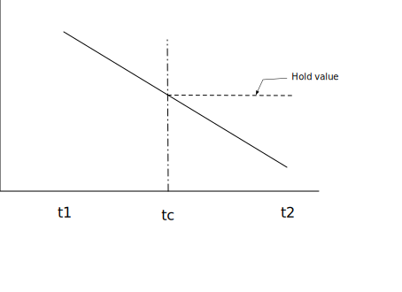
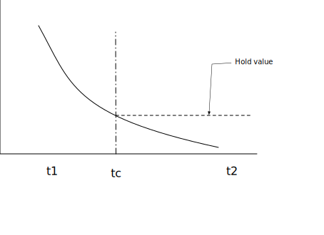
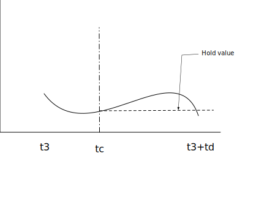

Introduction
Audio on the web has been fairly primitive up to this point and until
very recently has had to be delivered through plugins such as Flash and
QuickTime. The introduction of the audio element in HTML5
is very important, allowing for basic streaming audio playback. But, it
is not powerful enough to handle more complex audio applications. For
sophisticated web-based games or interactive applications, another
solution is required. It is a goal of this specification to include the
capabilities found in modern game audio engines as well as some of the
mixing, processing, and filtering tasks that are found in modern
desktop audio production applications.
The APIs have been designed with a wide variety of use cases [webaudio-usecases] in mind. Ideally, it should be able to support any use case which could reasonably be implemented with an optimized C++ engine controlled via script and run in a browser. That said, modern desktop audio software can have very advanced capabilities, some of which would be difficult or impossible to build with this system. Apple’s Logic Audio is one such application which has support for external MIDI controllers, arbitrary plugin audio effects and synthesizers, highly optimized direct-to-disk audio file reading/writing, tightly integrated time-stretching, and so on. Nevertheless, the proposed system will be quite capable of supporting a large range of reasonably complex games and interactive applications, including musical ones. And it can be a very good complement to the more advanced graphics features offered by WebGL. The API has been designed so that more advanced capabilities can be added at a later time.
Features
The API supports these primary features:
-
Modular routing for simple or complex mixing/effect architectures, including multiple sends and submixes.
-
High dynamic range, using 32bits floats for internal processing.
-
Sample-accurate scheduled sound playback with low latency for musical applications requiring a very high degree of rhythmic precision such as drum machines and sequencers. This also includes the possibility of dynamic creation of effects.
-
Automation of audio parameters for envelopes, fade-ins / fade-outs, granular effects, filter sweeps, LFOs etc.
-
Flexible handling of channels in an audio stream, allowing them to be split and merged.
-
Processing of audio sources from an
audioorvideomedia element. -
Processing live audio input using a
MediaStreamfrom getUserMedia(). -
Integration with WebRTC
-
Processing audio received from a remote peer using a
MediaStreamTrackAudioSourceNodeand [webrtc]. -
Sending a generated or processed audio stream to a remote peer using a
MediaStreamAudioDestinationNodeand [webrtc].
-
-
Audio stream synthesis and processing directly using scripts.
-
Spatialized audio supporting a wide range of 3D games and immersive environments:
-
Panning models: equalpower, HRTF, pass-through
-
Distance Attenuation
-
Sound Cones
-
Obstruction / Occlusion
-
Source / Listener based
-
-
A convolution engine for a wide range of linear effects, especially very high-quality room effects. Here are some examples of possible effects:
-
Small / large room
-
Cathedral
-
Concert hall
-
Cave
-
Tunnel
-
Hallway
-
Forest
-
Amphitheater
-
Sound of a distant room through a doorway
-
Extreme filters
-
Strange backwards effects
-
Extreme comb filter effects
-
-
Dynamics compression for overall control and sweetening of the mix
-
Efficient real-time time-domain and frequency analysis / music visualizer support.
-
Efficient biquad filters for lowpass, highpass, and other common filters.
-
A Waveshaping effect for distortion and other non-linear effects
-
Oscillators
Modular Routing
Modular routing allows arbitrary connections between different AudioNode objects. Each node can have inputs and/or outputs.
A source node has no inputs and a single output.
A destination node has one input and no outputs. Other nodes such as
filters can be placed between the source and destination nodes. The
developer doesn’t have to worry about low-level stream format
details when two objects are connected together; the right thing just happens.
For example, if a mono audio stream is connected to a
stereo input it should just mix to left and right channels appropriately.
In the simplest case, a single source can be routed directly to the output.
All routing occurs within an AudioContext containing a single AudioDestinationNode:

Illustrating this simple routing, here’s a simple example playing a single sound:
var context = new AudioContext(); function playSound() { var source = context.createBufferSource(); source.buffer = dogBarkingBuffer; source.connect(context.destination); source.start(0); }
Here’s a more complex example with three sources and a convolution reverb send with a dynamics compressor at the final output stage:

var context = 0; var compressor = 0; var reverb = 0; var source1 = 0; var source2 = 0; var source3 = 0; var lowpassFilter = 0; var waveShaper = 0; var panner = 0; var dry1 = 0; var dry2 = 0; var dry3 = 0; var wet1 = 0; var wet2 = 0; var wet3 = 0; var masterDry = 0; var masterWet = 0; function setupRoutingGraph () { context = new AudioContext(); // Create the effects nodes. lowpassFilter = context.createBiquadFilter(); waveShaper = context.createWaveShaper(); panner = context.createPanner(); compressor = context.createDynamicsCompressor(); reverb = context.createConvolver(); // Create master wet and dry. masterDry = context.createGain(); masterWet = context.createGain(); // Connect final compressor to final destination. compressor.connect(context.destination); // Connect master dry and wet to compressor. masterDry.connect(compressor); masterWet.connect(compressor); // Connect reverb to master wet. reverb.connect(masterWet); // Create a few sources. source1 = context.createBufferSource(); source2 = context.createBufferSource(); source3 = context.createOscillator(); source1.buffer = manTalkingBuffer; source2.buffer = footstepsBuffer; source3.frequency.value = 440; // Connect source1 dry1 = context.createGain(); wet1 = context.createGain(); source1.connect(lowpassFilter); lowpassFilter.connect(dry1); lowpassFilter.connect(wet1); dry1.connect(masterDry); wet1.connect(reverb); // Connect source2 dry2 = context.createGain(); wet2 = context.createGain(); source2.connect(waveShaper); waveShaper.connect(dry2); waveShaper.connect(wet2); dry2.connect(masterDry); wet2.connect(reverb); // Connect source3 dry3 = context.createGain(); wet3 = context.createGain(); source3.connect(panner); panner.connect(dry3); panner.connect(wet3); dry3.connect(masterDry); wet3.connect(reverb); // Start the sources now. source1.start(0); source2.start(0); source3.start(0); }
Modular routing also permits the output of AudioNodes to be routed to an AudioParam parameter that controls the behavior
of a different AudioNode. In this scenario, the
output of a node can act as a modulation signal rather than an
input signal.

function setupRoutingGraph() { var context = new AudioContext(); // Create the low frequency oscillator that supplies the modulation signal var lfo = context.createOscillator(); lfo.frequency.value = 1.0; // Create the high frequency oscillator to be modulated var hfo = context.createOscillator(); hfo.frequency.value = 440.0; // Create a gain node whose gain determines the amplitude of the modulation signal var modulationGain = context.createGain(); modulationGain.gain.value = 50; // Configure the graph and start the oscillators lfo.connect(modulationGain); modulationGain.connect(hfo.detune); hfo.connect(context.destination); hfo.start(0); lfo.start(0); }
API Overview
The interfaces defined are:
-
An AudioContext interface, which contains an audio signal graph representing connections between
AudioNodes. -
An
AudioNodeinterface, which represents audio sources, audio outputs, and intermediate processing modules.AudioNodes can be dynamically connected together in a modular fashion.AudioNodes exist in the context of anAudioContext. -
An
AnalyserNodeinterface, anAudioNodefor use with music visualizers, or other visualization applications. -
An
AudioBufferinterface, for working with memory-resident audio assets. These can represent one-shot sounds, or longer audio clips. -
An
AudioBufferSourceNodeinterface, anAudioNodewhich generates audio from an AudioBuffer. -
An
AudioDestinationNodeinterface, anAudioNodesubclass representing the final destination for all rendered audio. -
An
AudioParaminterface, for controlling an individual aspect of anAudioNode's functioning, such as volume. -
An
AudioListenerinterface, which works with aPannerNodefor spatialization. -
An
AudioWorkletinterface representing a factory for creating custom nodes that can process audio directly using scripts. -
An
AudioWorkletGlobalScopeinterface, the context in which AudioWorkletProcessor processing scripts run. -
An
AudioWorkletNodeinterface, anAudioNoderepresenting a node processed in an AudioWorkletProcessor. -
An
AudioWorkletProcessorinterface, representing a single node instance inside an audio worker. -
A
BiquadFilterNodeinterface, anAudioNodefor common low-order filters such as:-
Low Pass
-
High Pass
-
Band Pass
-
Low Shelf
-
High Shelf
-
Peaking
-
Notch
-
Allpass
-
-
A
ChannelMergerNodeinterface, anAudioNodefor combining channels from multiple audio streams into a single audio stream. -
A
ChannelSplitterNodeinterface, anAudioNodefor accessing the individual channels of an audio stream in the routing graph. -
A
ConstantSourceNodeinterface, anAudioNodefor generating a nominally constant output value with anAudioParamto allow automation of the value. -
A
ConvolverNodeinterface, anAudioNodefor applying a real-time linear effect (such as the sound of a concert hall). -
A
DelayNodeinterface, anAudioNodewhich applies a dynamically adjustable variable delay. -
A
DynamicsCompressorNodeinterface, anAudioNodefor dynamics compression. -
A
GainNodeinterface, anAudioNodefor explicit gain control. Because inputs toAudioNodes support multiple connections (as a unity-gain summing junction), mixers can be easily built with GainNodes. -
An
IIRFilterNodeinterface, anAudioNodefor a general IIR filter. -
A
MediaElementAudioSourceNodeinterface, anAudioNodewhich is the audio source from anaudio,video, or other media element. -
A
MediaStreamAudioSourceNodeinterface, anAudioNodewhich is the audio source from a MediaStream such as live audio input, or from a remote peer. -
A
MediaStreamTrackAudioSourceNodeinterface, anAudioNodewhich is the audio source from a MediaStreamTrack. -
A
MediaStreamAudioDestinationNodeinterface, anAudioNodewhich is the audio destination to a MediaStream sent to a remote peer. -
A
PannerNodeinterface, anAudioNodefor spatializing / positioning audio in 3D space. -
A
PeriodicWaveinterface for specifying custom periodic waveforms for use by theOscillatorNode. -
An
OscillatorNodeinterface, anAudioNodefor generating a periodic waveform. -
A
StereoPannerNodeinterface, anAudioNodefor equal-power positioning of audio input in a stereo stream. -
A
WaveShaperNodeinterface, anAudioNodewhich applies a non-linear waveshaping effect for distortion and other more subtle warming effects.
There are also several features that have been deprecated from the Web Audio API but not yet removed, pending implementation experience of their replacements:
-
A
ScriptProcessorNodeinterface, anAudioNode> for generating or processing audio directly using scripts. -
An
AudioProcessingEventinterface, which is an event type used withScriptProcessorNodeobjects.
1. The Audio API
1.1. The BaseAudioContext Interface
This interface represents a set of AudioNode objects and their connections. It allows for arbitrary routing of
signals to an AudioDestinationNode. Nodes are
created from the context and are then connected together.
BaseAudioContext is not instantiated directly,
but is instead extended by the concrete interfaces AudioContext (for real-time rendering) and OfflineAudioContext (for offline rendering).
enum AudioContextState {
"suspended",
"running",
"closed"
};
| Enumeration description | |
|---|---|
| This context is currently suspended (context time is not proceeding, audio hardware may be powered down/released). |
| Audio is being processed. |
| This context has been released, and can no longer be used to
process audio. All system audio resources have been released. Attempts to create new Nodes on the
AudioContext will throw InvalidStateError.
(AudioBuffers may still be created,
through createBuffer(), decodeAudioData(),
or the AudioBuffer constructor.)
|
callback DecodeErrorCallback = void (DOMExceptionerror); callback DecodeSuccessCallback = void (AudioBufferdecodedData); [Exposed=Window] interfaceBaseAudioContext: EventTarget { readonly attribute AudioDestinationNode destination; readonly attribute float sampleRate; readonly attribute double currentTime; readonly attribute AudioListener listener; readonly attribute AudioContextState state; [SameObject, SecureContext] readonly attribute AudioWorklet audioWorklet; Promise<void> resume (); attribute EventHandler onstatechange; AudioBuffer createBuffer (unsigned longnumberOfChannels, unsigned longlength, floatsampleRate); Promise<AudioBuffer> decodeAudioData (ArrayBufferaudioData, optional DecodeSuccessCallbacksuccessCallback, optional DecodeErrorCallbackerrorCallback); AudioBufferSourceNode createBufferSource (); ConstantSourceNode createConstantSource (); ScriptProcessorNode createScriptProcessor(optional unsigned long bufferSize = 0, optional unsigned long numberOfInputChannels = 2, optional unsigned long numberOfOutputChannels = 2); AnalyserNode createAnalyser (); GainNode createGain (); DelayNode createDelay (optional double maxDelayTime = 1.0); BiquadFilterNode createBiquadFilter (); IIRFilterNode createIIRFilter (sequence<double>feedforward, sequence<double>feedback); WaveShaperNode createWaveShaper (); PannerNode createPanner (); StereoPannerNode createStereoPanner (); ConvolverNode createConvolver (); ChannelSplitterNode createChannelSplitter (optional unsigned long numberOfOutputs = 6); ChannelMergerNode createChannelMerger (optional unsigned long numberOfInputs = 6); DynamicsCompressorNode createDynamicsCompressor (); OscillatorNode createOscillator (); PeriodicWave createPeriodicWave (sequence<float>real, sequence<float>imag, optional PeriodicWaveConstraintsconstraints); };
1.1.1. Attributes
audioWorklet, of type AudioWorklet, readonly-
Allows access to the
Workletobject that can import a script containingAudioWorkletProcessorclass definitions via the algorithms defined by [worklets-1] andAudioWorklet. currentTime, of type double, readonly-
This is the time in seconds of the sample frame immediately following the last sample-frame in the block of audio most recently processed by the context’s rendering graph. If the context’s rendering graph has not yet processed a block of audio, then
currentTimehas a value of zero.In the time coordinate system of
currentTime, the value of zero corresponds to the first sample-frame in the first block processed by the graph. Elapsed time in this system corresponds to elapsed time in the audio stream generated by theBaseAudioContext, which may not be synchronized with other clocks in the system. (For anOfflineAudioContext, since the stream is not being actively played by any device, there is not even an approximation to real time.)All scheduled times in the Web Audio API are relative to the value of
currentTime.When the
BaseAudioContextis in therunningstate, the value of this attribute is monotonically increasing and is updated by the rendering thread in uniform increments, corresponding to one render quantum. Thus, for a running context,currentTimeincreases steadily as the system processes audio blocks, and always represents the time of the start of the next audio block to be processed. It is also the earliest possible time when any change scheduled in the current state might take effect.currentTimeMUST be read atomically on the control thread before being returned. destination, of type AudioDestinationNode, readonly-
An
AudioDestinationNodewith a single input representing the final destination for all audio. Usually this will represent the actual audio hardware. AllAudioNodes actively rendering audio will directly or indirectly connect todestination. listener, of type AudioListener, readonly-
An
AudioListenerwhich is used for 3D spatialization. onstatechange, of type EventHandler-
A property used to set the
EventHandlerfor an event that is dispatched toBaseAudioContextwhen the state of the AudioContext has changed (i.e. when the corresponding promise would have resolved). An event of typeEventwill be dispatched to the event handler, which can query the AudioContext’s state directly. A newly-created AudioContext will always begin in thesuspendedstate, and a state change event will be fired whenever the state changes to a different state. This event is fired before theoncompleteevent is fired. sampleRate, of type float, readonly-
The sample rate (in sample-frames per second) at which the
BaseAudioContexthandles audio. It is assumed that allAudioNodes in the context run at this rate. In making this assumption, sample-rate converters or "varispeed" processors are not supported in real-time processing. The Nyquist frequency is half this sample-rate value. state, of type AudioContextState, readonly-
Describes the current state of the
AudioContext, on the control thread.
1.1.2. Methods
createAnalyser()-
Factory method for an
AnalyserNode.No parameters.Return type:AnalyserNode createBiquadFilter()-
Factory method for a
BiquadFilterNoderepresenting a second order filter which can be configured as one of several common filter types.No parameters.Return type:BiquadFilterNode createBuffer(numberOfChannels, length, sampleRate)-
Creates an AudioBuffer of the given size. The audio data in the buffer will be zero-initialized (silent). A
NotSupportedErrorexception MUST be thrown if any of the arguments is negative, zero, or outside its nominal range.Arguments for the BaseAudioContext.createBuffer() method. Parameter Type Nullable Optional Description numberOfChannelsunsigned long ✘ ✘ Determines how many channels the buffer will have. An implementation MUST support at least 32 channels. lengthunsigned long ✘ ✘ Determines the size of the buffer in sample-frames. sampleRatefloat ✘ ✘ Describes the sample-rate of the linear PCM audio data in the buffer in sample-frames per second. An implementation MUST support sample rates in at least the range 8000 to 96000. Return type:AudioBuffer createBufferSource()-
Factory method for a
AudioBufferSourceNode.No parameters.Return type:AudioBufferSourceNode createChannelMerger(numberOfInputs)-
Factory method for a
ChannelMergerNoderepresenting a channel merger. AnIndexSizeErrorexception MUST be thrown for invalid parameter values.Arguments for the BaseAudioContext.createChannelMerger(numberOfInputs) method. Parameter Type Nullable Optional Description numberOfInputsunsigned long ✘ ✔ Determines the number of inputs. Values of up to 32 MUST be supported. If not specified, then 6will be used.Return type:ChannelMergerNode createChannelSplitter(numberOfOutputs)-
Factory method for a
ChannelSplitterNoderepresenting a channel splitter. AnIndexSizeErrorexception MUST be thrown for invalid parameter values.Arguments for the BaseAudioContext.createChannelSplitter(numberOfOutputs) method. Parameter Type Nullable Optional Description numberOfOutputsunsigned long ✘ ✔ The number of outputs. Values of up to 32 MUST be supported. If not specified, then 6will be used.Return type:ChannelSplitterNode createConstantSource()-
Factory method for a
ConstantSourceNode.No parameters.Return type:ConstantSourceNode createConvolver()-
Factory method for a
ConvolverNode.No parameters.Return type:ConvolverNode createDelay(maxDelayTime)-
Factory method for a
DelayNode. The initial default delay time will be 0 seconds.Arguments for the BaseAudioContext.createDelay(maxDelayTime) method. Parameter Type Nullable Optional Description maxDelayTimedouble ✘ ✔ Specifies the maximum delay time in seconds allowed for the delay line. If specified, this value MUST be greater than zero and less than three minutes or a NotSupportedErrorexception MUST be thrown. If not specified, then1will be used.Return type:DelayNode createDynamicsCompressor()-
Factory method for a
DynamicsCompressorNode.No parameters.Return type:DynamicsCompressorNode createGain()-
Factory method for
GainNode.No parameters.Return type:GainNode createIIRFilter(feedforward, feedback)-
Arguments for the BaseAudioContext.createIIRFilter() method. Parameter Type Nullable Optional Description feedforwardsequence<double> ✘ ✘ An array of the feedforward (numerator) coefficients for the transfer function of the IIR filter. The maximum length of this array is 20. If all of the values are zero, an InvalidStateErrorMUST be thrown. ANotSupportedErrorMUST be thrown if the array length is 0 or greater than 20.feedbacksequence<double> ✘ ✘ An array of the feedback (denominator) coefficients for the transfer function of the IIR filter. The maximum length of this array is 20. If the first element of the array is 0, an InvalidStateErrorMUST be thrown. ANotSupportedErrorMUST be thrown if the array length is 0 or greater than 20.Return type:IIRFilterNode createOscillator()-
Factory method for an
OscillatorNode.No parameters.Return type:OscillatorNode createPanner()-
Factory method for a
PannerNode.No parameters.Return type:PannerNode createPeriodicWave(real, imag, constraints)-
Factory method to create a
PeriodicWave.When calling this method, execute these steps:-
If
realandimagare not of the same length, anIndexSizeErrorMUST be thrown. -
Let o be a new object of type
PeriodicWaveOptions. -
Respectively set the
realandimagparameters passed to this factory method to the attributes of the same name on o. -
Set the
disableNormalizationattribute on o to the value of thedisableNormalizationattribute of theconstraintsattribute passed to the factory method. -
Construct a new
PeriodicWavep, passing theBaseAudioContextthis factory method has been called on as a first argument, and o. -
Return p.
Arguments for the BaseAudioContext.createPeriodicWave() method. Parameter Type Nullable Optional Description realsequence<float> ✘ ✘ A sequence of cosine parameters. See its realconstructor argument for a more detailed description.imagsequence<float> ✘ ✘ A sequence of sine parameters. See its imagconstructor argument for a more detailed description.constraintsPeriodicWaveConstraints ✘ ✔ If not given, the waveform is normalized. Otherwise, the waveform is normalized according the value given by constraints.Return type:PeriodicWave -
createScriptProcessor(bufferSize, numberOfInputChannels, numberOfOutputChannels)-
Factory method for a
ScriptProcessorNode. This method is DEPRECATED, as it is intended to be replaced byAudioWorkletNode. Creates aScriptProcessorNodefor direct audio processing using scripts. AnIndexSizeErrorexception MUST be thrown ifbufferSizeornumberOfInputChannelsornumberOfOutputChannelsare outside the valid range.It is invalid for both
numberOfInputChannelsandnumberOfOutputChannelsto be zero. In this case anIndexSizeErrorMUST be thrown.Arguments for the BaseAudioContext.createScriptProcessor(bufferSize, numberOfInputChannels, numberOfOutputChannels) method. Parameter Type Nullable Optional Description bufferSizeunsigned long ✘ ✔ The bufferSizeparameter determines the buffer size in units of sample-frames. If it’s not passed in, or if the value is 0, then the implementation will choose the best buffer size for the given environment, which will be constant power of 2 throughout the lifetime of the node. Otherwise if the author explicitly specifies the bufferSize, it MUST be one of the following values: 256, 512, 1024, 2048, 4096, 8192, 16384. This value controls how frequently theonaudioprocessevent is dispatched and how many sample-frames need to be processed each call. Lower values forbufferSizewill result in a lower (better) latency. Higher values will be necessary to avoid audio breakup and glitches. It is recommended for authors to not specify this buffer size and allow the implementation to pick a good buffer size to balance between latency and audio quality. If the value of this parameter is not one of the allowed power-of-2 values listed above, anIndexSizeErrorMUST be thrown.numberOfInputChannelsunsigned long ✘ ✔ This parameter determines the number of channels for this node’s input. Values of up to 32 must be supported. A NotSupportedErrormust be thrown if the number of channels is not supported.numberOfOutputChannelsunsigned long ✘ ✔ This parameter determines the number of channels for this node’s output. Values of up to 32 must be supported. A NotSupportedErrormust be thrown if the number of channels is not supported.Return type:ScriptProcessorNode createStereoPanner()-
Factory method for a
StereoPannerNode.No parameters.Return type:StereoPannerNode createWaveShaper()-
Factory method for a
WaveShaperNoderepresenting a non-linear distortion.No parameters.Return type:WaveShaperNode decodeAudioData(audioData, successCallback, errorCallback)-
Asynchronously decodes the audio file data contained in the
ArrayBuffer. TheArrayBuffercan, for example, be loaded from anXMLHttpRequest’sresponseattribute after setting theresponseTypeto"arraybuffer". Audio file data can be in any of the formats supported by theaudioelement. The buffer passed todecodeAudioData()has its content-type determined by sniffing, as described in [mimesniff].Although the primary method of interfacing with this function is via its promise return value, the callback parameters are provided for legacy reasons. The system shall ensure that the
AudioContextis not garbage collected before the promise is resolved or rejected and any callback function is called and completes.WhendecodeAudioDatais called, the following steps MUST be performed on the control thread:-
Let promise be a new promise.
-
If the operation
IsDetachedBuffer(described in [ECMASCRIPT]) onaudioDataisfalse, execute the following steps:-
Detach the
audioDataArrayBuffer. This operation is described in [ECMASCRIPT]. -
Queue a decoding operation to be performed on another thread.
-
-
Else, execute the following steps:
-
Let error be a
DataCloneError. -
Reject promise with error.
-
Queue a task to invoke
errorCallbackwith error.
-
-
Return promise.
When queuing a decoding operation to be performed on another thread, the following steps MUST happen on a thread that is not the control thread nor the rendering thread, called the decoding thread.Note: Multiple decoding threads can run in parallel to service multiple calls to
decodeAudioData.-
Attempt to decode the encoded
audioDatainto linear PCM. -
If a decoding error is encountered due to the audio format not being recognized or supported, or because of corrupted/unexpected/inconsistent data, then queue a task to execute the following step, on the control thread’s event loop:
-
Let error be a
DOMExceptionwhose name isEncodingError>. -
Reject promise with error.
-
If
errorCallbackis not missing, invokeerrorCallbackwith error.
-
-
Otherwise:
-
Take the result, representing the decoded linear PCM audio data, and resample it to the sample-rate of the
AudioContextif it is different from the sample-rate ofaudioData. -
Queue a task on the control thread’s event loop to execute the following steps:
1.Let buffer be an
AudioBuffercontaining the final result (after possibly sample-rate conversion).-
Resolve promise with buffer.
-
If
successCallbackis not missing, invokesuccessCallbackwith buffer.
-
-
Arguments for the BaseAudioContext.decodeAudioData() method. Parameter Type Nullable Optional Description audioDataArrayBuffer ✘ ✘ An ArrayBuffer containing compressed audio data. successCallbackDecodeSuccessCallback ✘ ✔ A callback function which will be invoked when the decoding is finished. The single argument to this callback is an AudioBuffer representing the decoded PCM audio data. errorCallbackDecodeErrorCallback ✘ ✔ A callback function which will be invoked if there is an error decoding the audio file. Return type:Promise<AudioBuffer> -
resume()-
Resumes the progression of the
BaseAudioContext'scurrentTimewhen it has been suspended.When resume is called, execute these steps:-
Let promise be a new Promise.
-
If the control thread state flag on the
BaseAudioContextisclosedreject the promise withInvalidStateError, abort these steps, returning promise. -
If the
stateattribute of theBaseAudioContextis alreadyrunning, resolve promise, return it, and abort these steps. -
If the
BaseAudioContextis not allowed to start, append promise to pendingResumePromises and abort these steps, returning promise. -
Set the control thread state flag on the
BaseAudioContexttorunning. -
Queue a control message to resume the
BaseAudioContext. -
Return promise.
Running a control message to resume anBaseAudioContextmeans running these steps on the rendering thread:-
Attempt to acquire system resources.
-
Set the rendering thread state flag on the
BaseAudioContexttorunning. -
Start rendering the audio graph.
-
In case of failure, queue a task on the control thread to execute the following, and abort these steps:
-
Reject all promises from pendingResumePromises in order, then clear pendingResumePromises.
-
Reject promise.
-
-
Queue a task on the control thread’s event loop, to execute these steps:
-
Resolve all promises from pendingResumePromises in order, then clear pendingResumePromises.
-
Resolve promise.
-
If the
stateattribute of theBaseAudioContextis not alreadyrunning:-
Set the
stateattribute of theBaseAudioContexttorunning. -
Queue a task to fire a simple event named
statechangeat theBaseAudioContext.
-
-
No parameters. -
1.1.3. Callback DecodeSuccessCallback() Parameters
decodedData, of typeAudioBuffer-
The AudioBuffer containing the decoded audio data.
1.1.4. Callback DecodeErrorCallback() Parameters
error, of typeDOMException-
The error that occurred while decoding.
1.1.5. Lifetime
Once created, an AudioContext will continue to play
sound until it has no more sound to play, or the page goes away.
1.1.6. Lack of introspection or serialization primitives
The Web Audio API takes a fire-and-forget approach to
audio source scheduling. That is, source nodes are created
for each note during the lifetime of the AudioContext, and
never explicitly removed from the graph. This is incompatible with
a serialization API, since there is no stable set of nodes that
could be serialized.
Moreover, having an introspection API would allow content script to be able to observe garbage collections.
1.1.7. System resources associated with BaseAudioContext subclasses
The subclasses AudioContext and OfflineAudioContext should be considered expensive objects. Creating these objects may
involve creating a high-priority thread, or using a low-latency
system audio stream, both having an impact on energy consumption.
It is usually not necessary to create more than one AudioContext in a document.
Constructing or resuming a BaseAudioContext subclass
involves acquiring system resources for
that context. For AudioContext, this also requires creation
of a system audio stream. These operations return when the context
begins generating output from its associated audio graph.
Additionally, a user-agent can have an implementation-defined
maximum number of AudioContexts, after which any attempt to
create a new AudioContext will fail, throwing NotSupportedError.
suspend and close allow authors to release system resources, including threads,
processes and audio streams. Suspending a BaseAudioContext permits implementations to release some of its resources, and
allows it to continue to operate later by invoking resume. Closing an AudioContext permits implementations to release all of its
resources, after which it cannot be used or resumed again.
Note: For example, this can involve waiting for the audio callbacks to fire regularly, or to wait for the hardware to be ready for processing.
1.2. The AudioContext Interface
This interface represents an audio graph whose AudioDestinationNode is routed to a real-time
output device that produces a signal directed at the user. In most
use cases, only a single AudioContext is used per
document.
An AudioContext is said to be allowed to
start if the user agent and the system allow audio output in
the current context. In other words, if the AudioContext control thread state is
allowed to transition from suspended to running.
Note: For example, a user agent could require that an AudioContext control thread state change to
running is triggered by user activation (as described in [HTML]).
[Exposed=Window]
enum AudioContextLatencyCategory {
"balanced",
"interactive",
"playback"
};
| Enumeration description | |
|---|---|
| Balance audio output latency and power consumption. |
| Provide the lowest audio output latency possible without glitching. This is the default. |
| Prioritize sustained playback without interruption over audio output latency. Lowest power consumption. |
[Exposed=Window, Constructor (optional AudioContextOptionscontextOptions)] interfaceAudioContext: BaseAudioContext { readonly attribute double baseLatency; readonly attribute double outputLatency; AudioTimestamp getOutputTimestamp (); Promise<void> suspend (); Promise<void> close (); MediaElementAudioSourceNode createMediaElementSource (HTMLMediaElementmediaElement); MediaStreamAudioSourceNode createMediaStreamSource (MediaStreammediaStream); MediaStreamTrackAudioSourceNode createMediaStreamTrackSource (MediaStreamTrackmediaStreamTrack); MediaStreamAudioDestinationNode createMediaStreamDestination (); };
1.2.1. Constructors
AudioContext(contextOptions)-
When creating an
AudioContext, execute these steps:-
Set a
control thread statetosuspendedon theAudioContext. -
Set a rendering thread state to
suspendedon theAudioContext. -
Let pendingResumePromises be an empty ordered list of promises.
-
If
contextOptionsis given, apply the options:-
Set the internal latency of this
AudioContextaccording tocontextOptions., as described inlatencyHintlatencyHint. -
If
contextOptions.is specified, set thesampleRatesampleRateof thisAudioContextto this value. Otherwise, use the sample rate of the default output device. If the selected sample rate differs from the sample rate of the output device, thisAudioContextMUST resample the audio output to match the sample rate of the output device.Note: If resampling is required, the latency of the AudioContext may be affected, possibly by a large amount.
-
-
If the
AudioContextis not allowed to start, abort these steps. -
Send a control message to start processing.
Sending a control message to start processing means executing the following steps:-
Attempt to acquire system resources.
-
In case of failure, abort these steps.
-
Set the rendering thread state to
runningon theAudioContext. -
Queue a task on the control thread event loop, to execute these steps:
-
Set the
stateattribute of theAudioContexttorunning. -
Queue a task to fire a simple event named
statechangeat theAudioContext.
-
Note: It is unfortunately not possible to programatically notify authors that the creation of the
AudioContextfailed. User-Agents are encouraged to log an informative message if they have access to a logging mechanism, such as a developer tools console.Arguments for the AudioContext.AudioContext() method. Parameter Type Nullable Optional Description contextOptionsAudioContextOptions ✘ ✔ User-specified options controlling how the AudioContextshould be constructed. -
1.2.2. Attributes
baseLatency, of type double, readonly-
This represents the number of seconds of processing latency incurred by the
AudioContextpassing the audio from theAudioDestinationNodeto the audio subsystem. It does not include any additional latency that might be caused by any other processing between the output of theAudioDestinationNodeand the audio hardware and specifically does not include any latency incurred the audio graph itself.For example, if the audio context is running at 44.1 kHz and the
AudioDestinationNodeimplements double buffering internally and can process and output audio each render quantum, then the processing latency is \((2\cdot128)/44100 = 5.805 \mathrm{ ms}\), approximately. outputLatency, of type double, readonly-
The estimation in seconds of audio output latency, i.e., the interval between the time the UA requests the host system to play a buffer and the time at which the first sample in the buffer is actually processed by the audio output device. For devices such as speakers or headphones that produce an acoustic signal, this latter time refers to the time when a sample’s sound is produced.
The
outputLatencyattribute value depends on the platform and the connected hardware audio output device. TheoutputLatencyattribute value does not change for the context’s lifetime as long as the connected audio output device remains the same. If the audio output device is changed theoutputLatencyattribute value will be updated accordingly.
1.2.3. Methods
close()-
Closes the
AudioContext, releasing the system resources it’s using. This will not automatically release allAudioContext-created objects, but will suspend the progression of theAudioContext'scurrentTime, and stop processing audio data.When close is called, execute these steps:-
Let promise be a new Promise.
-
If the control thread state flag on the
AudioContextisclosedreject the promise withInvalidStateError, abort these steps, returning promise. -
If the
stateattribute of theAudioContextis alreadyclosed, resolve promise, return it, and abort these steps. -
Set the control thread state flag on the
AudioContexttoclosed. -
Queue a control message to the
AudioContext. -
Return promise.
Running a control message to close anAudioContextmeans running these steps on the rendering thread:-
Attempt to release system resources.
-
Set the rendering thread state to
suspended. -
Queue a task on the control thread’s event loop, to execute these steps:
-
Resolve promise.
-
If the
stateattribute of theAudioContextis not alreadyclosed:-
Set the
stateattribute of theAudioContexttoclosed. -
Queue a task to fire a simple event named
statechangeat theAudioContext.
-
-
When an
AudioContextis closed, any MediaStreams andHTMLMediaElements that were connected to anAudioContextwill have their output ignored. That is, these will no longer cause any output to speakers or other output devices. For more flexibility in behavior, consider usingHTMLEMediaElement.captureStream().Note: When an
AudioContexthas been closed, implementation can choose to aggressively release more resources than when suspending.No parameters. -
createMediaElementSource(mediaElement)-
Creates a
MediaElementAudioSourceNodegiven an HTMLMediaElement. As a consequence of calling this method, audio playback from the HTMLMediaElement will be re-routed into the processing graph of theAudioContext.Arguments for the AudioContext.createMediaElementSource() method. Parameter Type Nullable Optional Description mediaElementHTMLMediaElement ✘ ✘ The media element that will be re-routed. Return type:MediaElementAudioSourceNode createMediaStreamDestination()-
Creates a
MediaStreamAudioDestinationNodeNo parameters.Return type:MediaStreamAudioDestinationNode createMediaStreamSource(mediaStream)-
Creates a
MediaStreamAudioSourceNode.Arguments for the AudioContext.createMediaStreamSource() method. Parameter Type Nullable Optional Description mediaStreamMediaStream ✘ ✘ The media stream that will act as source. Return type:MediaStreamAudioSourceNode createMediaStreamTrackSource(mediaStreamTrack)-
Creates a
MediaStreamTrackAudioSourceNode.Arguments for the AudioContext.createMediaStreamTrackSource() method. Parameter Type Nullable Optional Description mediaStreamTrackMediaStreamTrack ✘ ✘ The MediaStreamTrack that will act as source. The value of its kindattribute must be equal to"audio", or anInvalidStateErrorexception MUST be thrown.Return type:MediaStreamTrackAudioSourceNode getOutputTimestamp()-
Returns a new
AudioTimestampinstance containing two correlated context’s audio stream position values: thecontextTimemember contains the time of the sample frame which is currently being rendered by the audio output device (i.e., output audio stream position), in the same units and origin as context’scurrentTime; theperformanceTimemember contains the time estimating the moment when the sample frame corresponding to the storedcontextTimevalue was rendered by the audio output device, in the same units and origin asperformance.now()(described in [hr-time-2]).If the context’s rendering graph has not yet processed a block of audio, then
getOutputTimestampcall returns anAudioTimestampinstance with both members containing zero.After the context’s rendering graph has started processing of blocks of audio, its
currentTimeattribute value always exceeds thecontextTimevalue obtained fromgetOutputTimestampmethod call.The value returned fromgetOutputTimestampmethod can be used to get performance time estimation for the slightly later context’s time value:function outputPerformanceTime(contextTime) { var timestamp = context.getOutputTimestamp(); var elapsedTime = contextTime - timestamp.contextTime; return timestamp.performanceTime + elapsedTime * 1000; }
In the above example the accuracy of the estimation depends on how close the argument value is to the current output audio stream position: the closer the given
contextTimeis totimestamp.contextTime, the better the accuracy of the obtained estimation.Note: The difference between the values of the context’s
currentTimeand thecontextTimeobtained fromgetOutputTimestampmethod call cannot be considered as a reliable output latency estimation becausecurrentTimemay be incremented at non-uniform time intervals, sooutputLatencyattribute should be used instead.No parameters.Return type:AudioTimestamp suspend()-
Suspends the progression of
AudioContext'scurrentTime, allows any current context processing blocks that are already processed to be played to the destination, and then allows the system to release its claim on audio hardware. This is generally useful when the application knows it will not need theAudioContextfor some time, and wishes to temporarily release system resource associated with theAudioContext. The promise resolves when the frame buffer is empty (has been handed off to the hardware), or immediately (with no other effect) if the context is alreadysuspended. The promise is rejected if the context has been closed.When suspend is called, execute these steps:-
Let promise be a new Promise.
-
If the control thread state flag on the
AudioContextisclosedreject the promise withInvalidStateError, abort these steps, returning promise. -
If the
stateattribute of theAudioContextis alreadysuspended, resolve promise, return it, and abort these steps. -
Set the control thread state flag on the
AudioContexttosuspended. -
Queue a control message to suspend the
AudioContext. -
Return promise.
Running a control message to suspend anAudioContextmeans running these steps on the rendering thread:-
Attempt to release system resources.
-
Set the rendering thread state on the
AudioContexttosuspended. -
Queue a task on the control thread’s event loop, to execute these steps:
-
Resolve promise.
-
If the
stateattribute of theAudioContextis not alreadysuspended:-
Set the
stateattribute of theAudioContexttosuspended. -
Queue a task to fire a simple event named
statechangeat theAudioContext.
-
-
While an
AudioContextis suspended, MediaStreams will have their output ignored; that is, data will be lost by the real time nature of media streams.HTMLMediaElements will similarly have their output ignored until the system is resumed.AudioWorkletNodes andScriptProcessorNodes will cease to have their processing handlers invoked while suspended, but will resume when the context is resumed. For the purpose ofAnalyserNodewindow functions, the data is considered as a continuous stream - i.e. theresume()/suspend()does not cause silence to appear in theAnalyserNode's stream of data. In particular, callingAnalyserNodefunctions repeatedly when aAudioContextis suspended MUST return the same data.No parameters. -
1.2.4. AudioContextOptions
The AudioContextOptions dictionary is used to
specify user-specified options for an AudioContext.
[Exposed=Window]
dictionary AudioContextOptions {
(AudioContextLatencyCategory or double) latencyHint = "interactive";
float sampleRate;
};
1.2.4.1. Dictionary AudioContextOptions Members
latencyHint, of type(AudioContextLatencyCategory or double), defaulting to"interactive"-
Identify the type of playback, which affects tradeoffs between audio output latency and power consumption.
The preferred value of the
latencyHintis a value fromAudioContextLatencyCategory. However, a double can also be specified for the number of seconds of latency for finer control to balance latency and power consumption. It is at the browser’s discretion to interpret the number appropriately. The actual latency used is given by AudioContext’sbaseLatencyattribute. sampleRate, of type float-
Set the
sampleRateto this value for theAudioContextthat will be created. The supported values are the same as the sample rates for anAudioBuffer. ANotSupportedErrorexception MUST be thrown if the specified sample rate is not supported.If
sampleRateis not specified, the preferred sample rate of the output device for thisAudioContextis used.
1.2.5. AudioTimestamp
[Exposed=Window]
dictionary AudioTimestamp {
double contextTime;
DOMHighResTimeStamp performanceTime;
};
1.2.5.1. Dictionary AudioTimestamp Members
contextTime, of type double-
Represents a point in the time coordinate system of BaseAudioContext’s
currentTime. performanceTime, of type DOMHighResTimeStamp-
Represents a point in the time coordinate system of a
Performanceinterface implementation (described in [hr-time-2]).
1.3. The OfflineAudioContext Interface
OfflineAudioContext is a particular type of BaseAudioContext for rendering/mixing-down
(potentially) faster than real-time. It does not render to the audio
hardware, but instead renders as quickly as possible, fulfilling the
returned promise with the rendered result as an AudioBuffer.
[Exposed=Window, Constructor (OfflineAudioContextOptions contextOptions), Constructor (unsigned long numberOfChannels, unsigned long length, float sampleRate)] interfaceOfflineAudioContext: BaseAudioContext { Promise<AudioBuffer> startRendering(); Promise<void> suspend(doublesuspendTime); readonly attribute unsigned long length; attribute EventHandler oncomplete; };
1.3.1. Constructors
OfflineAudioContext(contextOptions)-
Let c be a new
OfflineAudioContextobject. Initialize c as follows:-
Set the
control thread statefor c to"suspended". -
Set the
rendering thread statefor c to"suspended". -
Construct an
AudioDestinationNodewith itschannelCountset tocontextOptions.numberOfChannels.
Arguments for the OfflineAudioContext.OfflineAudioContext(contextOptions) method. Parameter Type Nullable Optional Description contextOptionsThe initial parameters needed to construct this context. -
OfflineAudioContext(numberOfChannels, length, sampleRate)-
The
OfflineAudioContextcan constructed with the same arguments as AudioContext.createBuffer. ANotSupportedErrorexception MUST be thrown if any of the arguments is negative, zero, or outside its nominal range.The OfflineAudioContext is constructed as if
new OfflineAudioContext({ numberOfChannels: numberOfChannels, length: length, sampleRate: sampleRate })
were called instead.
Arguments for the OfflineAudioContext.OfflineAudioContext(numberOfChannels, length, sampleRate) method. Parameter Type Nullable Optional Description numberOfChannelsunsigned long ✘ ✘ Determines how many channels the buffer will have. See createBuffer()for the supported number of channels.lengthunsigned long ✘ ✘ Determines the size of the buffer in sample-frames. sampleRatefloat ✘ ✘ Describes the sample-rate of the linear PCM audio data in the buffer in sample-frames per second. See createBuffer()for valid sample rates.
1.3.2. Attributes
length, of type unsigned long, readonly-
The size of the buffer in sample-frames. This is the same as the value of the
lengthparameter for the constructor. oncomplete, of type EventHandler-
An EventHandler of type OfflineAudioCompletionEvent. It is the last event fired on an
OfflineAudioContext.
1.3.3. Methods
startRendering()-
Given the current connections and scheduled changes, starts rendering audio. The system shall ensure that the
OfflineAudioContextis not garbage collected until either the promise is resolved and any callback function is called and completes, or until thesuspendfunction is called.Although the primary method of getting the rendered audio data is via its promise return value, the instance will also fire an event named
completefor legacy reasons.WhenstartRenderingis called, the following steps MUST be performed on the control thread:- Set a flag called renderingStarted on the
OfflineAudioContextto true. - If the renderingStarted flag on the
OfflineAudioContextis true, return a rejected promise withInvalidStateError, and abort these steps. - Let promise be a new promise.
- Create a new
AudioBuffer, with a number of channels, length and sample rate equal respectively to thenumberOfChannels,lengthandsampleRatevalues passed to this instance’s constructor in thecontextOptionsparameter. Assign this buffer to an internal slot[[rendered buffer]]in theOfflineAudioContext. - If an exception was thrown during the preceding
AudioBufferconstructor call, reject promise with this exception. - Otherwise, in the case that the buffer was successfully constructed, begin offline rendering.
- Return promise.
To begin offline rendering, the following steps MUST happen on a rendering thread that is created for the occasion.- Given the current connections and scheduled changes, start
rendering
lengthsample-frames of audio into[[rendered buffer]] - For every render quantum, check and suspend the rendering if necessary.
- If a suspended context is resumed, continue to render the buffer.
-
Once the rendering is complete, queue a task on the control thread’s event loop to perform the following
steps:
- Resolve the promise created by
startRendering()with[[rendered buffer]]. - Queue a task to fire an event named
completeat this instance, using an instance ofOfflineAudioCompletionEventwhoserenderedBufferproperty is set to[[rendered buffer]].
- Resolve the promise created by
No parameters.Return type:Promise<AudioBuffer> - Set a flag called renderingStarted on the
suspend(suspendTime)-
Schedules a suspension of the time progression in the audio context at the specified time and returns a promise. This is generally useful when manipulating the audio graph synchronously on
OfflineAudioContext.Note that the maximum precision of suspension is the size of the render quantum and the specified suspension time will be rounded down to the nearest render quantum boundary. For this reason, it is not allowed to schedule multiple suspends at the same quantized frame. Also, scheduling should be done while the context is not running to ensure precise suspension.
Arguments for the OfflineAudioContext.suspend() method. Parameter Type Nullable Optional Description suspendTimedouble ✘ ✘ Schedules a suspension of the rendering at the specified time, which is quantized and rounded down to the render quantum size. If the quantized frame number - is negative or
- is less than or equal to the current time or
- is greater than or equal to the total render duration or
- is scheduled by another suspend for the same time,
InvalidStateError.
1.3.4. OfflineAudioContextOptions
This specifies the options to use in constructing an OfflineAudioContext.
[Exposed=Window]
dictionary OfflineAudioContextOptions {
unsigned long numberOfChannels = 1;
required unsigned long length;
required float sampleRate;
};
1.3.4.1. Dictionary OfflineAudioContextOptions Members
length, of type unsigned long-
The length of the rendered
AudioBufferin sample-frames. numberOfChannels, of type unsigned long, defaulting to1-
The number of channels for this
OfflineAudioContext. sampleRate, of type float-
The sample rate for this
OfflineAudioContext.
1.3.5. The OfflineAudioCompletionEvent Interface
This is an Event object which is dispatched to OfflineAudioContext for legacy reasons.
[Exposed=Window,Constructor(DOMStringtype, OfflineAudioCompletionEventIniteventInitDict)] interfaceOfflineAudioCompletionEvent: Event { readonly attribute AudioBuffer renderedBuffer; };
1.3.5.1. Attributes
renderedBuffer, of type AudioBuffer, readonly-
An
AudioBuffercontaining the rendered audio data.
1.3.5.2. OfflineAudioCompletionEventInit
[Exposed=Window]
dictionary OfflineAudioCompletionEventInit : EventInit {
required AudioBuffer renderedBuffer;
};
1.3.5.2.1. Dictionary OfflineAudioCompletionEventInit Members
renderedBuffer, of type AudioBuffer-
Value to be assigned to the
renderedBufferattribute of the event.
1.4. The AudioBuffer Interface
This interface represents a memory-resident audio asset (for one-shot
sounds and other short audio clips). Its format is non-interleaved
32-bit linear floating-point PCM values with a normal range of \([-1,
1]\), but values are not limited to this range. It can contain one or
more channels. Typically, it would be expected that the length of the
PCM data would be fairly short (usually somewhat less than a minute).
For longer sounds, such as music soundtracks, streaming should be
used with the audio element and MediaElementAudioSourceNode.
An AudioBuffer may be used by one or more AudioContexts, and can be shared between an OfflineAudioContext and an AudioContext.
AudioBuffer has four internal slots:
[[number of channels]]-
The number of audio channels for this
AudioBuffer, which is an unsigned long. [[length]]-
The length of each channel of this
AudioBuffer, which is an unsigned long. [[sample rate]]-
The sample-rate, in Hz, of this
AudioBuffer, a float [[internal data]]-
A data block holding the audio sample data.
[Exposed=Window, Constructor (AudioBufferOptionsoptions)] interfaceAudioBuffer{ readonly attribute float sampleRate; readonly attribute unsigned long length; readonly attribute double duration; readonly attribute unsigned long numberOfChannels; Float32Array getChannelData (unsigned longchannel); void copyFromChannel (Float32Arraydestination, unsigned longchannelNumber, optional unsigned longstartInChannel= 0); void copyToChannel (Float32Arraysource, unsigned longchannelNumber, optional unsigned longstartInChannel= 0); };
1.4.1. Constructors
AudioBuffer(options)-
Let b be a new
AudioBufferobject. Respectively assign the values of the attributesnumberOfChannels,length,sampleRateof theAudioBufferOptionspassed in the constructor to the internal slots[[number of channels]],[[length]],[[sample rate]].Set the internal slot
[[internal data]]of thisAudioBufferto the result of callingCreateByteDataBlock(.[[length]]*[[number of channels]])Note: This initializes the underlying storage to zero.
Return b.
Arguments for the AudioBuffer.AudioBuffer() method. Parameter Type Nullable Optional Description optionsAudioBufferOptions ✘ ✘
1.4.2. Attributes
duration, of type double, readonly-
Duration of the PCM audio data in seconds.
This is computed from the
[[sample rate]]and the[[length]]of theAudioBufferby performing a division between the[[length]]and the[[sample rate]]. length, of type unsigned long, readonly-
Length of the PCM audio data in sample-frames. This MUST return the value of
[[length]]. numberOfChannels, of type unsigned long, readonly-
The number of discrete audio channels. This MUST return the value of
[[number of channels]]. sampleRate, of type float, readonly-
The sample-rate for the PCM audio data in samples per second. This MUST return the value of
[[sample rate]].
1.4.3. Methods
copyFromChannel(destination, channelNumber, startInChannel)-
The
copyFromChannel()method copies the samples from the specified channel of theAudioBufferto thedestinationarray.Let
bufferbe theAudioBufferbuffer with \(N_b\) frames, let \(N_f\) be the number of elements in thedestinationarray, and \(k\) be the value ofstartInChannel. Then the number of frames copied frombuffertodestinationis \(\min(N_b - k, N_f)\). If this is less than \(N_f\), then the remaining elements ofdestinationare not modified.Arguments for the AudioBuffer.copyFromChannel() method. Parameter Type Nullable Optional Description destinationFloat32Array ✘ ✘ The array the channel data will be copied to. channelNumberunsigned long ✘ ✘ The index of the channel to copy the data from. If channelNumberis greater or equal than the number of channel of theAudioBuffer, anIndexSizeErrorMUST be thrown.startInChannelunsigned long ✘ ✔ An optional offset to copy the data from. If startInChannelis greater than thelengthof theAudioBuffer, anIndexSizeErrorMUST be thrown.Return type:void copyToChannel(source, channelNumber, startInChannel)-
The
copyToChannel()method copies the samples from the specified channel of theAudioBufferto thedestinationarray.Let
bufferbe theAudioBufferbuffer with \(N_b\) frames, let \(N_f\) be the number of elements in thedestinationarray, and \(k\) be the value ofstartInChannel. Then the number of frames copied frombuffertodestinationis \(\min(N_b - k, N_f)\). If this is less than \(N_f\), then the remaining elements ofdestinationare not modified.Arguments for the AudioBuffer.copyToChannel() method. Parameter Type Nullable Optional Description sourceFloat32Array ✘ ✘ The array the channel data will be copied from. channelNumberunsigned long ✘ ✘ The index of the channel to copy the data to. If channelNumberis greater or equal than the number of channel of theAudioBuffer, anIndexSizeErrorMUST be thrown.startInChannelunsigned long ✘ ✔ An optional offset to copy the data to. If startInChannelis greater than thelengthof theAudioBuffer, anIndexSizeErrorMUST be thrown.Return type:void getChannelData(channel)-
According to the rules described in acquire the content either get a reference to or get a copy of the bytes stored in
[[internal data]]in a newFloat32Array.Arguments for the AudioBuffer.getChannelData() method. Parameter Type Nullable Optional Description channelunsigned long ✘ ✘ This parameter is an index representing the particular channel to get data for. An index value of 0 represents the first channel. This index value MUST be less than numberOfChannelsor anIndexSizeErrorexception MUST be thrown.Return type:Float32Array
Note: The methods copyToChannel() and copyFromChannel() can be used to fill part of an array by
passing in a Float32Array that’s a view onto the larger
array. When reading data from an AudioBuffer's channels, and
the data can be processed in chunks, copyFromChannel() should be preferred to calling getChannelData() and
accessing the resulting array, because it may avoid unnecessary
memory allocation and copying.
An internal operation acquire the
contents of an AudioBuffer is invoked when the
contents of an AudioBuffer are needed by some API
implementation. This operation returns immutable channel data to the
invoker.
AudioBuffer, run the following steps:
-
If the operation
IsDetachedBufferon any of theAudioBuffer'sArrayBuffers returntrue, abort these steps, and return a zero-length channel data buffer to the invoker. -
Detach all
ArrayBuffers for arrays previously returned bygetChannelData()on thisAudioBuffer. -
Retain the underlying
[[internal data]]from thoseArrayBuffers and return references to them to the invoker. -
Attach
ArrayBuffers containing copies of the data to theAudioBuffer, to be returned by the next call togetChannelData().
The acquire the contents of an AudioBuffer operation is invoked in the following cases:
-
When
AudioBufferSourceNode.startis called, it acquires the contents of the node’sbuffer. If the operation fails, nothing is played. -
When the
bufferof anAudioBufferSourceNodeis set andAudioBufferSourceNode.starthas been previously called, the setter acquires the content of theAudioBuffer. If the operation fails, nothing is played. -
When a
ConvolverNode'sbufferis set to anAudioBufferwhile the node is connected to an output node, or aConvolverNodeis connected to an output node while theConvolverNode'sbufferis set to anAudioBuffer, it acquires the content of theAudioBuffer. -
When the dispatch of an
AudioProcessingEventcompletes, it acquires the contents of itsoutputBuffer.
Note: This means that copyToChannel() cannot be used to change
the content of an AudioBuffer currently in use by an AudioNode that has acquired the content of an AudioBuffer since the AudioNode will continue to use the data previously
acquired.
1.4.4. AudioBufferOptions
This specifies the options to use in constructing an AudioBuffer. The length and sampleRate members are
required. A NotFoundError exception MUST be thrown if
any of the required members are not specified.
dictionary AudioBufferOptions {
unsigned long numberOfChannels = 1;
required unsigned long length;
required float sampleRate;
};
1.4.4.1. Dictionary AudioBufferOptions Members
length, of type unsigned long-
The length in sample frames of the buffer.
numberOfChannels, of type unsigned long, defaulting to1-
The number of channels for the buffer.
sampleRate, of type float-
The sample rate in Hz for the buffer.
1.5. The AudioNode Interface
AudioNodes are the building blocks of an AudioContext. This interface
represents audio sources, the audio destination, and intermediate
processing modules. These modules can be connected together to form processing graphs for rendering audio
to the audio hardware. Each node can have inputs and/or outputs. A source node has no inputs and a single
output. Most processing nodes such as filters will have one input and
one output. Each type of AudioNode differs in the
details of how it processes or synthesizes audio. But, in general, an AudioNode will process its inputs (if it has
any), and generate audio for its outputs (if it has any).
Each output has one or more channels. The exact number of channels
depends on the details of the specific AudioNode.
An output may connect to one or more AudioNode inputs, thus fan-out is supported. An input initially has no
connections, but may be connected from one or more AudioNode outputs, thus fan-in is supported. When the connect() method is called to connect an output of an AudioNode to an input of an AudioNode, we call that a connection to the input.
Each AudioNode input has a specific number of
channels at any given time. This number can change depending on the connection(s) made to the input. If the input has no
connections then it has one channel which is silent.
For each input, an AudioNode performs a
mixing (usually an up-mixing) of all connections to that input.
Please see §3 Mixer Gain Structure for more informative
details, and the §5 Channel up-mixing and down-mixing section for normative requirements.
The processing of inputs and the internal operations of an AudioNode take place continuously with respect to AudioContext time, regardless of whether the node has
connected outputs, and regardless of whether these outputs ultimately
reach an AudioContext's AudioDestinationNode.
For performance reasons, practical implementations will need to use
block processing, with each AudioNode processing
a fixed number of sample-frames of size block-size. In order
to get uniform behavior across implementations, we will define this
value explicitly. block-size is defined to be 128
sample-frames which corresponds to roughly 3ms at a sample-rate of
44.1 kHz.
[Exposed=Window] interface AudioNode : EventTarget { AudioNode connect (AudioNode destinationNode, optional unsigned long output = 0, optional unsigned long input = 0); void connect (AudioParam destinationParam, optional unsigned long output = 0); void disconnect (); void disconnect (unsigned long output); void disconnect (AudioNode destinationNode); void disconnect (AudioNode destinationNode, unsigned long output); void disconnect (AudioNode destinationNode, unsigned long output, unsigned long input); void disconnect (AudioParam destinationParam); void disconnect (AudioParam destinationParam, unsigned long output); readonly attribute BaseAudioContext context; readonly attribute unsigned long numberOfInputs; readonly attribute unsigned long numberOfOutputs; attribute unsigned long channelCount; attribute ChannelCountMode channelCountMode; attribute ChannelInterpretation channelInterpretation; };
1.5.1. AudioNode Creation
AudioNodes can be created in two ways: by using the
constructor for this particular interface, or by using the factory method on the BaseAudioContext or AudioContext.
The BaseAudioContext passed as first argument of the
constructor of an AudioNodes is called the associated BaseAudioContext of the AudioNode to be created. Similarly, when using the factory
method, the associated BaseAudioContext of the AudioNode is the BaseAudioContext this factory method
is called on.
AudioNode of a particular type n using its constructor, with a BaseAudioContext c as first argument, and an associated option object option as second argument,
from the relevant global of c, execute these steps:
-
Let o be a new object of type n.
-
Initialize o, with c and option as arguments.
-
Return o
AudioNode of a particular type n using its factory method, called on a BaseAudioContext c, execute these steps:
-
Let o be a new object of type n.
-
Let option be a dictionary of the type associated to the interface associated to this factory method.
-
For each parameter passed to the factory method, set the dictionary member of the same name on option to the value of this parameter.
-
Initialize o with c and option as arguments.
-
Return o
AudioNode means executing the following steps, given the
arguments context and dict passed to the
constructor of this interface.
-
Set o’s associated
BaseAudioContextto context. -
Set its value for
numberOfInputs,numberOfOutputs,channelCount,channelCountMode,channelInterpretationto the default value for this specific interface outlined in the section for eachAudioNode. -
If the
AudioNodebeing constructed is aConvolverNode, set itsnormalizeattribute with the inverse of the value of thedisableNormalizationin dict, and then set itsbufferattribute to the value of thebufferin dict member, in this order, and jump to the last step of this algorithm.Note: This means that the buffer will be normalized according to the value of the
normalizeattribute. -
For each member of dict passed in, execute these steps, with k the key of the member, and v its value:
-
If k is
disableNormalizationorbufferand n isConvolverNode, jump to the beginning of this loop. -
If k is the name of an
AudioParamon this interface, set thevalueattribute of thisAudioParamto v. -
Else if k is the name of an attribute on this interface, set the object associated with this attribute to v.
-
The associated interface for a factory method is the interface of the objects that are returned from this method. The associated option object for an interface is the option object that can be passed to the constructor for this interface.
AudioNodes are EventTargets, as described in [DOM].
This means that it is possible to dispatch events to AudioNodes the same way that other EventTargets
accept events.
[Exposed=Window]
enum ChannelCountMode {
"max",
"clamped-max",
"explicit"
};
The ChannelCountMode, in conjuction with the node’s channelCount and channelInterpretation values, is used to determine
the computedNumberOfChannels that controls how inputs to a
node are to be mixed. The computedNumberOfChannels is
determined as shown below. See §5 Channel up-mixing and down-mixing for more information on how
mixing is to be done.
| Enumeration description | |
|---|---|
max
| computedNumberOfChannels is the maximum of the number of
channels of all connections to an input. In this mode channelCount is ignored.
|
clamped-max
| computedNumberOfChannels is determined as for "max"
and then clamped to a maximum value of the given channelCount.
|
explicit
| computedNumberOfChannels is the exact value as specified
by the channelCount.
|
[Exposed=Window]
enum ChannelInterpretation {
"speakers",
"discrete"
};
| Enumeration description | |
|---|---|
speakers
| use up-mix equations or down-mix equations. In cases where the number of
channels do not match any of these basic speaker layouts, revert
to "discrete".
|
discrete
| Up-mix by filling channels until they run out then zero out remaining channels. Down-mix by filling as many channels as possible, then dropping remaining channels. |
1.5.2. Attributes
channelCount, of type unsigned long-
channelCountis the number of channels used when up-mixing and down-mixing connections to any inputs to the node. The default value is 2 except for specific nodes where its value is specially determined. This attribute has no effect for nodes with no inputs. If this value is set to zero or to a value greater than the implementation’s maximum number of channels the implementation MUST throw aNotSupportedErrorexception.In addition, some nodes have additional channelCount constraints on the possible values for the channel count:
AudioDestinationNode-
The behavior depends on whether the destination node is the destination of an
AudioContextorOfflineAudioContext:AudioContext-
The channel count MUST be between 1 and
maxChannelCount. AnIndexSizeErrorexception MUST be thrown for any attempt to set the count outside this range. OfflineAudioContext-
The channel count cannot be changed. An
InvalidStateErrorexception MUST be thrown for any attempt to change the value.
ChannelSplitterNode-
The channel count cannot be changed, and an
InvalidStateErrorexception MUST be thrown for any attempt to change the value. ChannelMergerNode-
The channel count cannot be changed, and an
InvalidStateErrorexception MUST be thrown for any attempt to change the value. ConvolverNode-
The channel count cannot changed from two, and a
NotSupportedErrorexception MUST be thrown for any attempt to change the value. DynamicsCompressorNode-
The channel count cannot be greater than two, and a
NotSupportedErrorexception MUST be thrown for any attempt to change the to a value greater than two. PannerNode-
The channel count cannot be greater than two, and a
NotSupportedErrorexception MUST be thrown for any attempt to change the to a value greater than two. ScriptProcessorNode-
The channel count cannot be changed, and an
InvalidStateErrorexception MUST be thrown for any attempt to change the value. StereoPannerNode-
The channel count cannot be greater than two, and a
NotSupportedErrorexception MUST be thrown for any attempt to change the to a value greater than two.
See §5 Channel up-mixing and down-mixing for more information on this attribute.
channelCountMode, of type ChannelCountMode-
channelCountModedetermines how channels will be counted when up-mixing and down-mixing connections to any inputs to the node. The default value is "max". This attribute has no effect for nodes with no inputs.In addition, some nodes have additional channelCountMode constraints on the possible values for the channel count mode:
AudioDestinationNode-
If the
AudioDestinationNodeis thedestinationnode of anOfflineAudioContext, then the channel count mode cannot be changed. AnInvalidStateErrorexception MUST be thrown for any attempt to change the value. ChannelSplitterNode-
The channel count mode cannot be changed from "
explicit" and anInvalidStateErrorexception MUST be thrown for any attempt to change the value. ChannelMergerNode-
The channel count mode cannot be changed from "
explicit" and anInvalidStateErrorexception MUST be thrown for any attempt to change the value. ConvolverNode-
The channel count mode cannot be changed from "
clamped-max", and aNotSupportedErrorexception MUST be thrown for any attempt to change the value. DynamicsCompressorNode-
The channel count mode cannot be set to "
max", and aNotSupportedErrorexception MUST be thrown for any attempt to set it to "max". PannerNode-
The channel count mode cannot be set to "
max", and aNotSupportedErrorexception MUST be thrown for any attempt to set it to "max". ScriptProcessorNode-
The channel count mode cannot be changed from "
explicit" and anInvalidStateErrorexception MUST be thrown for any attempt to change the value. StereoPannerNode-
The channel count mode cannot be set to "
max", and aNotSupportedErrorexception MUST be thrown for any attempt to set it to "max".
See the §5 Channel up-mixing and down-mixing section for more information on this attribute.
channelInterpretation, of type ChannelInterpretation-
channelInterpretationdetermines how individual channels will be treated when up-mixing and down-mixing connections to any inputs to the node. The default value is "speakers". This attribute has no effect for nodes with no inputs.In addition, some nodes have additional channelInterpretation constraints on the possible values for the channel interpretation:
ChannelSplitterNode-
The channel intepretation can not be changed from "
discrete" and aInvalidStateErrorexception MUST be thrown for any attempt to change the value.
See §5 Channel up-mixing and down-mixing for more information on this attribute.
context, of type BaseAudioContext, readonly-
The
BaseAudioContextwhich owns thisAudioNode. numberOfInputs, of type unsigned long, readonly-
The number of inputs feeding into the
AudioNode. For source nodes, this will be 0. This attribute is predetermined for manyAudioNodetypes, but someAudioNodes, like theChannelMergerNodeand theAudioWorkletNode, have variable number of inputs. numberOfOutputs, of type unsigned long, readonly-
The number of outputs coming out of the
AudioNode. This attribute is predetermined for someAudioNodetypes, but can be variable, like for theChannelSplitterNodeand theAudioWorkletNode.
1.5.3. Methods
connect(destinationNode, output, input)-
There can only be one connection between a given output of one specific node and a given input of another specific node. Multiple connections with the same termini are ignored.
For example:nodeA.connect(nodeB); nodeA.connect(nodeB);
will have the same effect as
nodeA.connect(nodeB);
This method returns
destinationAudioNodeobject.Arguments for the AudioNode.connect(destinationNode, output, input) method. Parameter Type Nullable Optional Description destinationNodeThe destinationparameter is theAudioNodeto connect to. If thedestinationparameter is anAudioNodethat has been created using anotherAudioContext, anInvalidAccessErrorMUST be thrown. That is,AudioNodes cannot be shared betweenAudioContexts.outputunsigned long ✘ ✔ The outputparameter is an index describing which output of theAudioNodefrom which to connect. If this parameter is out-of-bound, anIndexSizeErrorexception MUST be thrown. It is possible to connect anAudioNodeoutput to more than one input with multiple calls to connect(). Thus, "fan-out" is supported.inputThe inputparameter is an index describing which input of the destinationAudioNodeto connect to. If this parameter is out-of-bounds, anIndexSizeErrorexception MUST be thrown. It is possible to connect anAudioNodeto anotherAudioNodewhich creates a cycle: anAudioNodemay connect to anotherAudioNode, which in turn connects back to the input orAudioParamof the firstAudioNode. This is allowed only if there is at least oneDelayNodein the cycle or aNotSupportedErrorexception MUST be thrown.Return type:AudioNode connect(destinationParam, output)-
Connects the
AudioNodeto anAudioParam, controlling the parameter value with an audio-rate signal.It is possible to connect an
AudioNodeoutput to more than oneAudioParamwith multiple calls to connect(). Thus, "fan-out" is supported.It is possible to connect more than one
AudioNodeoutput to a singleAudioParamwith multiple calls to connect(). Thus, "fan-in" is supported.An
AudioParamwill take the rendered audio data from anyAudioNodeoutput connected to it and convert it to mono by down-mixing if it is not already mono, then mix it together with other such outputs and finally will mix with the intrinsic parameter value (thevaluetheAudioParamwould normally have without any audio connections), including any timeline changes scheduled for the parameter.The down-mixing to mono is equivalent to the down-mixing for an
AudioNodewithchannelCount= 1,channelCountMode= "explicit", andchannelInterpretation= "speakers".There can only be one connection between a given output of one specific node and a specific
AudioParam. Multiple connections with the same termini are ignored.For example:nodeA.connect(param); nodeA.connect(param);
will have the same effect as
nodeA.connect(param);
Arguments for the AudioNode.connect(destinationParam, output) method. Parameter Type Nullable Optional Description destinationParamAudioParam ✘ ✘ The destinationparameter is theAudioParamto connect to. This method does not returndestinationAudioParamobject. IfdestinationParambelongs to anAudioNodethat belongs to aBaseAudioContextthat is different from theBaseAudioContextthat has created theAudioNodeon which this method was called, anInvalidAccessErrorMUST be thrown.outputunsigned long ✘ ✔ The outputparameter is an index describing which output of theAudioNodefrom which to connect. If theparameteris out-of-bound, anIndexSizeErrorexception MUST be thrown.Return type:void disconnect()-
Disconnects all outgoing connections from the
AudioNode.No parameters.Return type:void disconnect(output)-
Disconnects a single output of the
AudioNodefrom any otherAudioNodeorAudioParamobjects to which it is connected.Arguments for the AudioNode.disconnect(output) method. Parameter Type Nullable Optional Description outputunsigned long ✘ ✘ This parameter is an index describing which output of the AudioNodeto disconnect. It disconnects all outgoing connections from the given output. If this parameter is out-of-bounds, anIndexSizeErrorexception MUST be thrown.Return type:void disconnect(destinationNode)-
Disconnects all outputs of the
AudioNodethat go to a specific destinationAudioNode.Arguments for the AudioNode.disconnect(destinationNode) method. Parameter Type Nullable Optional Description destinationNodeThe destinationNodeparameter is theAudioNodeto disconnect. It disconnects all outgoing connections to the givendestinationNode. If there is no connection to thedestinationNode, anInvalidAccessErrorexception MUST be thrown. disconnect(destinationNode, output)-
Disconnects a specific output of the
AudioNodefrom a specific input of some destinationAudioNode.Arguments for the AudioNode.disconnect(destinationNode, output) method. Parameter Type Nullable Optional Description destinationNodeThe destinationNodeparameter is theAudioNodeto disconnect. If there is no connection to thedestinationNodefrom the given output, anInvalidAccessErrorexception MUST be thrown.outputunsigned long ✘ ✘ The outputparameter is an index describing which output of theAudioNodefrom which to disconnect. If this parameter is out-of-bound, anIndexSizeErrorexception MUST be thrown.Return type:void disconnect(destinationNode, output, input)-
Disconnects a specific output of the
AudioNodefrom a specific input of some destinationAudioNode.Arguments for the AudioNode.disconnect(destinationNode, output, input) method. Parameter Type Nullable Optional Description destinationNodeThe destinationNodeparameter is theAudioNodeto disconnect. If there is no connection to thedestinationNodefrom the given output, anInvalidAccessErrorexception MUST be thrown.outputunsigned long ✘ ✘ The outputparameter is an index describing which output of theAudioNodefrom which to disconnect. If this parameter is out-of-bound, anIndexSizeErrorexception MUST be thrown.inputThe inputparameter is an index describing which input of the destinationAudioNodeto disconnect. If this parameter is out-of-bounds, anIndexSizeErrorexception MUST be thrown.Return type:void disconnect(destinationParam)-
Disconnects all outputs of the
AudioNodethat go to a specific destinationAudioParam. The contribution of thisAudioNodeto the computed parameter value goes to 0 when this operation takes effect. The intrinsic parameter value is not affected by this operation.Arguments for the AudioNode.disconnect(destinationParam) method. Parameter Type Nullable Optional Description destinationParamAudioParam ✘ ✘ The destinationParamparameter is theAudioParamto disconnect. If there is no connection to thedestinationParam, anInvalidAccessErrorexception MUST be thrown. disconnect(destinationParam, output)-
Disconnects a specific output of the
AudioNodefrom a specific destinationAudioParam. The contribution of thisAudioNodeto the computed parameter value goes to 0 when this operation takes effect. The intrinsic parameter value is not affected by this operation.Arguments for the AudioNode.disconnect(destinationParam, output) method. Parameter Type Nullable Optional Description destinationParamAudioParam ✘ ✘ The destinationParamparameter is theAudioParamto disconnect. If there is no connection to thedestinationParam, anInvalidAccessErrorexception MUST be thrown.outputunsigned long ✘ ✘ The outputparameter is an index describing which output of theAudioNodefrom which to disconnect. If theparameteris out-of-bound, anIndexSizeErrorexception MUST be thrown.
1.5.4. AudioNodeOptions
This specifies the options that can be used in constructing all AudioNodes. All members are optional. However, the specific
values used for each node depends on the actual node.
dictionary AudioNodeOptions { unsigned long channelCount; ChannelCountMode channelCountMode; ChannelInterpretation channelInterpretation; };
1.5.4.1. Dictionary AudioNodeOptions Members
channelCount, of type unsigned long-
Desired number of channels for the
channelCountattribute. channelCountMode, of type ChannelCountMode-
Desired mode for the
channelCountModeattribute. channelInterpretation, of type ChannelInterpretation-
Desired mode for the
channelInterpretationattribute.
1.5.5. Lifetime
The following behaviors provide a normative description of the
conditions under which an AudioNode is alive, meaning that
it MUST be retained in the graph by an implementation. Where these
conditions do not apply, AudioNodes MAY be released by an
implementation.
There are several types of references:
-
A normal reference obeying normal garbage collection rules.
-
A playing reference for
AudioBufferSourceNodes,MediaElementAudioSourceNodes,MediaStreamAudioSourceNodes andOscillatorNodes. These nodes maintain a playing reference to themselves while they are currently playing. -
An active reference for
AudioWorkletNodes whoseprocessorStateproperty is set torunning. -
A connection reference which occurs if another
AudioNodeis connected to one or more of its inputs. Connections to a node’sAudioParams do not imply a connection reference. -
A tail-time reference which an
AudioNodemaintains on itself as long as it has any internal processing state which has not yet been emitted. For example, aConvolverNodehas a tail which continues to play even after receiving silent input (think about clapping your hands in a large concert hall and continuing to hear the sound reverberate throughout the hall). SomeAudioNodes have this property. Please see details for specific nodes. -
MediaStreams keep a
MediaStreamAudioSourceNodealive as long as the underlying MediaStreamTrack that is playing through theMediaStreamAudioSourceNodehas not ended (as per [mediacapture-streams]). -
HTMLMediaElements keep their associatedMediaElementAudioSourceNodealive as long as theHTMLMediaElementis in a state where audio could ever be played in the future.Note: An
HTMLMediaElementthat has itssrcattribute set to"", and all its references dropped allows theMediaElementAudioSourceNodeto be released as well (granted nothing keeps theMediaElementAudioSourceNodealive).
Any AudioNodes which are connected in a cycle and are directly or indirectly connected to a AudioDestinationNode or MediaStreamAudioDestinationNode within the AudioContext will stay alive as long as the AudioContext is alive.
Note: The uninterrupted operation of AudioNodes implies that as
long as live references exist to a node, the node will continue
processing its inputs and evolving its internal state even if it is
disconnected from the audio graph. Since this processing will
consume CPU and power, developers should carefully consider the
resource usage of disconnected nodes. In particular, it is a good
idea to minimize resource consumption by explicitly putting
disconnected nodes into a stopped state when possible.
When an AudioNode has no references it will be
deleted. Before it is deleted, it will disconnect itself from any
other AudioNodes which it is connected to. In
this way it releases all connection references (3) it has to other
nodes.
Regardless of any of the above references, it can be assumed that
the AudioNode will be deleted when its AudioContext is deleted.
1.6. The AudioParam Interface
AudioParam controls an individual aspect of an AudioNode's functioning, such as volume. The
parameter can be set immediately to a particular value using the value attribute. Or, value changes can be scheduled to
happen at very precise times (in the coordinate system of AudioContext's currentTime attribute), for envelopes, volume
fades, LFOs, filter sweeps, grain windows, etc. In this way,
arbitrary timeline-based automation curves can be set on any AudioParam. Additionally, audio signals from the
outputs of AudioNodes can be connected to an AudioParam, summing with the intrinsic parameter value.
Some synthesis and processing AudioNodes have AudioParams as attributes whose values MUST be taken
into account on a per-audio-sample basis. For other AudioParams, sample-accuracy is not important and the
value changes can be sampled more coarsely. Each individual AudioParam will specify that it is either an a-rate parameter which means that its values MUST be taken
into account on a per-audio-sample basis, or it is a k-rate parameter.
Implementations MUST use block processing, with each AudioNode processing one render quantum.
For each render quantum, the value of a k-rate parameter MUST be sampled at the time of the very first sample-frame, and that value MUST be used for the entire block. a-rate parameters MUST be sampled for each sample-frame of the block.
Each AudioParam includes minValue and maxValue attributes that together form
the simple nominal range for the parameter. In effect,
value of the parameter is clamped to the range \([\mathrm{minValue},
\mathrm{maxValue}]\). See §1.6.3 Computation of Value for full details.
For many AudioParams the minValue and maxValue is intended to be set to the maximum
possible range. In this case, maxValue should be set to the most-positive-single-float value, which is 3.4028235e38.
(However, in JavaScript which only supports IEEE-754 double precision
float values, this must be written as 3.4028234663852886e38.)
Similarly, minValue should be set
to the most-negative-single-float value, which is the
negative of the most-positive-single-float: -3.4028235e38.
(Similarly, this must be written in JavaScript as
-3.4028234663852886e38.)
An AudioParam maintains a list of zero or more automation events. Each automation event
specifies changes to the parameter’s value over a specific time
range, in relation to its automation event time in the
time coordinate system of the AudioContext's currentTime attribute. The
list of automation events is maintained in ascending order of
automation event time.
The behavior of a given automation event is a function of the AudioContext's current time, as well as the automation event
times of this event and of adjacent events in the list. The following automation methods change the
event list by adding a new event to the event list, of a type
specific to the method:
-
setValueAtTime()-SetValue -
linearRampToValueAtTime()-LinearRampToValue -
exponentialRampToValueAtTime()-ExponentialRampToValue -
setTargetAtTime()-SetTarget -
setValueCurveAtTime()-SetValueCurve
The following rules will apply when calling these methods:
-
Automation event times are not quantized with respect to the prevailing sample rate. Formulas for determining curves and ramps are applied to the exact numerical times given when scheduling events.
-
If one of these events is added at a time where there is already one or more events, then it will be placed in the list after them, but before events whose times are after the event.
-
If setValueCurveAtTime() is called for time \(T\) and duration \(D\) and there are any events having a time greater than \(T\), but less than \(T + D\), then a
NotSupportedErrorexception MUST be thrown. In other words, it’s not ok to schedule a value curve during a time period containing other events. -
Similarly a
NotSupportedErrorexception MUST be thrown if any automation method is called at a time which is inside of the time interval of aSetValueCurveevent at time \(T\) and duration \(D\).
Note: AudioParam attributes are read only, with the exception
of the value attribute.
Each AudioParam has an internal slot [[current value]],
initially set to the AudioParam's defaultValue.
[Exposed=Window] interface AudioParam { attribute float value; readonly attribute float defaultValue; readonly attribute float minValue; readonly attribute float maxValue; AudioParam setValueAtTime (floatvalue, doublestartTime); AudioParam linearRampToValueAtTime (floatvalue, doubleendTime); AudioParam exponentialRampToValueAtTime (floatvalue, doubleendTime); AudioParam setTargetAtTime (floattarget, doublestartTime, floattimeConstant); AudioParam setValueCurveAtTime (sequence<float>values, doublestartTime, doubleduration); AudioParam cancelScheduledValues (doublecancelTime); AudioParam cancelAndHoldAtTime (doublecancelTime); };
1.6.1. Attributes
defaultValue, of type float, readonly-
Initial value for the
valueattribute. maxValue, of type float, readonly-
The nominal maximum value that the parameter can take. Together with
minValue, this forms the nominal range for this parameter. minValue, of type float, readonly-
The nominal minimum value that the parameter can take. Together with
maxValue, this forms the nominal range for this parameter. value, of type float-
The parameter’s floating-point value. This attribute is initialized to the
defaultValue.Getting this attribute returns the contents of the
[[current value]]slot, which maintains the value of this parameter at the conclusion of the most recent render quantum on the audio rendering thread, or the most recently assigned value if no rendering has taken place.Setting this attribute has the effect of assigning the requested value to the
[[current value]]slot, and calling the setValueAtTime() method with the currentAudioContext'scurrentTimeand[[current value]]. Any exceptions that would be thrown bysetValueAtTime()will also be thrown by setting this attribute.
1.6.2. Methods
cancelAndHoldAtTime(cancelTime)-
This is similar to
cancelScheduledValues()in that it cancels all scheduled parameter changes with times greater than or equal tocancelTime. However, in addition, the automation value that would have happened atcancelTimeis then proprogated for all future time until other automation events are introduced.The behavior of the timeline in the face of
cancelAndHoldAtTime()when automations are running and can be introduced at any time after callingcancelAndHoldAtTime()and beforecancelTimeis reached is quite complicated. The behavior ofcancelAndHoldAtTime()is therefore specified in the following algorithm.Let \(t_c\) be the value ofcancelTime. Then-
Let \(E_1\) be the event (if any) at time \(t_1\) where \(t_1\) is the largest number satisfying \(t_1 \le t_c\).
-
Let \(E_2\) be the event (if any) at time \(t_2\) where \(t_2\) is the smallest number satisfying \(t_c \lt t_2\).
-
If \(E_2\) exists:
-
If \(E_2\) is a linear or exponential ramp,
-
Effectively rewrite \(E_2\) to be the same kind of ramp ending at time \(t_c\) with an end value that would be the value of the original ramp at time \(t_c\). 
-
Go to step 5.
-
-
Otherwise, go to step 4.
-
-
If \(E_1\) exists:
-
If \(E_1\) is a
setTargetevent,-
Implicitly insert a
setValueAtTimeevent at time \(t_c\) with the value that thesetTargetwould have at time \(t_c\).  -
Go to step 5.
-
-
If \(E_1\) is a
setValueCurvewith a start time of \(t_3\) and a duration of \(d\)-
If \(t_c \gt t_3 + d\), go to step 5.
-
Otherwise,
-
Effectively replace this event with a
setValueCurveevent with a start time of \(t_3\) and a new duration of \(t_c-t_3\). However, this is not a true replacement; this automation MUST take care to produce the same output as the original, and not one computed using a different duration. (That would cause sampling of the value curve in a slightly different way, producing different results.)  -
Go to step 5.
-
-
-
-
Remove all events with time greater than \(t_c\).
If no events are added, then the automation value after
cancelAndHoldAtTime()is the the constant value that the original timeline would have had at time \(t_c\).Arguments for the AudioParam.cancelAndHoldAtTime() method. Parameter Type Nullable Optional Description cancelTimedouble ✘ ✘ The time after which any previously scheduled parameter changes will be cancelled. It is a time in the same time coordinate system as the AudioContext'scurrentTimeattribute. ARangeErrorexception MUST be thrown ifcancelTimeis negative or is not a finite number. IfcancelTimeis less thancurrentTime, it is clamped tocurrentTime.Return type:AudioParam -
cancelScheduledValues(cancelTime)-
Cancels all scheduled parameter changes with times greater than or equal to
cancelTime. Cancelling a scheduled parameter change means removing the scheduled event from the event list. Any active automations whose automation event time is less thancancelTimeare also cancelled, and such cancellations may cause discontinuities because the original value (from before such automation) is restored immediately. Any hold values scheduled bycancelAndHoldAtTime()are also removed if the hold time occurs aftercancelTime.Arguments for the AudioParam.cancelScheduledValues() method. Parameter Type Nullable Optional Description cancelTimedouble ✘ ✘ The time after which any previously scheduled parameter changes will be cancelled. It is a time in the same time coordinate system as the AudioContext'scurrentTimeattribute. ARangeErrorexception MUST be thrown ifcancelTimeis negative or is not a finite number. IfcancelTimeis less thancurrentTime, it is clamped tocurrentTime.Return type:AudioParam exponentialRampToValueAtTime(value, endTime)-
Schedules an exponential continuous change in parameter value from the previous scheduled parameter value to the given value. Parameters representing filter frequencies and playback rate are best changed exponentially because of the way humans perceive sound.
The value during the time interval \(T_0 \leq t < T_1\) (where \(T_0\) is the time of the previous event and \(T_1\) is the
endTimeparameter passed into this method) will be calculated as:$$ v(t) = V_0 \left(\frac{V_1}{V_0}\right)^\frac{t - T_0}{T_1 - T_0} $$where \(V_0\) is the value at the time \(T_0\) and \(V_1\) is the
valueparameter passed into this method. If \(V_0\) and \(V_1\) have opposite signs or if \(V_0\) is zero, then \(v(t) = V_0\) for \(T_0 \le t \lt T_1\).This also implies an exponential ramp to 0 is not possible. A good approximation can be achieved using
setTargetAtTime()with an appropriately chosen time constant.If there are no more events after this ExponentialRampToValue event then for \(t \geq T_1\), \(v(t) = V_1\).
If there is no event preceding this event, the exponential ramp behaves as if
setValueAtTime(value, currentTime)were called wherevalueis the current value of the attribute andcurrentTimeis the contextcurrentTimeat the timeexponentialRampToValueAtTimeis called.If the preceding event is a
SetTargetevent, \(T_0\) and \(V_0\) are chosen from the current time and value ofSetTargetautomation. That is, if theSetTargetevent has not started, \(T_0\) is the start time of the event, and \(V_0\) is the value just before theSetTargetevent starts. In this case, theExponentialRampToValueevent effectively replaces theSetTargetevent. If theSetTargetevent has already started, \(T_0\) is the current context time, and \(V_0\) is the currentSetTargetautomation value at time \(T_0\). In both cases, the automation curve is continuous.Arguments for the AudioParam.exponentialRampToValueAtTime() method. Parameter Type Nullable Optional Description valuefloat ✘ ✘ The value the parameter will exponentially ramp to at the given time. A RangeErrorexception MUST be thrown if this value is equal to 0.endTimedouble ✘ ✘ The time in the same time coordinate system as the AudioContext'scurrentTimeattribute where the exponential ramp ends. ARangeErrorexception MUST be thrown ifendTimeis negative or is not a finite number. If endTime is less thancurrentTime, it is clamped tocurrentTime.Return type:AudioParam linearRampToValueAtTime(value, endTime)-
Schedules a linear continuous change in parameter value from the previous scheduled parameter value to the given value.
The value during the time interval \(T_0 \leq t < T_1\) (where \(T_0\) is the time of the previous event and \(T_1\) is the
endTimeparameter passed into this method) will be calculated as:$$ v(t) = V_0 + (V_1 - V_0) \frac{t - T_0}{T_1 - T_0} $$Where \(V_0\) is the value at the time \(T_0\) and \(V_1\) is the
valueparameter passed into this method.If there are no more events after this LinearRampToValue event then for \(t \geq T_1\), \(v(t) = V_1\).
If there is no event preceding this event, the linear ramp behaves as if
setValueAtTime(value, currentTime)were called wherevalueis the current value of the attribute andcurrentTimeis the contextcurrentTimeat the timelinearRampToValueAtTimeis called.If the preceding event is a
SetTargetevent, \(T_0\) and \(V_0\) are chosen from the current time and value ofSetTargetautomation. That is, if theSetTargetevent has not started, \(T_0\) is the start time of the event, and \(V_0\) is the value just before theSetTargetevent starts. In this case, theLinearRampToValueevent effectively replaces theSetTargetevent. If theSetTargetevent has already started, \(T_0\) is the current context time, and \(V_0\) is the currentSetTargetautomation value at time \(T_0\). In both cases, the automation curve is continuous.Arguments for the AudioParam.linearRampToValueAtTime() method. Parameter Type Nullable Optional Description valuefloat ✘ ✘ The value the parameter will linearly ramp to at the given time. endTimedouble ✘ ✘ The time in the same time coordinate system as the AudioContext'scurrentTimeattribute at which the automation ends. ARangeErrorexception MUST be thrown ifendTimeis negative or is not a finite number. If endTime is less thancurrentTime, it is clamped tocurrentTime.Return type:AudioParam setTargetAtTime(target, startTime, timeConstant)-
Start exponentially approaching the target value at the given time with a rate having the given time constant. Among other uses, this is useful for implementing the "decay" and "release" portions of an ADSR envelope. Please note that the parameter value does not immediately change to the target value at the given time, but instead gradually changes to the target value.
During the time interval: \(T_0 \leq t\), where \(T_0\) is the
startTimeparameter:$$ v(t) = V_1 + (V_0 - V_1)\, e^{-\left(\frac{t - T_0}{\tau}\right)} $$where \(V_0\) is the initial value (the
.valueattribute) at \(T_0\) (thestartTimeparameter), \(V_1\) is equal to thetargetparameter, and \(\tau\) is thetimeConstantparameter.If a
LinearRampToValueorExponentialRampToValueevent follows this event, the behavior is described inlinearRampToValueAtTime()orexponentialRampToValueAtTime(), respectively. For all other events, theSetTargetevent ends at the time of the next event.Arguments for the AudioParam.setTargetAtTime() method. Parameter Type Nullable Optional Description targetfloat ✘ ✘ The value the parameter will start changing to at the given time. startTimedouble ✘ ✘ The time at which the exponential approach will begin, in the same time coordinate system as the AudioContext'scurrentTimeattribute. ARangeErrorexception MUST be thrown ifstartis negative or is not a finite number. If startTime is less thancurrentTime, it is clamped tocurrentTime.timeConstantfloat ✘ ✘ The time-constant value of first-order filter (exponential) approach to the target value. The larger this value is, the slower the transition will be. The value MUST be non-negative or a RangeErrorexception MUST be thrown. IftimeConstantis zero, the output value jumps immediately to the final value. More precisely, timeConstant is the time it takes a first-order linear continuous time-invariant system to reach the value \(1 - 1/e\) (around 63.2%) given a step input response (transition from 0 to 1 value).Return type:AudioParam setValueAtTime(value, startTime)-
Schedules a parameter value change at the given time.
If there are no more events after this
SetValueevent, then for \(t \geq T_0\), \(v(t) = V\), where \(T_0\) is thestartTimeparameter and \(V\) is thevalueparameter. In other words, the value will remain constant.If the next event (having time \(T_1\)) after this
SetValueevent is not of typeLinearRampToValueorExponentialRampToValue, then, for \(T_0 \leq t < T_1\):$$ v(t) = V $$
In other words, the value will remain constant during this time interval, allowing the creation of "step" functions.
If the next event after this
SetValueevent is of typeLinearRampToValueorExponentialRampToValuethen please seelinearRampToValueAtTime()orexponentialRampToValueAtTime(), respectively.Arguments for the AudioParam.setValueAtTime() method. Parameter Type Nullable Optional Description valuefloat ✘ ✘ The value the parameter will change to at the given time. startTimedouble ✘ ✘ The time in the same time coordinate system as the BaseAudioContext'scurrentTimeattribute at which the parameter changes to the given value. ARangeErrorexception MUST be thrown ifstartTimeis negative or is not a finite number. If startTime is less thancurrentTime, it is clamped tocurrentTime.Return type:AudioParam setValueCurveAtTime(values, startTime, duration)-
Sets an array of arbitrary parameter values starting at the given time for the given duration. The number of values will be scaled to fit into the desired duration.
Let \(T_0\) be
startTime, \(T_D\) beduration, \(V\) be thevaluesarray, and \(N\) be the length of thevaluesarray. Then, during the time interval: \(T_0 \le t < T_0 + T_D\), let$$ \begin{align*} k &= \left\lfloor \frac{N - 1}{T_D}(t-T_0) \right\rfloor \\ \end{align*} $$Then \(v(t)\) is computed by linearly interpolating between \(V[k]\) and \(V[k+1]\),
After the end of the curve time interval (\(t \ge T_0 + T_D\)), the value will remain constant at the final curve value, until there is another automation event (if any).
An implicit call to
setValueAtTime()is made at time \(T_0 + T_D\) with value \(V[N-1]\) so that following automations will start from the end of thesetValueCurveAtTime()event.Arguments for the AudioParam.setValueCurveAtTime() method. Parameter Type Nullable Optional Description valuessequence<float> ✘ ✘ A sequence of float values representing a parameter value curve. These values will apply starting at the given time and lasting for the given duration. When this method is called, an internal copy of the curve is created for automation purposes. Subsequent modifications of the contents of the passed-in array therefore have no effect on the AudioParam. AnInvalidStateErrorMUST be thrown if this attribute is asequence<float>object that has a length less than 2.startTimedouble ✘ ✘ The start time in the same time coordinate system as the AudioContext'scurrentTimeattribute at which the value curve will be applied. ARangeErrorexception MUST be thrown ifstartTimeis negative or is not a finite number. If startTime is less thancurrentTime, it is clamped tocurrentTime.durationdouble ✘ ✘ The amount of time in seconds (after the startTimeparameter) where values will be calculated according to thevaluesparameter. ARangeErrorexception MUST be thrown ifdurationis not strictly positive or is not a finite number.Return type:AudioParam
1.6.3. Computation of Value
There are two different kind of AudioParams, simple
parameters and compound parameters. Simple parameters (the default) are used
on their own to compute the final audio output of an AudioNode. Compound
parameters are AudioParams that are used with other AudioParams to compute a value that is then used as an input
to compute the output of an AudioNode.
The computedValue is the final value controlling the audio DSP and is computed by the audio rendering thread during each rendering time quantum. It MUST be internally computed as follows:
-
An intrinsic parameter value will be calculated at each time, which is either the value set directly to the
valueattribute, or, if there are any automation events with times before or at this time, the value as calculated from these events. When read, thevalueattribute always returns the intrinsic value for the current time. If automation events are removed from a given time range, then the intrinsic value will remain unchanged and stay at its previous value until either thevalueattribute is directly set, or automation events are added for the time range. -
The computedValue is the sum of the intrinsic value and the value of the input AudioParam buffer. When read, the
valueattribute always returns the computedValue for the current time. -
If this
AudioParamis a compound parameter, compute its final value with otherAudioParams.
The nominal range for a computedValue are the
lower and higher values this parameter can effectively have. For simple parameters, the computedValue is clamped to
the simple nominal range for this parameter. Compound
parameters have their final value clamped to their nominal
range after having been computed from the different AudioParam values they are composed of.
When automation methods are used, clamping is still applied. However, the automation is run as if there were no clamping at all. Only when the automation values are to be applied to the output is the clamping done as specified above.
N.p.setValueAtTime(0, 0); N.p.linearRampToValueAtTime(4, 1); N.p.linearRampToValueAtTime(0, 2);
The initial slope of the curve is 4, until it reaches the maximum value of 1, at which time, the output is held constant. Finally, near time 2, the slope of the curve is -4. This is illustrated in the graph below where the dashed line indicates what would have happened without clipping, and the solid line indicates the actual expected behavior of the audioparam due to clipping to the nominal range.
1.6.4. AudioParam Automation Example

var curveLength = 44100; var curve = new Float32Array(curveLength); for (var i = 0; i < curveLength; ++i) curve[i] = Math.sin(Math.PI * i / curveLength); var t0 = 0; var t1 = 0.1; var t2 = 0.2; var t3 = 0.3; var t4 = 0.325; var t5 = 0.5; var t6 = 0.6; var t7 = 0.7; var t8 = 1.0; var timeConstant = 0.1; param.setValueAtTime(0.2, t0); param.setValueAtTime(0.3, t1); param.setValueAtTime(0.4, t2); param.linearRampToValueAtTime(1, t3); param.linearRampToValueAtTime(0.8, t4); param.setTargetAtTime(.5, t4, timeConstant); // Compute where the setTargetAtTime will be at time t5 so we can make // the following exponential start at the right point so there’s no // jump discontinuity. From the spec, we have // v(t) = 0.5 + (0.8 - 0.5)*exp(-(t-t4)/timeConstant) // Thus v(t5) = 0.5 + (0.8 - 0.5)*exp(-(t5-t4)/timeConstant) param.setValueAtTime(0.5 + (0.8 - 0.5)*Math.exp(-(t5 - t4)/timeConstant), t5); param.exponentialRampToValueAtTime(0.75, t6); param.exponentialRampToValueAtTime(0.05, t7); param.setValueCurveAtTime(curve, t7, t8 - t7);
1.7. The AudioScheduledSourceNode Interface
The interface represents the common features of the source nodes such
as AudioBufferSourceNode, ConstantSourceNode, and OscillatorNode.
Before a source is started (by calling start(), the source node
MUST output silence (0). After a source has been stopped (by calling stop()),
the source MUST then output silence (0).
AudioScheduledSourceNode cannot be instantiated directly, but
is instead extended by the concrete interfaces for the source nodes.
[Exposed=Window] interface AudioScheduledSourceNode : AudioNode { attribute EventHandler onended; void start(optional double when = 0); void stop(optional double when = 0); };
1.7.1. Attributes
onended, of type EventHandler-
A property used to set the
EventHandler(described in HTML[HTML]) for the ended event that is dispatched toAudioScheduledSourceNodenode types. When the source node has stopped playing (as determined by the concrete node), an event of typeEvent(described in HTML [HTML]) will be dispatched to the event handler.For all
AudioScheduledSourceNodes, theonendedevent is dispatched when the stop time determined bystop()is reached. For anAudioBufferSourceNode, the event is also dispatched because thedurationhas been reached or if the entirebufferhas been played.
1.7.2. Methods
start(when)-
Schedules a sound to playback at an exact time.
When this method is called, execute these steps:-
If
stop()has been called on this node, or if an earlier call tostart()has already occurred, anInvalidStateErrorexception MUST be thrown. -
Check for any errors that must be thrown due to parameter constraints described below.
-
Queue a control message to start the
AudioScheduledSourceNode, including the parameter values in the messsage.
Arguments for the AudioScheduledSourceNode.start(when) method. Parameter Type Nullable Optional Description whendouble ✘ ✔ The whenparameter describes at what time (in seconds) the sound should start playing. It is in the same time coordinate system as theAudioContext'scurrentTimeattribute. When the signal emitted by theAudioScheduledSourceNodedepends on the sound’s start time, the exact value ofwhenis always used without rounding to the nearest sample frame. If 0 is passed in for this value or if the value is less than currentTime, then the sound will start playing immediately. ARangeErrorexception MUST be thrown ifwhenis negative.Return type:void -
stop(when)-
Schedules a sound to stop playback at an exact time. If
stopis called again after already having been called, the last invocation will be the only one applied; stop times set by previous calls will not be applied, unless the buffer has already stopped prior to any subsequent calls. If the buffer has already stopped, further calls tostopwill have no effect. If a stop time is reached prior to the scheduled start time, the sound will not play.When this method is called, execute these steps:-
If an earlier call to
starthas not already occurred, anInvalidStateErrorexception MUST be thrown. -
Check for any errors that must be thrown due to parameter constraints described below.
-
Queue a control message to stop the
AudioScheduledSourceNode, including the parameter values in the messsage.
Arguments for the AudioScheduledSourceNode.stop(when) method. Parameter Type Nullable Optional Description whendouble ✘ ✔ The whenparameter describes at what time (in seconds) the source should stop playing. It is in the same time coordinate system as theAudioContext'scurrentTimeattribute. If 0 is passed in for this value or if the value is less thancurrentTime, then the sound will stop playing immediately. ARangeErrorexception MUST be thrown ifwhenis negative.Return type:void -
1.8. The AnalyserNode Interface
This interface represents a node which is able to provide real-time frequency and time-domain analysis information. The audio stream will be passed un-processed from input to output.
| Property | Value | Notes |
|---|---|---|
numberOfInputs
| 1 | |
numberOfOutputs
| 1 | This output may be left unconnected. |
channelCount
| 2 | |
channelCountMode
| "max"
| |
channelInterpretation
| "speakers"
| |
| tail-time reference | No |
[Exposed=Window, Constructor (BaseAudioContextcontext, optional AnalyserOptionsoptions)] interface AnalyserNode : AudioNode { void getFloatFrequencyData (Float32Arrayarray); void getByteFrequencyData (Uint8Arrayarray); void getFloatTimeDomainData (Float32Arrayarray); void getByteTimeDomainData (Uint8Arrayarray); attribute unsigned long fftSize; readonly attribute unsigned long frequencyBinCount; attribute double minDecibels; attribute double maxDecibels; attribute double smoothingTimeConstant; };
1.8.1. Constructors
AnalyserNode(context, options)-
Arguments for the AnalyserNode.AnalyserNode() method. Parameter Type Nullable Optional Description contextBaseAudioContext ✘ ✘ The BaseAudioContextthis newAnalyserNodewill be associated with.optionsAnalyserOptions ✘ ✔ Optional initial parameter value for this AnalyserNode.
1.8.2. Attributes
fftSize, of type unsigned long-
The size of the FFT used for frequency-domain analysis. This MUST be a power of two in the range 32 to 32768, otherwise an
IndexSizeErrorexception MUST be thrown. The default value is 2048. Note that large FFT sizes can be costly to compute.If the
fftSizeis changed to a different value, then all state associated with smoothing of the frequency data (forgetByteFrequencyData()andgetFloatFrequencyData()) is reset. That is the previous block, \(\hat{X}_{-1}[k]\), used for smoothing over time is set to 0 for all \(k\). frequencyBinCount, of type unsigned long, readonly-
Half the FFT size.
maxDecibels, of type double-
maxDecibelsis the maximum power value in the scaling range for the FFT analysis data for conversion to unsigned byte values. The default value is -30. If the value of this attribute is set to a value less than or equal tominDecibels, anIndexSizeErrorexception MUST be thrown. minDecibels, of type double-
minDecibelsis the minimum power value in the scaling range for the FFT analysis data for conversion to unsigned byte values. The default value is -100. If the value of this attribute is set to a value more than or equal tomaxDecibels, anIndexSizeErrorexception MUST be thrown. smoothingTimeConstant, of type double-
A value from 0 -> 1 where 0 represents no time averaging with the last analysis frame. The default value is 0.8. If the value of this attribute is set to a value less than 0 or more than 1, an
IndexSizeErrorexception MUST be thrown.
1.8.3. Methods
getByteFrequencyData(array)-
Copies the current frequency data into the passed unsigned byte array. If the array has fewer elements than the
frequencyBinCount, the excess elements will be dropped. If the array has more elements than thefrequencyBinCount, the excess elements will be ignored. The most recentfftSizeframes are used in computing the frequency data.If another call to
getByteFrequencyData()orgetFloatFrequencyData()occurs within the same render quantum as a previous call, the current frequency data is not updated with the same data. Instead, the previously computed data is returned.The values stored in the unsigned byte array are computed in the following way. Let \(Y[k]\) be the current frequency data as described in FFT windowing and smoothing. Then the byte value, \(b[k]\), is
$$ b[k] = \left\lfloor \frac{255}{\mbox{dB}_{max} - \mbox{dB}_{min}} \left(Y[k] - \mbox{dB}_{min}\right) \right\rfloor $$where \(\mbox{dB}_{min}\) is
minDecibelsand \(\mbox{dB}_{max}\) ismaxDecibelsArguments for the AnalyserNode.getByteFrequencyData() method. Parameter Type Nullable Optional Description arrayUint8Array ✘ ✘ This parameter is where the frequency-domain analysis data will be copied. Return type:void getByteTimeDomainData(array)-
Copies the current time-domain data (waveform data) into the passed unsigned byte array. If the array has fewer elements than the value of
fftSize, the excess elements will be dropped. If the array has more elements thanfftSize, the excess elements will be ignored. The most recentfftSizeframes are used in computing the byte data.The values stored in the unsigned byte array are computed in the following way. Let \(x[k]\) be the time-domain data. Then the byte value, \(b[k]\), is
$$ b[k] = \left\lfloor 128(1 + x[k]) \right\rfloor. $$
If \(b[k]\) lies outside the range 0 to 255, \(b[k]\) is clipped to lie in that range.
Arguments for the AnalyserNode.getByteTimeDomainData() method. Parameter Type Nullable Optional Description arrayUint8Array ✘ ✘ This parameter is where the time-domain sample data will be copied. Return type:void getFloatFrequencyData(array)-
Copies the current frequency data into the passed floating-point array. If the array has fewer elements than the
frequencyBinCount, the excess elements will be dropped. If the array has more elements than thefrequencyBinCount, the excess elements will be ignored. The most recentfftSizeframes are used in computing the frequency data.If another call to
getFloatFrequencyData()orgetByteFrequencyData()occurs within the same render quantum as a previous call, the current frequency data is not updated with the same data. Instead, the previously computed data is returned.The frequency data are in dB units.
Arguments for the AnalyserNode.getFloatFrequencyData() method. Parameter Type Nullable Optional Description arrayFloat32Array ✘ ✘ This parameter is where the frequency-domain analysis data will be copied. Return type:void getFloatTimeDomainData(array)-
Copies the current time-domain data (waveform data) into the passed floating-point array. If the array has fewer elements than the value of
fftSize, the excess elements will be dropped. If the array has more elements thanfftSize, the excess elements will be ignored. The most recentfftSizeframes are returned (after downmixing).Arguments for the AnalyserNode.getFloatTimeDomainData() method. Parameter Type Nullable Optional Description arrayFloat32Array ✘ ✘ This parameter is where the time-domain sample data will be copied. Return type:void
1.8.4. AnalyserOptions
This specifies the options to be used when constructing an AnalyserNode. All members are optional; if not
specified, the normal default values are used to construct the
node.
dictionary AnalyserOptions : AudioNodeOptions { unsigned long fftSize = 2048; double maxDecibels = -30; double minDecibels = -100; double smoothingTimeConstant = 0.8; };
1.8.4.1. Dictionary AnalyserOptions Members
fftSize, of type unsigned long, defaulting to2048-
The desired initial size of the FFT for frequency-domain analysis.
maxDecibels, of type double, defaulting to-30-
The desired initial maximum power in dB for FFT analysis.
minDecibels, of type double, defaulting to-100-
The desired initial minimum power in dB for FFT analysis.
smoothingTimeConstant, of type double, defaulting to0.8-
The desired initial smoothing constant for the FFT analysis.
1.8.5. Time-Domain Down-Mixing
When the current time-domain data are computed, the
input signal must be down-mixed to mono as if channelCount is 1, channelCountMode is
"max" and channelInterpretation is "speakers". This is independent of the
settings for the AnalyserNode itself. The most recent fftSize frames are used for the
down-mixing operation.
1.8.6. FFT Windowing and smoothing over time
When the current frequency data are computed, the following operations are to be performed:
-
Compute the current time-domain data.
-
Apply a Blackman window to the time domain input data.
-
Apply a Fourier transform to the windowed time domain input data to get imaginary and real frequency data.
-
Smooth over time the frequency domain data.
In the following, let \(N\) be the value of the fftSize attribute of this AnalyserNode.
$$
\begin{align*}
\alpha &= \mbox{0.16} \\ a_0 &= \frac{1-\alpha}{2} \\
a_1 &= \frac{1}{2} \\
a_2 &= \frac{\alpha}{2} \\
w[n] &= a_0 - a_1 \cos\frac{2\pi n}{N} + a_2 \cos\frac{4\pi n}{N}, \mbox{ for } n = 0, \ldots, N - 1
\end{align*}
$$
The windowed signal \(\hat{x}[n]\) is
$$
\hat{x}[n] = x[n] w[n], \mbox{ for } n = 0, \ldots, N - 1
$$
$$
X[k] = \frac{1}{N} \sum_{n = 0}^{N - 1} \hat{x}[n]\, e^{\frac{-2\pi i k n}{N}}
$$
for \(k = 0, \dots, N/2-1\).
-
Let \(\hat{X}_{-1}[k]\) be the result of this operation on the previous block. The previous block is defined as being the buffer computed by the previous smoothing over time operation, or an array of \(N\) zeros if this is the first time we are smoothing over time.
-
Let \(\tau\) be the value of the
smoothingTimeConstantattribute for thisAnalyserNode. -
Let \(X[k]\) be the result of applying a Fourier transform of the current block.
Then the smoothed value, \(\hat{X}[k]\), is computed by
$$
\hat{X}[k] = \tau\, \hat{X}_{-1}[k] + (1 - \tau)\, |X[k]|
$$
for \(k = 0, \ldots, N - 1\).
$$
Y[k] = 20\log_{10}\hat{X}[k]
$$
for \(k = 0, \ldots, N-1\).
This array, \(Y[k]\), is copied to the output array for getFloatFrequencyData(). For getByteFrequencyData(), the \(Y[k]\) is clipped to lie
between minDecibels and maxDecibelsminDecibels is
represented by the value 0 and maxDecibels
1.9. The AudioBufferSourceNode Interface
This interface represents an audio source from an in-memory audio
asset in an AudioBuffer. It is useful for playing audio
assets which require a high degree of scheduling flexibility and
accuracy. If sample-accurate playback of network- or disk-backed
assets is required, an implementer should use AudioWorkletNode to implement playback.
The start() method is used to
schedule when sound playback will happen. The start() method may not be
issued multiple times. The playback will stop automatically when the
buffer’s audio data has been completely played (if the loop attribute is false), or when the stop() method has been
called and the specified time has been reached. Please see more
details in the start() and stop() description.
| Property | Value | Notes |
|---|---|---|
numberOfInputs
| 0 | |
numberOfOutputs
| 1 | |
channelCount
| 2 | |
channelCountMode
| "max"
| |
channelInterpretation
| "speakers"
| |
| tail-time reference | No |
The number of channels of the output always equals the number of
channels of the AudioBuffer assigned to the buffer attribute, or is one
channel of silence if buffer is null.
A playhead position for an AudioBufferSourceNode is
defined as any quantity representing a time offset in seconds,
relative to the time coordinate of the first sample frame in the
buffer. Such values are to be considered independently from the
node’s playbackRate and detune parameters.
In general, playhead positions may be subsample-accurate and need not
refer to exact sample frame positions. They may assume valid values
between 0 and the duration of the buffer.
The playbackRate and detune attributes form a compound parameter. They are used together to determine a computedPlaybackRate value:
computedPlaybackRate(t) = playbackRate(t) * pow(2, detune(t) / 1200)
The nominal range for this compound parameter is \((-\infty, \infty)\).
AudioBufferSourceNodes are created with an internal boolean
slot [[buffer set]], initially set to false.
[Exposed=Window, Constructor (BaseAudioContextcontext, optional AudioBufferSourceOptionsoptions)] interface AudioBufferSourceNode : AudioScheduledSourceNode { attribute AudioBuffer? buffer; readonly attribute AudioParam playbackRate; readonly attribute AudioParam detune; attribute boolean loop; attribute double loopStart; attribute double loopEnd; void start (optional double when = 0, optional double offset, optional double duration); void stop (optional double when = 0); };
1.9.1. Constructors
AudioBufferSourceNode(context, options)-
Let node be a new
AudioBufferSourceNodeobject. Initialize node, and return node.Arguments for the AudioBufferSourceNode.AudioBufferSourceNode() method. Parameter Type Nullable Optional Description contextBaseAudioContext ✘ ✘ The BaseAudioContextthis newAudioBufferSourceNodewill be associated with.optionsAudioBufferSourceOptions ✘ ✔ Optional initial parameter value for this AudioBufferSourceNode.
1.9.2. Attributes
buffer, of type AudioBuffer, nullable-
Represents the audio asset to be played.
To set thebufferattribute, execute these steps:-
Let
new bufferbe theAudioBufferornullvalue to be assigned tobuffer. -
If
new bufferis notnulland[[buffer set]]is true, throw anInvalidStateErrorand abort these steps. -
If
new bufferis notnull, set[[buffer set]]to true. -
Assign
new bufferto thebufferattribute. -
If
start()has previously been called on this node, perform the operation acquire the content onbuffer.
-
detune, of type AudioParam, readonly-
An additional parameter, in cents, to modulate the speed at which is rendered the audio stream. This parameter is a compound parameter with
playbackRateto form a computedPlaybackRate. loop, of type boolean-
Indicates if the region of audio data designated by
loopStartandloopEndshould be played continuously in a loop. The default value isfalse. loopEnd, of type double-
An optional playhead position where looping should end if the
loopattribute is true. Its value is exclusive of the content of the loop. Its defaultvalueis 0, and it may usefully be set to any value between 0 and the duration of the buffer. IfloopEndis less than or equal to 0, or ifloopEndis greater than the duration of the buffer, looping will end at the end of the buffer. loopStart, of type double-
An optional playhead position where looping should begin if the
loopattribute is true. Its defaultvalueis 0, and it may usefully be set to any value between 0 and the duration of the buffer. IfloopStartis less than 0, looping will begin at 0. IfloopStartis greater than the duration of the buffer, looping will begin at the end of the buffer. playbackRate, of type AudioParam, readonly-
The speed at which to render the audio stream. This is a compound parameter with
detuneto form a computedPlaybackRate.
| Parameter | Value | Notes |
|---|---|---|
defaultValue
| 0 | |
minValue
| most-negative-single-float | Approximately -3.4028235e38 |
maxValue
| most-positive-single-float | Approximately 3.4028235e38 |
| Rate | k-rate |
| Parameter | Value | Notes |
|---|---|---|
defaultValue
| 1 | |
minValue
| most-negative-single-float | Approximately -3.4028235e38 |
maxValue
| most-positive-single-float | Approximately 3.4028235e38 |
| Rate | k-rate |
1.9.3. Methods
start(when, offset, duration)-
Schedules a sound to playback at an exact time.
When this method is called, execute these steps:-
If
stophas been called on this node, or if an earlier call tostarthas already occurred, anInvalidStateErrorexception MUST be thrown. -
Check for any errors that must be thrown due to parameter constraints described below.
-
Queue a control message to start the
AudioBufferSourceNode, including the parameter values in the messsage.
Running a control message to start theAudioBufferSourceNodemeans invoking thehandleStart()function in the playback algorithm which follows.Arguments for the AudioBufferSourceNode.start(when, offset, duration) method. Parameter Type Nullable Optional Description whendouble ✘ ✔ The whenparameter describes at what time (in seconds) the sound should start playing. It is in the same time coordinate system as theAudioContext'scurrentTimeattribute. If 0 is passed in for this value or if the value is less than currentTime, then the sound will start playing immediately. ARangeErrorexception MUST be thrown ifwhenis negative.offsetdouble ✘ ✔ The offsetparameter supplies a playhead position where playback will begin. If 0 is passed in for this value, then playback will start from the beginning of the buffer. ARangeErrorexception MUST be thrown ifoffsetis negative. Ifoffsetis greater thanloopEnd, playback will begin atloopEnd(and immediately loop toloopStart).offsetis silently clamped to [0,duration], whenstartTimeis reached, wheredurationis the value of thedurationattribute of theAudioBufferset to thebufferattribute of thisAudioBufferSourceNode.durationdouble ✘ ✔ The durationparameter describes the duration of the sound (in seconds) to be played. If this parameter is passed, this method has exactly the same effect as the invocation ofstart(when, offset)followed bystop(when + duration). ARangeErrorexception MUST be thrown ifdurationis negative.Return type:void -
stop(when)-
Schedules a sound to stop playback at an exact time. If
stopis called again after already having been called, the last invocation will be the only one applied; stop times set by previous calls will not be applied, unless the buffer has already stopped prior to any subsequent calls. If the buffer has already stopped, further calls tostopwill have no effect. If a stop time is reached prior to the scheduled start time, the sound will not play.When this method is called, execute these steps:-
If an earlier call to
starthas not already occurred, anInvalidStateErrorexception MUST be thrown. -
Check for any errors that must be thrown due to parameter constraints described below.
-
Queue a control message to stop the
AudioBufferSourceNode, including the parameter values in the messsage.
Running a control message to stop theAudioBufferSourceNodemeans invoking thehandleStop()function in the playback algorithm which follows.Arguments for the AudioBufferSourceNode.stop(when) method. Parameter Type Nullable Optional Description whendouble ✘ ✔ The whenparameter describes at what time (in seconds) the source should stop playing. It is in the same time coordinate system as theAudioContext'scurrentTimeattribute. If 0 is passed in for this value or if the value is less thancurrentTime, then the sound will stop playing immediately. ARangeErrorexception MUST be thrown ifwhenis negative.Return type:void -
1.9.4. AudioBufferSourceOptions
This specifies options for constructing a AudioBufferSourceNode. All members are
optional; if not specified, the normal default is used in
constructing the node.
dictionary AudioBufferSourceOptions { AudioBuffer? buffer; float detune = 0; boolean loop = false; double loopEnd = 0; double loopStart = 0; float playbackRate = 1; };
1.9.4.1. Dictionary AudioBufferSourceOptions Members
buffer, of type AudioBuffer, nullable-
The audio asset to be played. This is equivalent to assigning
bufferto thebufferattribute of theAudioBufferSourceNode. detune, of type float, defaulting to0-
The initial value for the
detuneAudioParam. loop, of type boolean, defaulting tofalse-
The initial value for the
loopattribute. loopEnd, of type double, defaulting to0-
The initial value for the
loopEndattribute. loopStart, of type double, defaulting to0-
The initial value for the
loopStartattribute. playbackRate, of type float, defaulting to1-
The initial value for the
playbackRateAudioParam.
1.9.5. Looping
This section is non-normative. Please see the playback algorithm for normative requirements.
Setting the loop attribute to true causes playback of the region of the buffer
defined by the endpoints loopStart and loopEnd to continue indefinitely, once
any part of the looped region has been played. While loop remains true,
looped playback will continue until one of the following occurs:
-
stop()is called, -
the scheduled stop time has been reached,
-
the
durationhas been exceeded, ifstart()was called with adurationvalue.
The body of the loop is considered to occupy a region from loopStart up to, but
not including, loopEnd. The direction of playback of
the looped region respects the sign of the node’s playback rate.
For positive playback rates, looping occurs from loopStart to loopEnd; for negative rates, looping
occurs from loopEnd to loopStart.
Looping does not affect the interpretation of the offset argument of start(). Playback always
starts at the requested offset, and looping only begins once the
body of the loop is encountered during playback.
The effective loop start and end points are required to lie within
the range of zero and the buffer duration, as specified in the
algorithm below. loopEnd is further constrained to be at
or after loopStart. If
any of these constraints are violated, the loop is considered to
include the entire buffer contents.
Loop endpoints have subsample accuracy. When endpoints do not fall on exact sample frame offsets, or when the playback rate is not equal to 1, playback of the loop is interpolated to splice the beginning and end of the loop together just as if the looped audio occurred in sequential, non-looped regions of the buffer.
Loop-related properties may be varied during playback of the buffer, and in general take effect on the next rendering quantum. The exact results are defined by the normative playback algorithm which follows.
The default values of the loopStart and loopEnd attributes are both 0. Since a loopEnd value of zero
is equivalent to the length of the buffer, the default endpoints
cause the entire buffer to be included in the loop.
Note that the values of the loop endpoints are expressed as time
offsets in terms of the sample rate of the buffer, meaning that
these values are independent of the node’s playbackRate parameter which can vary
dynamically during the course of playback.
1.9.6. Playback of AudioBuffer Contents
This normative section specifies the playback of the contents of the buffer, accounting for the fact that playback is influenced by the following factors working in combination, which can vary dynamically during playback:
-
A starting offset, which can expressed with sub-sample precision.
-
Loop points, which can expressed with sub-sample precision.
-
Playback rate and detuning parameters, which combine to yield a single computed playback rate that can assume non-infinite values which may be positive or negative.
The algorithm to be followed internally to generate output from an AudioBufferSourceNode conforms to the following principles:
-
Resampling of the buffer may be performed arbitrarily by the UA at any desired point to increase the efficiency or quality of the output.
-
Sub-sample start offsets or loop points may require additional interpolation between sample frames.
-
The playback of a looped buffer should behave identically to an unlooped buffer containing consecutive occurrences of the looped audio content, excluding any effects from interpolation.
The description of the algorithm is as follows:
let buffer; // AudioBuffer employed by this node let context; // AudioContext employed by this node // The following variables capture attribute and AudioParam values for the node. // They are updated on a k-rate basis, prior to each invocation of process(). let loop; let detune; let loopStart; let loopEnd; let playbackRate; // Variables for the node’s playback parameters let start = 0, offset = 0; // Set by start() let stop = Infinity; // Set by stop(), or by start() with a supplied duration // Variables for tracking node’s playback state let bufferTime = 0, started = false, enteredLoop = false; let dt = 1 / context.sampleRate; // Handle invocation of start method call function handleStart(when, pos, duration) { if (arguments.length >= 1) { start = when; } offset = pos; if (arguments.length >= 3) { stop = when + duration; } } // Handle invocation of stop method call function handleStop(when) { if (arguments.length >= 1) { stop = when; } else { stop = context.currentTime; } } // Interpolate a multi-channel signal value for some sample frame. // Returns an array of signal values. function playbackSignal(position) { /* This function provides the playback signal function for buffer, which is a function that maps from a playhead position to a set of output signal values, one for each output channel. If |position| corresponds to the location of an exact sample frame in the buffer, this function returns that frame. Otherwise, its return value is determined by a UA-supplied algorithm that interpolates between sample frames in the neighborhood of position. If position is greater than or equal to loopEnd and there is no subsequent sample frame in buffer, then interpolation should be based on the sequence of subsequent frames beginning at loopStart. */ ... } // Generate a single render quantum of audio to be placed // in the channel arrays defined by output. Returns an array // of |numberOfFrames| sample frames to be output. function process(numberOfFrames) { let currentTime = context.currentTime; // context time of next rendered frame let output = []; // accumulates rendered sample frames // Combine the two k-rate parameters affecting playback rate let computedPlaybackRate = playbackRate * Math.pow(2, detune / 1200); // Determine loop endpoints as applicable let actualLoopStart, actualLoopEnd; if (loop && buffer != null) { if (loopStart >= 0 && loopEnd > 0 && loopStart < loopEnd) { actualLoopStart = loopStart; actualLoopEnd = Math.min(loopEnd, buffer.duration); } else { actualLoopStart = 0; actualLoopEnd = buffer.duration; } } else { // If the loop flag is false, remove any record of the loop having been entered enteredLoop = false; } // Handle null buffer case if (buffer == null) { stop = currentTime; // force zero output for all time } // Render each sample frame in the quantum for (let index = 0; index < numberOfFrames; index++) { // Check that currentTime is within allowable range for playback if (currentTime < start || currentTime >= stop) { output.push(0); // this sample frame is silent currentTime += dt; continue; } if (!started) { // Take note that buffer has started playing and get initial playhead position. bufferTime = offset + ((currentTime - start) * computedPlaybackRate); started = true; } // Handle loop-related calculations if (loop) { // Determine if looped portion has been entered for the first time if (!enteredLoop) { if (offset < actualLoopEnd && bufferTime >= actualLoopStart) { // playback began before or within loop, and playhead is now past loop start enteredLoop = true; } if (offset >= actualLoopEnd && bufferTime < actualLoopEnd) { // playback began after loop, and playhead is now prior to the loop end enteredLoop = true; } } // Wrap loop iterations as needed. Note that enteredLoop // may become true inside the preceding conditional. if (enteredLoop) { while (bufferTime >= actualLoopEnd) { bufferTime -= actualLoopEnd - actualLoopStart; } while (bufferTime < actualLoopStart) { bufferTime += actualLoopEnd - actualLoopStart; } } } if (bufferTime >= 0 && bufferTime < buffer.duration) { output.push(playbackSignal(bufferTime)); } else { output.push(0); // past end of buffer, so output silent frame } bufferTime += dt * computedPlaybackRate; currentTime += dt; } // End of render quantum loop if (currentTime >= stop) { // end playback state of this node. // no further invocations of process() will occur. } return output; }
The following non-normative figures illustrate the behavior of the algorithm in assorted key scenarios. Dynamic resampling of the buffer is not considered, but as long as the times of loop positions are not changed this does not materially affect the resulting playback. In all figures, the following conventions apply:
-
context sample rate is 1000 Hz
-
AudioBuffercontent is shown with the first sample frame at the x origin. -
output signals are shown with the sample frame located at time
startat the x origin. -
linear interpolation is depicted throughout, although a UA could employ other interpolation techniques.
This figure illustrates basic playback of a buffer, with a simple loop that ends after the last sample frame in the buffer:
AudioBufferSourceNode basic playback This figure illustrates playbackRate interpolation,
showing half-speed playback of buffer contents in which every other
output sample frame is interpolated. Of particular note is the last
sample frame in the looped output, which is interpolated using the
loop start point:
AudioBufferSourceNode playbackRate interpolation This figure illustrates sample rate interpolation, showing playback of a buffer whose sample rate is 50% of the context sample rate, resulting in a computed playback rate of 0.5 that corrects for the difference in sample rate between the buffer and the context. The resulting output is the same as the preceding example, but for different reasons.
AudioBufferSourceNode sample rate interpolation. This figure illustrates subsample offset playback, in which the offset within the buffer begins at exactly half a sample frame. Consequently, every output frame is interpolated:
AudioBufferSourceNode subsample offset playback This figure illustrates subsample loop playback, showing how fractional frame offsets in the loop endpoints map to interpolated data points in the buffer that respect these offsets as if they were references to exact sample frames:
AudioBufferSourceNode subsample loop playback 1.10. The AudioDestinationNode Interface
This is an AudioNode representing the final audio
destination and is what the user will ultimately hear. It can often
be considered as an audio output device which is connected to
speakers. All rendered audio to be heard will be routed to this node,
a "terminal" node in the AudioContext's routing
graph. There is only a single AudioDestinationNode per AudioContext, provided through the destination attribute of AudioContext.
The output of a AudioDestinationNode is produced
by summing its input, allowing to
capture the output of an AudioContext into, for
example, a MediaStreamAudioDestinationNode, or a MediaRecorder (described in [mediastream-recording]).
The AudioDestinationNode can be either the destination of an AudioContext or OfflineAudioContext, and the channel
properties depend on what the context is.
For an AudioContext, the defaults are
| Property | Value | Notes |
|---|---|---|
numberOfInputs
| 1 | |
numberOfOutputs
| 1 | |
channelCount
| 2 | |
channelCountMode
| "explicit"
| |
channelInterpretation
| "speakers"
| |
| tail-time reference | No |
The channelCount can be set to any
value less than or equal to maxChannelCount. An IndexSizeError exception MUST be thrown
if this value is not within the valid range. Giving a concrete
example, if the audio hardware supports 8-channel output, then we may
set channelCount to 8, and render 8
channels of output.
For an OfflineAudioContext, the defaults are
| Property | Value | Notes |
|---|---|---|
numberOfInputs
| 1 | |
numberOfOutputs
| 1 | |
channelCount
| numberOfChannels | |
channelCountMode
| "explicit"
| |
channelInterpretation
| "speakers"
| |
| tail-time reference | No |
where numberOfChannels is the number of channels
specified when constructing the OfflineAudioContext. This
value may not be changed; a NotSupportedError exception MUST be thrown if channelCount is changed to a
different value.
[Exposed=Window] interface AudioDestinationNode : AudioNode { readonly attribute unsigned long maxChannelCount; };
1.10.1. Attributes
maxChannelCount, of type unsigned long, readonly-
The maximum number of channels that the
channelCountattribute can be set to. AnAudioDestinationNoderepresenting the audio hardware end-point (the normal case) can potentially output more than 2 channels of audio if the audio hardware is multi-channel.maxChannelCountis the maximum number of channels that this hardware is capable of supporting.
1.11. The AudioListener Interface
This interface represents the position and orientation of the person
listening to the audio scene. All PannerNode objects spatialize in relation to the BaseAudioContext's listener. See §7 Spatialization/Panning for more details about spatialization.
The positionX, positionY, positionZ parameters represent
the location of the listener in 3D Cartesian coordinate space. PannerNode objects use this position relative to
individual audio sources for spatialization.
The forwardX, forwardY, forwardZ parameters represent a
direction vector in 3D space. Both a forward vector and
an up vector are used to determine the orientation of
the listener. In simple human terms, the forward vector
represents which direction the person’s nose is pointing. The up vector represents the direction the top of a person’s
head is pointing. These two vectors are expected to be linearly
independent. For normative requirements of how these values are to be
interpreted, see the §7 Spatialization/Panning section.
[Exposed=Window] interface AudioListener { readonly attribute AudioParam positionX; readonly attribute AudioParam positionY; readonly attribute AudioParam positionZ; readonly attribute AudioParam forwardX; readonly attribute AudioParam forwardY; readonly attribute AudioParam forwardZ; readonly attribute AudioParam upX; readonly attribute AudioParam upY; readonly attribute AudioParam upZ; void setPosition (floatx, floaty, floatz); void setOrientation (floatx, floaty, floatz, floatxUp, floatyUp, floatzUp); };
1.11.1. Attributes
For all of the following AudioParams, the AudioParam rate is specified by the listener AudioParam rate which is a-rate when any connected PannerNode is a-rate and is k-rate otherwise.
forwardX, of type AudioParam, readonly-
Sets the x coordinate component of the forward direction the listener is pointing in 3D Cartesian coordinate space.
forwardY, of type AudioParam, readonly-
Sets the y coordinate component of the forward direction the listener is pointing in 3D Cartesian coordinate space.
forwardZ, of type AudioParam, readonly-
Sets the z coordinate component of the forward direction the listener is pointing in 3D Cartesian coordinate space.
positionX, of type AudioParam, readonly-
Sets the x coordinate position of the audio listener in a 3D Cartesian coordinate space.
positionY, of type AudioParam, readonly-
Sets the y coordinate position of the audio listener in a 3D Cartesian coordinate space.
positionZ, of type AudioParam, readonly-
Sets the z coordinate position of the audio listener in a 3D Cartesian coordinate space.
upX, of type AudioParam, readonly-
Sets the x coordinate component of the up direction the listener is pointing in 3D Cartesian coordinate space.
upY, of type AudioParam, readonly-
Sets the y coordinate component of the up direction the listener is pointing in 3D Cartesian coordinate space.
upZ, of type AudioParam, readonly-
Sets the z coordinate component of the up direction the listener is pointing in 3D Cartesian coordinate space.
| Parameter | Value | Notes |
|---|---|---|
defaultValue
| 0 | |
minValue
| most-negative-single-float | Approximately -3.4028235e38 |
maxValue
| most-positive-single-float | Approximately 3.4028235e38 |
| Rate | See listener AudioParam rate |
| Parameter | Value | Notes |
|---|---|---|
defaultValue
| 0 | |
minValue
| most-negative-single-float | Approximately -3.4028235e38 |
maxValue
| most-positive-single-float | Approximately 3.4028235e38 |
| Rate | See listener AudioParam rate |
| Parameter | Value | Notes |
|---|---|---|
defaultValue
| -1 | |
minValue
| most-negative-single-float | Approximately -3.4028235e38 |
maxValue
| most-positive-single-float | Approximately 3.4028235e38 |
| Rate | See listener AudioParam rate |
| Parameter | Value | Notes |
|---|---|---|
defaultValue
| 0 | |
minValue
| most-negative-single-float | Approximately -3.4028235e38 |
maxValue
| most-positive-single-float | Approximately 3.4028235e38 |
| Rate | See listener AudioParam rate |
| Parameter | Value | Notes |
|---|---|---|
defaultValue
| 0 | |
minValue
| most-negative-single-float | Approximately -3.4028235e38 |
maxValue
| most-positive-single-float | Approximately 3.4028235e38 |
| Rate | See listener AudioParam rate |
| Parameter | Value | Notes |
|---|---|---|
defaultValue
| 0 | |
minValue
| most-negative-single-float | Approximately -3.4028235e38 |
maxValue
| most-positive-single-float | Approximately 3.4028235e38 |
| Rate | See listener AudioParam rate |
| Parameter | Value | Notes |
|---|---|---|
defaultValue
| 0 | |
minValue
| most-negative-single-float | Approximately -3.4028235e38 |
maxValue
| most-positive-single-float | Approximately 3.4028235e38 |
| Rate | See listener AudioParam rate |
| Parameter | Value | Notes |
|---|---|---|
defaultValue
| 1 | |
minValue
| most-negative-single-float | Approximately -3.4028235e38 |
maxValue
| most-positive-single-float | Approximately 3.4028235e38 |
| Rate | See listener AudioParam rate |
| Parameter | Value | Notes |
|---|---|---|
defaultValue
| 0 | |
minValue
| most-negative-single-float | Approximately -3.4028235e38 |
maxValue
| most-positive-single-float | Approximately 3.4028235e38 |
| Rate | See listener AudioParam rate |
1.11.2. Methods
setOrientation(x, y, z, xUp, yUp, zUp)-
This method is DEPRECATED. It is equivalent to setting
forwardX.value,forwardY.value,forwardZ.value,upX.value,upY.value, andupZ.valuedirectly with the givenx,y,z,xUp,yUp, andzUpvalues, respectively.Consequently, if any of the
forwardX,forwardY,forwardZ,upX,upYandupZAudioParams have an automation curve set usingsetValueCurveAtTime()at the time this method is called, aNotSupportedErrorMUST be thrown.Describes which direction the listener is pointing in the 3D cartesian coordinate space. Both a front vector and an up vector are provided. In simple human terms, the front vector represents which direction the person’s nose is pointing. The up vector represents the direction the top of a person’s head is pointing. These two vectors are expected to be linearly independent. For normative requirements of how these values are to be interpreted, see the §7 Spatialization/Panning.
The
x, y, zparameters represent a front direction vector in 3D space, with the default value being (0,0,-1).The
xUp, yUp, zUpparameters represent an up direction vector in 3D space, with the default value being (0,1,0).Arguments for the AudioListener.setOrientation() method. Parameter Type Nullable Optional Description xfloat ✘ ✘ yfloat ✘ ✘ zfloat ✘ ✘ xUpfloat ✘ ✘ yUpfloat ✘ ✘ zUpfloat ✘ ✘ Return type:void setPosition(x, y, z)-
This method is DEPRECATED. It is equivalent to setting
positionX.value,positionY.value, andpositionZ.valuedirectly with the givenx,y, andzvalues, respectively.Consequently, any of the
positionX,positionY, andpositionZAudioParams for thisAudioListenerhave an automation curve set usingsetValueCurveAtTime()at the time this method is called, aNotSupportedErrorMUST be thrown.Sets the position of the listener in a 3D cartesian coordinate space.
PannerNodeobjects use this position relative to individual audio sources for spatialization.The
x, y, zparameters represent the coordinates in 3D space.The default value is (0,0,0).
Arguments for the AudioListener.setPosition() method. Parameter Type Nullable Optional Description xfloat ✘ ✘ yfloat ✘ ✘ zfloat ✘ ✘
1.12. The AudioProcessingEvent Interface - DEPRECATED
This is an Event object which is dispatched to ScriptProcessorNode nodes. It will be removed
when the ScriptProcessorNode is removed, as the replacement AudioWorkletNode uses a different approach.
The event handler processes audio from the input (if any) by
accessing the audio data from the inputBuffer attribute.
The audio data which is the result of the processing (or the
synthesized data if there are no inputs) is then placed into the outputBuffer.
[Exposed=Window,Constructor(DOMStringtype, AudioProcessingEventIniteventInitDict)] interface AudioProcessingEvent : Event { readonly attribute double playbackTime; readonly attribute AudioBuffer inputBuffer; readonly attribute AudioBuffer outputBuffer; };
1.12.1. Attributes
inputBuffer, of type AudioBuffer, readonly-
An AudioBuffer containing the input audio data. It will have a number of channels equal to the
numberOfInputChannelsparameter of the createScriptProcessor() method. This AudioBuffer is only valid while in the scope of theonaudioprocessfunction. Its values will be meaningless outside of this scope. outputBuffer, of type AudioBuffer, readonly-
An AudioBuffer where the output audio data MUST be written. It will have a number of channels equal to the
numberOfOutputChannelsparameter of the createScriptProcessor() method. Script code within the scope of theonaudioprocessfunction is expected to modify theFloat32Arrayarrays representing channel data in this AudioBuffer. Any script modifications to this AudioBuffer outside of this scope will not produce any audible effects. playbackTime, of type double, readonly-
The time when the audio will be played in the same time coordinate system as the
AudioContext'scurrentTime.
1.12.2. AudioProcessingEventInit
dictionary AudioProcessingEventInit : EventInit { required double playbackTime; required AudioBuffer inputBuffer; required AudioBuffer outputBuffer; };
1.12.2.1. Dictionary AudioProcessingEventInit Members
inputBuffer, of type AudioBuffer-
Value to be assigned to the
inputBufferattribute of the event. outputBuffer, of type AudioBuffer-
Value to be assigned to the
outputBufferattribute of the event. playbackTime, of type double-
Value to be assigned to the
playbackTimeattribute of the event.
1.13. The BiquadFilterNode Interface
BiquadFilterNode is an AudioNode processor implementing very common
low-order filters.
Low-order filters are the building blocks of basic tone controls
(bass, mid, treble), graphic equalizers, and more advanced filters.
Multiple BiquadFilterNode filters can be combined
to form more complex filters. The filter parameters such as frequency can be
changed over time for filter sweeps, etc. Each BiquadFilterNode can be configured as one of a
number of common filter types as shown in the IDL below. The default
filter type is "lowpass".
Both frequency and detune form
a compound parameter and are both a-rate. They are used
together to determine a computedFrequency value:
computedFrequency(t) = frequency(t) * pow(2, detune(t) / 1200)
The nominal range for this compound parameter is [0, Nyquist frequency].
| Property | Value | Notes |
|---|---|---|
numberOfInputs
| 1 | |
numberOfOutputs
| 1 | |
channelCount
| 2 | |
channelCountMode
| "max"
| |
channelInterpretation
| "speakers"
| |
| tail-time reference | Yes | Continues to output non-silent audio with zero input. Since this is an IIR filter, the filter produces non-zero input forever, but in practice, this can be limited after some finite time where the output is sufficiently close to zero. The actual time depends on the filter coefficients. |
The number of channels of the output always equals the number of channels of the input.
enum BiquadFilterType {
"lowpass",
"highpass",
"bandpass",
"lowshelf",
"highshelf",
"peaking",
"notch",
"allpass"
};
| Enumeration description | |
|---|---|
lowpass
|
A lowpass
filter allows frequencies below the cutoff frequency to
pass through and attenuates frequencies above the cutoff. It
implements a standard second-order resonant lowpass filter with
12dB/octave rolloff.
|
highpass
|
A highpass
filter is the opposite of a lowpass filter. Frequencies
above the cutoff frequency are passed through, but frequencies
below the cutoff are attenuated. It implements a standard
second-order resonant highpass filter with 12dB/octave rolloff.
|
bandpass
|
A bandpass
filter allows a range of frequencies to pass through and
attenuates the frequencies below and above this frequency
range. It implements a second-order bandpass filter.
|
lowshelf
|
The lowshelf filter allows all frequencies through, but adds a
boost (or attenuation) to the lower frequencies. It implements
a second-order lowshelf filter.
|
highshelf
|
The highshelf filter is the opposite of the lowshelf filter and
allows all frequencies through, but adds a boost to the higher
frequencies. It implements a second-order highshelf filter
|
peaking
|
The peaking filter allows all frequencies through, but adds a
boost (or attenuation) to a range of frequencies.
|
notch
|
The notch filter (also known as a band-stop or
band-rejection filter) is the opposite of a bandpass
filter. It allows all frequencies through, except for a set of
frequencies.
|
allpass
|
An allpass filter allows all frequencies through, but changes
the phase relationship between the various frequencies. It
implements a second-order allpass filter
|
All attributes of the BiquadFilterNode are a-rate AudioParams.
[Exposed=Window, Constructor (BaseAudioContextcontext, optional BiquadFilterOptionsoptions)] interface BiquadFilterNode : AudioNode { attribute BiquadFilterType type; readonly attribute AudioParam frequency; readonly attribute AudioParam detune; readonly attribute AudioParam Q; readonly attribute AudioParam gain; void getFrequencyResponse (Float32ArrayfrequencyHz, Float32ArraymagResponse, Float32ArrayphaseResponse); };
1.13.1. Constructors
BiquadFilterNode(context, options)-
Let node be a new
BiquadFilterNodeobject. Initialize node, and return node.Arguments for the BiquadFilterNode.BiquadFilterNode() method. Parameter Type Nullable Optional Description contextBaseAudioContext ✘ ✘ The BaseAudioContextthis newBiquadFilterNodewill be associated with.optionsBiquadFilterOptions ✘ ✔ Optional initial parameter value for this BiquadFilterNode.
1.13.2. Attributes
Q, of type AudioParam, readonly-
The Q factor of the filter. This is not used for
lowshelforhighshelffilters. detune, of type AudioParam, readonly-
A detune value, in cents, for the frequency. It forms a compound parameter with
frequency. frequency, of type AudioParam, readonly-
The frequency at which the
BiquadFilterNodewill operate, in Hz. It forms a compound parameter withdetune. gain, of type AudioParam, readonly-
The gain of the filter. Its value is in dB units. The gain is only used for
lowshelf,highshelf, andpeakingfilters. type, of type BiquadFilterType-
The type of this
BiquadFilterNode. Its default value is "lowpass". The exact meaning of the other parameters depend on the value of thetypeattribute.
| Parameter | Value | Notes |
|---|---|---|
defaultValue
| 1 | |
minValue
| most-negative-single-float | Approximately -3.4028235e38 |
maxValue
| most-positive-single-float | Approximately 3.4028235e38 |
| Rate | a-rate |
| Parameter | Value | Notes |
|---|---|---|
defaultValue
| 0 | |
minValue
| most-negative-single-float | Approximately -3.4028235e38 |
maxValue
| most-positive-single-float | Approximately 3.4028235e38 |
| Rate | a-rate |
| Parameter | Value | Notes |
|---|---|---|
defaultValue
| 350 | |
minValue
| most-negative-single-float | Approximately -3.4028235e38 |
maxValue
| most-positive-single-float | Approximately 3.4028235e38 |
| Rate | a-rate |
| Parameter | Value | Notes |
|---|---|---|
defaultValue
| 0 | |
minValue
| most-negative-single-float | Approximately -3.4028235e38 |
maxValue
| most-positive-single-float | Approximately 3.4028235e38 |
| Rate | a-rate |
1.13.3. Methods
getFrequencyResponse(frequencyHz, magResponse, phaseResponse)-
Given the current filter parameter settings, synchronously calculates the frequency response for the specified frequencies. The three parameters MUST be
Float32Arrays of the same length, or anInvalidAccessErrorMUST be thrown.The frequency response returned MUST be computed with the
AudioParamsampled for the current processing block.Arguments for the BiquadFilterNode.getFrequencyResponse() method. Parameter Type Nullable Optional Description frequencyHzFloat32Array ✘ ✘ This parameter specifies an array of frequencies at which the response values will be calculated. magResponseFloat32Array ✘ ✘ This parameter specifies an output array receiving the linear magnitude response values. If a value in the frequencyHzparameter is not within [0; sampleRate/2], wheresampleRateis the value of thesampleRateproperty of theAudioContext, the corresponding value at the same index of themagResponsearray MUST beNaN.phaseResponseFloat32Array ✘ ✘ This parameter specifies an output array receiving the phase response values in radians. If a value in the frequencyHzparameter is not within [0; sampleRate/2], wheresampleRateis the value of thesampleRateproperty of theAudioContext, the corresponding value at the same index of thephaseResponsearray MUST beNaN.Return type:void
1.13.4. BiquadFilterOptions
This specifies the options to be used when constructing a BiquadFilterNode. All members are optional; if
not specified, the normal default values are used to construct the
node.
dictionary BiquadFilterOptions : AudioNodeOptions { BiquadFilterType type = "lowpass"; float Q = 1; float detune = 0; float frequency = 350; float gain = 0; };
1.13.4.1. Dictionary BiquadFilterOptions Members
Q, of type float, defaulting to1-
The desired initial value for
Q. detune, of type float, defaulting to0-
The desired initial value for
detune. frequency, of type float, defaulting to350-
The desired initial value for
frequency. gain, of type float, defaulting to0-
The desired initial value for
gain. type, of type BiquadFilterType, defaulting to"lowpass"-
The desired initial type of the filter.
1.13.5. Filters Characteristics
There are multiple ways of implementing the type of filters
available through the BiquadFilterNode each
having very different characteristics. The formulas in this section
describe the filters that a conforming implementation MUST
implement, as they determine the characteristics of the different
filter types. They are inspired by formulas found in the Audio EQ Cookbook.
The transfer function for the filters implemented by the BiquadFilterNode is:
$$
H(z) = \frac{\frac{b_0}{a_0} + \frac{b_1}{a_0}z^{-1} + \frac{b_2}{a_0}z^{-2}}
{1+\frac{a_1}{a_0}z^{-1}+\frac{a_2}{a_0}z^{-2}}
$$
The initial filter state is 0.
The coefficients in the transfer function above are different for
each node type. The following intermediate variable are necessary for
their computation, based on the computedValue of the AudioParams of the BiquadFilterNode.
-
Let \(F_s\) be the value of the
sampleRateattribute for thisAudioContext. -
Let \(f_0\) be the value of the computedFrequency.
-
Let \(G\) be the value of the
gainAudioParam. -
Let \(Q\) be the value of the
QAudioParam. -
Finally let
$$ \begin{align*} A &= 10^{\frac{G}{40}} \\ \omega_0 &= 2\pi\frac{f_0}{F_s} \\ \alpha_Q &= \frac{\sin\omega_0}{2Q} \\ \alpha_{Q_{dB}} &= \frac{\sin\omega_0}{2 \cdot 10^{Q/20}} \\ S &= 1 \\ \alpha_S &= \frac{\sin\omega_0}{2}\sqrt{\left(A+\frac{1}{A}\right)\left(\frac{1}{S}-1\right)+2} \end{align*} $$
The six coefficients (\(b_0, b_1, b_2, a_0, a_1, a_2\)) for each filter type, are:
- "
lowpass" -
$$ \begin{align*} b_0 &= \frac{1 - \cos\omega_0}{2} \\ b_1 &= 1 - \cos\omega_0 \\ b_2 &= \frac{1 - \cos\omega_0}{2} \\ a_0 &= 1 + \alpha_{Q_{dB}} \\ a_1 &= -2 \cos\omega_0 \\ a_2 &= 1 - \alpha_{Q_{dB}} \end{align*} $$ - "
highpass" -
$$ \begin{align*} b_0 &= \frac{1 + \cos\omega_0}{2} \\ b_1 &= -(1 + \cos\omega_0) \\ b_2 &= \frac{1 + \cos\omega_0}{2} \\ a_0 &= 1 + \alpha_{Q_{dB}} \\ a_1 &= -2 \cos\omega_0 \\ a_2 &= 1 - \alpha_{Q_{dB}} \end{align*} $$ - "
bandpass" -
$$ \begin{align*} b_0 &= \alpha_Q \\ b_1 &= 0 \\ b_2 &= -\alpha_Q \\ a_0 &= 1 + \alpha_Q \\ a_1 &= -2 \cos\omega_0 \\ a_2 &= 1 - \alpha_Q \end{align*} $$ - "
notch" -
$$ \begin{align*} b_0 &= 1 \\ b_1 &= -2\cos\omega_0 \\ b_2 &= 1 \\ a_0 &= 1 + \alpha_Q \\ a_1 &= -2 \cos\omega_0 \\ a_2 &= 1 - \alpha_Q \end{align*} $$ - "
allpass" -
$$ \begin{align*} b_0 &= 1 - \alpha_Q \\ b_1 &= -2\cos\omega_0 \\ b_2 &= 1 + \alpha_Q \\ a_0 &= 1 + \alpha_Q \\ a_1 &= -2 \cos\omega_0 \\ a_2 &= 1 - \alpha_Q \end{align*} $$ - "
peaking" -
$$ \begin{align*} b_0 &= 1 + \alpha_Q\, A \\ b_1 &= -2\cos\omega_0 \\ b_2 &= 1 - \alpha_Q\,A \\ a_0 &= 1 + \frac{\alpha_Q}{A} \\ a_1 &= -2 \cos\omega_0 \\ a_2 &= 1 - \frac{\alpha_Q}{A} \end{align*} $$ - "
lowshelf" -
$$ \begin{align*} b_0 &= A \left[ (A+1) - (A-1) \cos\omega_0 + 2 \alpha_S \sqrt{A})\right] \\ b_1 &= 2 A \left[ (A-1) - (A+1) \cos\omega_0 )\right] \\ b_2 &= A \left[ (A+1) - (A-1) \cos\omega_0 - 2 \alpha_S \sqrt{A}) \right] \\ a_0 &= (A+1) + (A-1) \cos\omega_0 + 2 \alpha_S \sqrt{A} \\ a_1 &= -2 \left[ (A-1) + (A+1) \cos\omega_0\right] \\ a_2 &= (A+1) + (A-1) \cos\omega_0 - 2 \alpha_S \sqrt{A}) \end{align*} $$ - "
highshelf" -
$$ \begin{align*} b_0 &= A\left[ (A+1) + (A-1)\cos\omega_0 + 2\alpha_S\sqrt{A} )\right] \\ b_1 &= -2A\left[ (A-1) + (A+1)\cos\omega_0 )\right] \\ b_2 &= A\left[ (A+1) + (A-1)\cos\omega_0 - 2\alpha_S\sqrt{A} )\right] \\ a_0 &= (A+1) - (A-1)\cos\omega_0 + 2\alpha_S\sqrt{A} \\ a_1 &= 2\left[ (A-1) - (A+1)\cos\omega_0\right] \\ a_2 &= (A+1) - (A-1)\cos\omega_0 - 2\alpha_S\sqrt{A} \end{align*} $$
1.14. The ChannelMergerNode Interface
The ChannelMergerNode is for use in more advanced
applications and would often be used in conjunction with ChannelSplitterNode.
| Property | Value | Notes |
|---|---|---|
numberOfInputs
| see notes | Defaults to 6, but is determined by ChannelMergerOptions,numberOfInputs or the value specified by createChannelMerger.
|
numberOfOutputs
| 1 | |
channelCount
| 1 | Has channelCount constraints |
channelCountMode
| "explicit"
| Has channelCountMode constraints |
channelInterpretation
| "speakers"
| |
| tail-time reference | No |
This interface represents an AudioNode for
combining channels from multiple audio streams into a single audio
stream. It has a variable number of inputs (defaulting to 6), but not
all of them need be connected. There is a single output whose audio
stream has a number of channels equal to the number of inputs.
To merge multiple inputs into one stream, each input gets downmixed into one channel (mono) based on the specified mixing rule. An unconnected input still counts as one silent channel in the output. Changing input streams does not affect the order of output channels.
ChannelMergerNode has
two connected stereo inputs, the first and second input will be
downmixed to mono respectively before merging. The output will be a
6-channel stream whose first two channels are be filled with the
first two (downmixed) inputs and the rest of channels will be silent.
Also the ChannelMergerNode can be used to arrange
multiple audio streams in a certain order for the multi-channel
speaker array such as 5.1 surround set up. The merger does not
interpret the channel identities (such as left, right, etc.), but
simply combines channels in the order that they are input.
[Exposed=Window, Constructor (BaseAudioContextcontext, optional ChannelMergerOptionsoptions)] interface ChannelMergerNode : AudioNode { };
1.14.1. Constructors
ChannelMergerNode(context, options)-
Let node be a new
ChannelMergerNodeobject. Initialize node, and return node.Arguments for the ChannelMergerNode.ChannelMergerNode() method. Parameter Type Nullable Optional Description contextBaseAudioContext ✘ ✘ The BaseAudioContextthis newChannelMergerNodewill be associated with.optionsChannelMergerOptions ✘ ✔ Optional initial parameter value for this ChannelMergerNode.
1.14.2. ChannelMergerOptions
dictionary ChannelMergerOptions : AudioNodeOptions { unsigned long numberOfInputs = 6; };
1.14.2.1. Dictionary ChannelMergerOptions Members
numberOfInputs, of type unsigned long, defaulting to6-
The number inputs for the
ChannelSplitterNode.
1.15. The ChannelSplitterNode Interface
The ChannelSplitterNode is for use in more advanced
applications and would often be used in conjunction with ChannelMergerNode.
| Property | Value | Notes |
|---|---|---|
numberOfInputs
| 1 | |
numberOfOutputs
| see notes | This defaults to 6, but is otherwise determined from ChannelSplitterOptions.numberOfOutputs or the value specified by createChannelSplitter
|
channelCount
| numberOfOutputs
| Has channelCount constraints |
channelCountMode
| "explicit"
| Has channelCountMode constraints |
channelInterpretation
| "discrete"
| Has channelInterpretation constraints |
| tail-time reference | No |
This interface represents an AudioNode for
accessing the individual channels of an audio stream in the routing
graph. It has a single input, and a number of "active" outputs which
equals the number of channels in the input audio stream. For example,
if a stereo input is connected to an ChannelSplitterNode then the number of active
outputs will be two (one from the left channel and one from the
right). There are always a total number of N outputs (determined by
the numberOfOutputs parameter to the AudioContext method createChannelSplitter()), The
default number is 6 if this value is not provided. Any outputs which
are not "active" will output silence and would typically not be
connected to anything.

Please note that in this example, the splitter does not interpret the channel identities (such as left, right, etc.), but simply splits out channels in the order that they are input.
One application for ChannelSplitterNode is for doing
"matrix mixing" where individual gain control of each channel is
desired.
[Exposed=Window, Constructor (BaseAudioContextcontext, optional ChannelSplitterNodeoptions)] interface ChannelSplitterNode : AudioNode { };
1.15.1. Constructors
ChannelSplitterNode(context, options)-
Let node be a new
ChannelSplitterNodeobject. Initialize node, and return node.Arguments for the ChannelSplitterNode.ChannelSplitterNode() method. Parameter Type Nullable Optional Description contextBaseAudioContext ✘ ✘ The BaseAudioContextthis newChannelSplitterNodewill be associated with.optionsChannelSplitterNode ✘ ✔ Optional initial parameter value for this ChannelSplitterNode.
1.15.2. ChannelSplitterOptions
dictionary ChannelSplitterOptions : AudioNodeOptions { unsigned long numberOfOutputs = 6; };
1.15.2.1. Dictionary ChannelSplitterOptions Members
numberOfOutputs, of type unsigned long, defaulting to6-
The number outputs for the
ChannelSplitterNode.
1.16. The ConstantSourceNode Interface
This interface represents a constant audio source whose output is
nominally a constant value. It is useful as a constant source node in
general and can be used as if it were a constructible AudioParam by automating its offset or connecting another node to it.
The single output of this node consists of one channel (mono).
| Property | Value | Notes |
|---|---|---|
numberOfInputs
| 0 | |
numberOfOutputs
| 1 | |
channelCount
| 2 | |
channelCountMode
| "max"
| |
channelInterpretation
| "speakers"
| |
| tail-time reference | No |
[Exposed=Window, Constructor (BaseAudioContextcontext, optional ConstantSourceOptionsoptions)] interface ConstantSourceNode : AudioScheduledSourceNode { readonly attribute AudioParam offset; };
1.16.1. Constructors
ConstantSourceNode(context, options)-
Let node be a new
ConstantSourceNodeobject. Initialize node, and return node.Arguments for the ConstantSourceNode.ConstantSourceNode() method. Parameter Type Nullable Optional Description contextBaseAudioContext ✘ ✘ The BaseAudioContextthis newConstantSourceNodewill be associated with.optionsConstantSourceOptions ✘ ✔ Optional initial parameter value for this ConstantSourceNode.
1.16.2. Attributes
offset, of type AudioParam, readonly-
The constant value of the source.
| Parameter | Value | Notes |
|---|---|---|
defaultValue
| 1 | |
minValue
| most-negative-single-float | Approximately -3.4028235e38 |
maxValue
| most-positive-single-float | Approximately 3.4028235e38 |
| Rate | a-rate |
1.16.3. ConstantSourceOptions
This specifies options for constructing a ConstantSourceNode. All members are optional;
if not specified, the normal defaults are used for constructing the
node.
dictionary ConstantSourceOptions { float offset = 1; };
1.16.3.1. Dictionary ConstantSourceOptions Members
offset, of type float, defaulting to1-
The initial value for the
offsetAudioParam of this node.
1.17. The ConvolverNode Interface
This interface represents a processing node which applies a linear convolution effect given an impulse response.
| Property | Value | Notes |
|---|---|---|
numberOfInputs
| 1 | |
numberOfOutputs
| 1 | |
channelCount
| 2 | Has channelCount constraints |
channelCountMode
| "clamped-max"
| Has channelCountMode constraints |
channelInterpretation
| "speakers"
| |
| tail-time reference | Yes | Continues to output non-silent audio with zero input for the length of the buffer.
|
The input of this node is either mono (1 channel) or stereo (2 channels) and cannot be increased. Connections from nodes with more channels will be down-mixed appropriately.
There are channelCount constraints and channelCountMode constraints for this node. These constraints ensure that the input to the node is either mono or stereo.
ConvolverNodes are created with an internal flag buffer
set, initially set to false.
[Exposed=Window, Constructor (BaseAudioContextcontext, optional ConvolverOptionsoptions)] interface ConvolverNode : AudioNode { attribute AudioBuffer? buffer; attribute boolean normalize; };
1.17.1. Constructors
ConvolverNode(context, options)-
Let node be a new
ConvolverNodeobject. Initialize node. Set an internal boolean slot[[buffer set]], and initialize it tofalse. Return node.Arguments for the ConvolverNode.ConvolverNode() method. Parameter Type Nullable Optional Description contextBaseAudioContext ✘ ✘ The BaseAudioContextthis newConvolverNodewill be associated with.optionsConvolverOptions ✘ ✔ Optional initial parameter value for this ConvolverNode.
1.17.2. Attributes
buffer, of type AudioBuffer, nullable-
A mono, stereo, or 4-channel
AudioBuffercontaining the (possibly multi-channel) impulse response used by theConvolverNode. TheAudioBufferMUST have 1, 2, or 4 channels or aNotSupportedErrorexception MUST be thrown. ThisAudioBufferMUST be of the same sample-rate as theAudioContextor aNotSupportedErrorexception MUST be thrown. At the time when this attribute is set, thebufferand the state of thenormalizeattribute will be used to configure theConvolverNodewith this impulse response having the given normalization. The initial value of this attribute is null.To set thebufferattribute, execute these steps:-
Let
new bufferbe theAudioBufferto be assigned tobuffer. -
If
new bufferis notnulland[[buffer set]]is true, throw anInvalidStateErrorand abort these steps. -
If
new bufferis notnull, set[[buffer set]]to true. -
Assign
new bufferto thebufferattribute.
The following text is non-normative. For normative information please see the channel configuration diagrams.
The
ConvolverNodeonly produces a mono output in the single case where there is a single input channel and a single-channelbuffer. In all other cases, the output is stereo. In particular, when thebufferhas four channels and there are two input channels, theConvolverNodeperforms matrix "true" stereo convolution. -
normalize, of type boolean-
Controls whether the impulse response from the buffer will be scaled by an equal-power normalization when the
bufferatttribute is set. Its default value istruein order to achieve a more uniform output level from the convolver when loaded with diverse impulse responses. Ifnormalizeis set tofalse, then the convolution will be rendered with no pre-processing/scaling of the impulse response. Changes to this value do not take effect until the next time thebufferattribute is set.If the
normalizeattribute is false when thebufferattribute is set then theConvolverNodewill perform a linear convolution given the exact impulse response contained within thebuffer.Otherwise, if the
normalizeattribute is true when thebufferattribute is set then theConvolverNodewill first perform a scaled RMS-power analysis of the audio data contained withinbufferto calculate a normalizationScale given this algorithm:function calculateNormalizationScale(buffer) { var GainCalibration = 0.00125; var GainCalibrationSampleRate = 44100; var MinPower = 0.000125; // Normalize by RMS power. var numberOfChannels = buffer.numberOfChannels; var length = buffer.length; var power = 0; for (var i = 0; i < numberOfChannels; i++) { var channelPower = 0; var channelData = buffer.getChannelData(i); for (var j = 0; j < length; j++) { var sample = channelData[j]; channelPower += sample * sample; } power += channelPower; } power = Math.sqrt(power / (numberOfChannels * length)); // Protect against accidental overload. if (!isFinite(power) || isNaN(power) || power < MinPower) power = MinPower; var scale = 1 / power; // Calibrate to make perceived volume same as unprocessed. scale *= GainCalibration; // Scale depends on sample-rate. if (buffer.sampleRate) scale *= GainCalibrationSampleRate / buffer.sampleRate; // True-stereo compensation. if (numberOfChannels == 4) scale *= 0.5; return scale; }
During processing, the ConvolverNode will then take this calculated normalizationScale value and multiply it by the result of the linear convolution resulting from processing the input with the impulse response (represented by the
buffer) to produce the final output. Or any mathematically equivalent operation may be used, such as pre-multiplying the input by normalizationScale, or pre-multiplying a version of the impulse-response by normalizationScale.
1.17.3. ConvolverOptions
The specifies options for constructing a ConvolverNode. All members are optional; if not
specified, the node is contructing using the normal defaults.
dictionary ConvolverOptions : AudioNodeOptions { AudioBuffer? buffer; boolean disableNormalization = false; };
1.17.3.1. Dictionary ConvolverOptions Members
buffer, of type AudioBuffer, nullable-
The desired buffer for the
ConvolverNode. This buffer will be normalized according to the value ofdisableNormalization. disableNormalization, of type boolean, defaulting tofalse-
The opposite of the desired initial value for the
normalizeattribute of theConvolverNode.
1.17.4. Channel Configurations for Input, Impulse Response and Output
Implementations MUST support the following allowable configurations
of impulse response channels in a ConvolverNode to achieve various reverb effects with 1 or 2 channels of input.
The first image in the diagram illustrates the general case, where
the source has N input channels, the impulse response has K
channels, and the playback system has M output channels. Because ConvolverNode is limited to 1 or 2 channels of
input, not every case can be handled.
Single channel convolution operates on a mono audio input, using a
mono impulse response, and generating a mono output. The remaining
images in the diagram illustrate the supported cases for mono and
stereo playback where N and M are 1 or 2 and K is 1, 2, or 4.
Developers desiring more complex and arbitrary matrixing can use a ChannelSplitterNode, multiple single-channel ConvolverNodes and a ChannelMergerNode.
ConvolverNode. 1.18. The DelayNode Interface
A delay-line is a fundamental building block in audio applications.
This interface is an AudioNode with a single
input and single output.
| Property | Value | Notes |
|---|---|---|
numberOfInputs
| 1 | |
numberOfOutputs
| 1 | |
channelCount
| 2 | |
channelCountMode
| "max"
| |
channelInterpretation
| "speakers"
| |
| tail-time reference | Yes | Continues to output non-silent audio with zero input up to the maxDelayTime of the node.
|
The number of channels of the output always equals the number of channels of the input.
It delays the incoming audio signal by a certain amount.
Specifically, at each time t, input signal input(t), delay time delayTime(t) and output signal output(t), the output will be output(t) = input(t -
delayTime(t)). The default delayTime is 0 seconds
(no delay).
When the number of channels in a DelayNode's input changes
(thus changing the output channel count also), there may be delayed
audio samples which have not yet been output by the node and are part
of its internal state. If these samples were received earlier with a
different channel count, they MUST be upmixed or downmixed before
being combined with newly received input so that all internal
delay-line mixing takes place using the single prevailing channel
layout.
Note: By definition, a DelayNode introduces an audio processing
latency equal to the amount of the delay.
[Exposed=Window, Constructor (BaseAudioContextcontext, optional DelayOptionsoptions)] interface DelayNode : AudioNode { readonly attribute AudioParam delayTime; };
1.18.1. Constructors
DelayNode(context, options)-
Let node be a new
DelayNodeobject. Initialize node, and return node.Arguments for the DelayNode.DelayNode() method. Parameter Type Nullable Optional Description contextBaseAudioContext ✘ ✘ The BaseAudioContextthis newDelayNodewill be associated with.optionsDelayOptions ✘ ✔ Optional initial parameter value for this DelayNode.
1.18.2. Attributes
delayTime, of type AudioParam, readonly-
An
AudioParamobject representing the amount of delay (in seconds) to apply. Its defaultvalueis 0 (no delay). The minimum value is 0 and the maximum value is determined by themaxDelayTimeargument to theAudioContextmethodcreateDelay().If
DelayNodeis part of a cycle, then the value of thedelayTimeattribute is clamped to a minimum of one render quantum.
| Parameter | Value | Notes |
|---|---|---|
defaultValue
| 0 | |
minValue
| 0 | |
maxValue
| maxDelayTime
| |
| Rate | a-rate |
1.18.3. DelayOptions
This specifies options for constructing a DelayNode. All members are optional; if not
given, the node is constructed using the normal defaults.
dictionary DelayOptions : AudioNodeOptions { double maxDelayTime = 1; double delayTime = 0; };
1.18.3.1. Dictionary DelayOptions Members
delayTime, of type double, defaulting to0-
The maximum delay time for the node.
maxDelayTime, of type double, defaulting to1-
The initial delay time for the node.
1.19. The DynamicsCompressorNode Interface
DynamicsCompressorNode is an AudioNode processor implementing a dynamics
compression effect.
Dynamics compression is very commonly used in musical production and game audio. It lowers the volume of the loudest parts of the signal and raises the volume of the softest parts. Overall, a louder, richer, and fuller sound can be achieved. It is especially important in games and musical applications where large numbers of individual sounds are played simultaneous to control the overall signal level and help avoid clipping (distorting) the audio output to the speakers.
| Property | Value | Notes |
|---|---|---|
numberOfInputs
| 1 | |
numberOfOutputs
| 1 | |
channelCount
| 2 | Has channelCount constraints |
channelCountMode
| "clamped-max"
| |
channelInterpretation
| "speakers"
| |
| tail-time reference | Yes | This node has a tail-time reference such that this node continues to output non-silent audio with zero input due to the look-ahead delay. |
[Exposed=Window, Constructor (BaseAudioContextcontext, optional DynamicsCompressorOptionsoptions)] interface DynamicsCompressorNode : AudioNode { readonly attribute AudioParam threshold; readonly attribute AudioParam knee; readonly attribute AudioParam ratio; readonly attribute float reduction; readonly attribute AudioParam attack; readonly attribute AudioParam release; };
1.19.1. Constructors
DynamicsCompressorNode(context, options)-
Let node be a new
DynamicsCompressorNodeobject. Initialize node. Let[[internal reduction]]be a private slot on thisDynamicsCompressorNode, that holds a floating point number, in decibels. Set[[internal reduction]]to 0.0. Return node.Arguments for the DynamicsCompressorNode.DynamicsCompressorNode() method. Parameter Type Nullable Optional Description contextBaseAudioContext ✘ ✘ The BaseAudioContextthis newDynamicsCompressorNodewill be associated with.optionsDynamicsCompressorOptions ✘ ✔ Optional initial parameter value for this DynamicsCompressorNode.
1.19.2. Attributes
attack, of type AudioParam, readonly-
The amount of time (in seconds) to reduce the gain by 10dB.
knee, of type AudioParam, readonly-
A decibel value representing the range above the threshold where the curve smoothly transitions to the "ratio" portion.
ratio, of type AudioParam, readonly-
The amount of dB change in input for a 1 dB change in output.
reduction, of type float, readonly-
A read-only decibel value for metering purposes, representing the current amount of gain reduction that the compressor is applying to the signal. If fed no signal the value will be 0 (no gain reduction). When this attribute is read, return the value of the private slot
[[internal reduction]]. release, of type AudioParam, readonly-
The amount of time (in seconds) to increase the gain by 10dB.
threshold, of type AudioParam, readonly-
The decibel value above which the compression will start taking effect.
| Parameter | Value | Notes |
|---|---|---|
defaultValue
| .003 | |
minValue
| 0 | |
maxValue
| 1 | |
| Rate | k-rate |
| Parameter | Value | Notes |
|---|---|---|
defaultValue
| 30 | |
minValue
| 0 | |
maxValue
| 40 | |
| Rate | k-rate |
| Parameter | Value | Notes |
|---|---|---|
defaultValue
| 12 | |
minValue
| 1 | |
maxValue
| 20 | |
| Rate | k-rate |
| Parameter | Value | Notes |
|---|---|---|
defaultValue
| .25 | |
minValue
| 0 | |
maxValue
| 1 | |
| Rate | k-rate |
| Parameter | Value | Notes |
|---|---|---|
defaultValue
| -24 | |
minValue
| -100 | |
maxValue
| 0 | |
| Rate | k-rate |
1.19.3. DynamicsCompressorOptions
This specifies the options to use in constructing a DynamicsCompressorNode. All members are
optional; if not specified the normal defaults are used in
constructing the node.
dictionary DynamicsCompressorOptions : AudioNodeOptions { float attack = 0.003; float knee = 30; float ratio = 12; float release = 0.25; float threshold = -24; };
1.19.3.1. Dictionary DynamicsCompressorOptions Members
attack, of type float, defaulting to0.003-
The initial value for the
attackAudioParam. knee, of type float, defaulting to30-
The initial value for the
kneeAudioParam. ratio, of type float, defaulting to12-
The initial value for the
ratioAudioParam. release, of type float, defaulting to0.25-
The initial value for the
releaseAudioParam. threshold, of type float, defaulting to-24-
The initial value for the
thresholdAudioParam.
1.19.4. Processing
Dynamics compression can be implemented in a variety of ways. The DynamicsCompressorNode implements a dynamics processor that
has the following characteristics:
-
Fixed look-ahead (this means that an
DynamicsCompressorNodeadds a fixed latency to the signal chain). -
Configurable attack speed, release speed, threshold, knee hardness and ratio.
-
Side-chaining is not supported.
-
The gain reduction is reported via the
reductionproperty on theDynamicsCompressorNode. -
The compression curve has three parts:
-
The first part is the identity: \(f(x) = x\).
-
The second part is the soft-knee portion, which MUST be a monotonically increasing function.
-
The third part is a linear function: \(f(x) = \frac{1}{ratio} \cdot x \).
This curve MUST be continuous and piece-wise differentiable, and corresponds to a target output level, based on the input level.
-
Graphically, such a curve would look something like this:
Internally, the DynamicsCompressorNode is described with a
combination of other AudioNodes, as well as a special
algorithm, to compute the gain reduction value.
The following AudioNode graph is used internally, input and output respectively being the
input and output AudioNode, context the BaseAudioContext for this DynamicsCompressorNode, and
new class, EnvelopeFollower, that instantiate a
special object that behaves like an AudioNode, described
below:
var delay = new DelayNode(context, {delayTime: 0.006});
var gain = new GainNode(context);
var compression = new EnvelopeFollower();
input.connect(delay).connect(gain).connect(output);
input.connect(compression).connect(gain.gain);
AudioNodes used as part of the DynamicsCompressorNode processing algorithm. Note: This implements the pre-delay and the application of the reduction gain.
The following algorithm describes the processing performed by an EnvelopeFollower object, to be applied to the input signal to produce the gain reduction value. An EnvelopeFollower has two slots holding floating point values. Those values persist accros invocation of this algorithm.
-
Let
[[detector average]]be a floating point number, initialized to 0.0. -
Let
[[compressor gain]]be a floating point number, initialized to 1.0.
-
Let threshold, knee have the value of the
AudioParamof the same name, converted to linear unit sampled at the time of processing of this block (as k-rate parameters). -
Let ratio have the value of the
ratioAudioParam, sampled at the time of processing of this block (as a k-rate parameter). -
Let attack and release have the value of the
AudioParamof the same name, sampled at the time of processing (those are k-rate parameters), mutiplied by the sample-rate of theBaseAudioContextthisDynamicsCompressorNodeis associated with. -
Let detector average be the value of the slot
[[detector average]]. -
Let compressor gain be the value of the slot
[[compressor gain]]. -
For each sample input of the render quantum to be processed, execute the following steps:
-
Let releasing be
trueif target gain is greater than compressor gain,falseotherwise. -
If the absolute value of input is less than 0.0001, let attenuation be 1.0. Else, let shaped input be the value of applying the compression curve to the absolute value of input. Let attenuation be shaped input divided by the absolute value of input.
-
Let detector rate be the result of applying the detector curve to attenuation.
-
Substract detector average to attenuation, and multiply the result by detector rate. Add this new result to detector average.
-
Clamp detector average to a maximum of 1.0.
-
Let envelope rate be the result of computing the envelope rate.
-
If releasing is
true, set compressor gain to the multiplication of compressor gain by envelope rate, clamped to a maximum of 1.0. -
Else, if releasing is
false, let gain increment to be detector average minus compressor gain. Multiply gain increment by envelope rate, and add the result to compressor gain. -
Compute reduction gain to be compressor gain multiplied by the return value of computing the makeup gain.
-
Compute metering gain to be final gain, converted to decibel.
-
-
Set
[[compressor gain]]to compressor gain. -
Set
[[detector average]]to detector average. -
Atomically set the internal slot
[[internal reduction]]to the value of metering gain.Note: This step makes the metering gain update once per block, at the end of the block processing.
The makeup gain is a fixed gain stage that only depends on ratio, knee and threshold parameter of the compressor, and not on the input signal. The intent here is to increase the output level of the compressor so it is comparable to the input level.
-
Let full range gain be the value returned by applying the compression curve to the value 1.0.
-
Let full range makeup gain the inverse of full range gain.
-
Return the result of taking 0.6 power of full range makeup gain.
-
The envelope rate MUST be the calculated from the ratio of the compressor gain and the detector average.
Note: When attacking, this number less than or equal to 1, when releasing, this number is strictly greater than 1.
-
The attack curve MUST be a continuous, monotonically increasing function in the range \([0, 1]\).
-
The release curve MUST be a continuous, monotonically decreasing function that is always greater than 1.
This operation returns the value computed by applying this function to the ratio of compressor gain and detector average.
Applying the detector curve to the change rate when attacking or releasing allow implementing adaptive release. It is a function that MUST respect the following constraints:
-
The output of the function MUST be in \([0,1]\).
-
The function MUST be monotonically increasing, continuous.
Note: It is allowed, for example, to have a compressor that performs an adaptive release, that is, releasing faster the harder the compression, or to have curves for attack and release that are not of the same shape.
-
This function is the identity up to the value of the linear
threshold(i.e., \(f(x) = x\)). -
From the
thresholdup to thethreshold + knee, User-Agents can choose the curve shape. The whole function MUST be monotonically increasing and continuous.Note: If the
kneeis 0, theDynamicsCompressorNodeis called a hard-knee compressor. -
This function is linear, based on the ratio, after the
thresholdand the soft knee (i.e., \(f(x) = \frac{1}{ratio} \cdot x \)).
-
If \(v\) is equal to zero, return -1000.
-
Else, return \( 20 \, \log_{10}{v} \)
1.20. The GainNode Interface
Changing the gain of an audio signal is a fundamental operation in
audio applications. The GainNode is one of the building
blocks for creating mixers. This
interface is an AudioNode with a single input and
single output:
| Property | Value | Notes |
|---|---|---|
numberOfInputs
| 1 | |
numberOfOutputs
| 1 | |
channelCount
| 2 | |
channelCountMode
| "max"
| |
channelInterpretation
| "speakers"
| |
| tail-time reference | No |
Each sample of each channel of the input data of the GainNode MUST be multiplied by the computedValue of the gain AudioParam.
[Exposed=Window, Constructor (BaseAudioContextcontext, optional GainOptionsoptions)] interface GainNode : AudioNode { readonly attribute AudioParam gain; };
1.20.1. Constructors
GainNode(context, options)-
Let gain be a new
GainNodeobject. Initialize gain, and return gain.Arguments for the GainNode.GainNode() method. Parameter Type Nullable Optional Description contextBaseAudioContext ✘ ✘ The BaseAudioContextthis newGainNodewill be associated with.optionsGainOptions ✘ ✔ Optional initial parameter values for this GainNode.
1.20.2. Attributes
gain, of type AudioParam, readonly-
Represents the amount of gain to apply.
| Parameter | Value | Notes |
|---|---|---|
defaultValue
| 1 | |
minValue
| most-negative-single-float | Approximately -3.4028235e38 |
maxValue
| most-positive-single-float | Approximately 3.4028235e38 |
| Rate | a-rate |
1.20.3. GainOptions
This specifies options to use in constructing a GainNode. All members are optional; if not
specified, the normal defaults are used in constructing the node.
dictionary GainOptions : AudioNodeOptions { float gain = 1.0; };
1.20.3.1. Dictionary GainOptions Members
gain, of type float, defaulting to1.0-
The initial gain value for the
gainAudioParam.
1.21. The IIRFilterNode Interface
IIRFilterNode is an AudioNode processor implementing a general IIR Filter. In general, it is best
to use BiquadFilterNode's to implement
higher-order filters for the following reasons:
-
Generally less sensitive to numeric issues
-
Filter parameters can be automated
-
Can be used to create all even-ordered IIR filters
However, odd-ordered filters cannot be created, so if such filters are needed or automation is not needed, then IIR filters may be appropriate.
Once created, the coefficients of the IIR filter cannot be changed.
| Property | Value | Notes |
|---|---|---|
numberOfInputs
| 1 | |
numberOfOutputs
| 1 | |
channelCount
| 2 | |
channelCountMode
| "max"
| |
channelInterpretation
| "speakers"
| |
| tail-time reference | Yes | Continues to output non-silent audio with zero input. Since this is an IIR filter, the filter produces non-zero input forever, but in practice, this can be limited after some finite time where the output is sufficiently close to zero. The actual time depends on the filter coefficients. |
The number of channels of the output always equals the number of channels of the input.
[Exposed=Window, Constructor (BaseAudioContextcontext, IIRFilterOptionsoptions)] interface IIRFilterNode : AudioNode { void getFrequencyResponse (Float32ArrayfrequencyHz, Float32ArraymagResponse, Float32ArrayphaseResponse); };
1.21.1. Constructors
IIRFilterNode(context, options)-
Arguments for the IIRFilterNode.IIRFilterNode() method. Parameter Type Nullable Optional Description contextBaseAudioContext ✘ ✘ The BaseAudioContextthis newIIRFilterNodewill be associated with.optionsIIRFilterOptions ✘ ✘ Optional initial parameter value for this IIRFilterNode.
1.21.2. Methods
getFrequencyResponse(frequencyHz, magResponse, phaseResponse)-
Given the current filter parameter settings, synchronously calculates the frequency response for the specified frequencies. The three parameters MUST be
Float32Arrays of the same length, or anInvalidAccessErrorMUST be thrown.Arguments for the IIRFilterNode.getFrequencyResponse() method. Parameter Type Nullable Optional Description frequencyHzFloat32Array ✘ ✘ This parameter specifies an array of frequencies at which the response values will be calculated. magResponseFloat32Array ✘ ✘ This parameter specifies an output array receiving the linear magnitude response values. If a value in the frequencyHzparameter is not within [0; sampleRate/2], wheresampleRateis the value of thesampleRateproperty of theAudioContext, the corresponding value at the same index of themagResponsearray MUST beNaN.phaseResponseFloat32Array ✘ ✘ This parameter specifies an output array receiving the phase response values in radians. If a value in the frequencyHzparameter is not within [0; sampleRate/2], wheresampleRateis the value of thesampleRateproperty of theAudioContext, the corresponding value at the same index of thephaseResponsearray MUST beNaN.Return type:void
1.21.3. IIRFilterOptions
The IIRFilterOptions dictionary is used to specify the
filter coefficients of the IIRFilterNode.
dictionary IIRFilterOptions : AudioNodeOptions { required sequence<double> feedforward; required sequence<double> feedback; };
1.21.3.1. Dictionary IIRFilterOptions Members
feedforward, of type sequence<double>-
The feedforward coefficients for the
IIRFilterNode. This member is required. If not specifed, aNotFoundErrorMUST be thrown. feedback, of type sequence<double>-
The feedback coefficients for the
IIRFilterNode. This member is required. If not specifed, aNotFoundErrorMUST be thrown.
1.21.4. Filter Definition
Let \(b_m\) be the feedforward coefficients and
\(a_n\) be the feedback coefficients specified by createIIRFilter(). Then the
transfer function of the general IIR filter is given by
$$
H(z) = \frac{\sum_{m=0}^{M} b_m z^{-m}}{\sum_{n=0}^{N} a_n z^{-n}}
$$
where \(M + 1\) is the length of the \(b\) array and \(N + 1\) is the length of the \(a\) array. The coefficient \(a_0\) cannot be 0. At least one of \(b_m\) MUST be non-zero.
Equivalently, the time-domain equation is:
$$
\sum_{k=0}^{N} a_k y(n-k) = \sum_{k=0}^{M} b_k x(n-k)
$$
The initial filter state is the all-zeroes state.
1.22. The MediaElementAudioSourceNode Interface
This interface represents an audio source from an audio or video element.
| Property | Value | Notes |
|---|---|---|
numberOfInputs
| 0 | |
numberOfOutputs
| 1 | |
| tail-time reference | No |
The number of channels of the output corresponds to the number of
channels of the media referenced by the HTMLMediaElement. Thus, changes to the media element’s src attribute can change the number of channels output
by this node.
[Exposed=Window, Constructor (BaseAudioContextcontext, MediaElementAudioSourceOptionsoptions)] interface MediaElementAudioSourceNode : AudioNode { [SameObject] readonly attribute HTMLMediaElement mediaElement; };
1.22.1. Constructors
MediaElementAudioSourceNode(context, options)-
Let node be a new
MediaElementAudioSourceNodeobject. Initialize node, and return node.Arguments for the MediaElementAudioSourceNode.MediaElementAudioSourceNode() method. Parameter Type Nullable Optional Description contextBaseAudioContext ✘ ✘ The BaseAudioContextthis newMediaElementAudioSourceNodewill be associated with.optionsMediaElementAudioSourceOptions ✘ ✘ Parameter value for this MediaElementAudioSourceNode.
1.22.2. Attributes
mediaElement, of type HTMLMediaElement, readonly-
The
HTMLMediaElementused when constructing thisMediaElementAudioSourceNode.
A MediaElementAudioSourceNode is created given an HTMLMediaElement using the AudioContext createMediaElementSource() method.
The number of channels of the single output equals the number of
channels of the audio referenced by the HTMLMediaElement passed in as the argument to createMediaElementSource(),
or is 1 if the HTMLMediaElement has no audio.
The HTMLMediaElement MUST behave in an identical fashion
after the MediaElementAudioSourceNode has been created, except that the rendered audio will no longer be heard
directly, but instead will be heard as a consequence of the MediaElementAudioSourceNode being connected through the
routing graph. Thus pausing, seeking, volume, src attribute changes, and other aspects of the HTMLMediaElement MUST behave as they normally would if not used with a MediaElementAudioSourceNode.
var mediaElement = document.getElementById('mediaElementID'); var sourceNode = context.createMediaElementSource(mediaElement); sourceNode.connect(filterNode);
1.22.3. MediaElementAudioSourceOptions
This specifies the options to use in constructing a MediaElementAudioSourceNode.
dictionary MediaElementAudioSourceOptions { required HTMLMediaElement mediaElement; };
1.22.3.1. Dictionary MediaElementAudioSourceOptions Members
mediaElement, of type HTMLMediaElement-
The media element that will be re-routed. This MUST be specified.
1.22.4. Security with MediaElementAudioSourceNode and cross-origin resources
HTMLMediaElement allows the playback of cross-origin
resources. Because Web Audio allows inspection of the content of
the resource (e.g. using a MediaElementAudioSourceNode, and
a ScriptProcessorNode to read the samples), information
leakage can occur if scripts from one origin inspect the content of a resource from another origin.
To prevent this, a MediaElementAudioSourceNode MUST output silence instead of the normal output of the HTMLMediaElement if it has been created using an HTMLMediaElement for which the execution of the fetch
algorithm labeled the resource as CORS-cross-origin.
1.23. The MediaStreamAudioDestinationNode Interface
This interface is an audio destination representing a MediaStream with a single MediaStreamTrack whose kind is "audio". This MediaStream is
created when the node is created and is accessible via the stream attribute. This stream can be used in a similar way
as a MediaStream obtained via getUserMedia(), and can, for example, be sent to a
remote peer using the RTCPeerConnection (described in [webrtc]) addStream() method.
| Property | Value | Notes |
|---|---|---|
numberOfInputs
| 1 | |
numberOfOutputs
| 0 | |
channelCount
| 2 | |
channelCountMode
| "explicit"
| |
channelInterpretation
| "speakers"
| |
| tail-time reference | No |
The number of channels of the input is by default 2 (stereo).
[Exposed=Window, Constructor (BaseAudioContextcontext, optional AudioNodeOptionsoptions)] interface MediaStreamAudioDestinationNode : AudioNode { readonly attribute MediaStream stream; };
1.23.1. Constructors
MediaStreamAudioDestinationNode(context, options)-
Let node be a new
MediaStreamAudioDestinationNodeobject. Initialize node, and return node.Arguments for the MediaStreamAudioDestinationNode.MediaStreamAudioDestinationNode() method. Parameter Type Nullable Optional Description contextBaseAudioContext ✘ ✘ The BaseAudioContextthis newMediaStreamAudioDestinationNodewill be associated with.optionsAudioNodeOptions ✘ ✔ Optional initial parameter value for this MediaStreamAudioDestinationNode.
1.23.2. Attributes
stream, of type MediaStream, readonly-
A MediaStream containing a single MediaStreamTrack with the same number of channels as the node itself, and whose
kindattribute has the value"audio".
1.24. The MediaStreamAudioSourceNode Interface
This interface represents an audio source from a MediaStream. The track that will be used as the source
of audio and will be output from this node is the first MediaStreamTrack whose kind attribute has
the value "audio", when alphabetically sorting the
tracks of this MediaStream by their id attribute. Those interfaces are described in [mediacapture-streams].
Note: The behaviour for picking the track to output is weird for legacy
reasons. MediaStreamTrackAudioSourceNode should be used
instead.
| Property | Value | Notes |
|---|---|---|
numberOfInputs
| 0 | |
numberOfOutputs
| 1 | |
| tail-time reference | No |
The number of channels of the output corresponds to the number of channels of the MediaStreamTrack. If there is no valid audio track, then the number of channels output will be one silent channel.
[Exposed=Window, Constructor (BaseAudioContextcontext, MediaStreamAudioSourceOptionsoptions)] interface MediaStreamAudioSourceNode : AudioNode { [SameObject] readonly attribute MediaStream mediaStream; };
1.24.1. Constructors
MediaStreamAudioSourceNode(context, options)-
Let node be a new
MediaStreamAudioSourceNodeobject. Initialize node, and return node.Arguments for the MediaStreamAudioSourceNode.MediaStreamAudioSourceNode() method. Parameter Type Nullable Optional Description contextBaseAudioContext ✘ ✘ The BaseAudioContextthis newMediaStreamAudioSourceNodewill be associated with.optionsMediaStreamAudioSourceOptions ✘ ✘ Initial parameter values for this MediaStreamAudioSourceNode. If themediaStreamparameter does not reference a MediaStream whosekindattribute has the value"audio", anInvalidStateErrorMUST be thrown.
1.24.2. Attributes
mediaStream, of type MediaStream, readonly-
The MediaStream used when constructing this
MediaStreamAudioSourceNode.
1.24.3. MediaStreamAudioSourceOptions
This specifies the options for constructing a MediaStreamAudioSourceNode.
dictionary MediaStreamAudioSourceOptions { required MediaStream mediaStream; };
1.24.3.1. Dictionary MediaStreamAudioSourceOptions Members
mediaStream, of type MediaStream-
The media stream that will act as a source. This MUST be specified.
1.25. The MediaStreamTrackAudioSourceNode Interface
This interface represents an audio source from a MediaStreamTrack.
| Property | Value | Notes |
|---|---|---|
numberOfInputs
| 0 | |
numberOfOutputs
| 1 | |
| tail-time reference | No |
The number of channels of the output corresponds to the number of channels of the MediaStreamTrack.
[Exposed=Window, Constructor (AudioContextcontext, MediaStreamTrackAudioSourceOptionsoptions)] interface MediaStreamTrackAudioSourceNode : AudioNode { };
1.25.1. Constructors
MediaStreamTrackAudioSourceNode(context, options)-
Let node be a new
MediaStreamTrackAudioSourceNodeobject. Initialize node, and return node.Arguments for the MediaStreamTrackAudioSourceNode.MediaStreamTrackAudioSourceNode() method. Parameter Type Nullable Optional Description contextAudioContext ✘ ✘ The BaseAudioContextthis newMediaStreamTrackAudioSourceNodewill be associated with.optionsMediaStreamTrackAudioSourceOptions ✘ ✘ Initial parameter value for this MediaStreamTrackAudioSourceNode.
1.25.2. MediaStreamTrackAudioSourceOptions
This specifies the options for constructing a MediaStreamTrackAudioSourceNode. This is
required.
dictionary MediaStreamTrackAudioSourceOptions { required MediaStreamTrack mediaStreamTrack; };
1.25.2.1. Dictionary MediaStreamTrackAudioSourceOptions Members
mediaStreamTrack, of type MediaStreamTrack-
The media stream track that will act as a source. If this MediaStreamTrack
kindattribute is not"audio", anInvalidStateErrorMUST be thrown.
1.26. The OscillatorNode Interface
OscillatorNode represents an audio source
generating a periodic waveform. It can be set to a few commonly used
waveforms. Additionally, it can be set to an arbitrary periodic
waveform through the use of a PeriodicWave object.
Oscillators are common foundational building blocks in audio
synthesis. An OscillatorNode will start emitting sound at the time
specified by the start() method.
Mathematically speaking, a continuous-time periodic waveform can have very high (or infinitely high) frequency information when considered in the frequency domain. When this waveform is sampled as a discrete-time digital audio signal at a particular sample-rate, then care MUST be taken to discard (filter out) the high-frequency information higher than the Nyquist frequency before converting the waveform to a digital form. If this is not done, then aliasing of higher frequencies (than the Nyquist frequency) will fold back as mirror images into frequencies lower than the Nyquist frequency. In many cases this will cause audibly objectionable artifacts. This is a basic and well understood principle of audio DSP.
There are several practical approaches that an implementation may take to avoid this aliasing. Regardless of approach, the idealized discrete-time digital audio signal is well defined mathematically. The trade-off for the implementation is a matter of implementation cost (in terms of CPU usage) versus fidelity to achieving this ideal.
It is expected that an implementation will take some care in achieving this ideal, but it is reasonable to consider lower-quality, less-costly approaches on lower-end hardware.
Both frequency and detune are a-rate parameters, and form a compound parameter. They are used
together to determine a computedOscFrequency value:
computedOscFrequency(t) = frequency(t) * pow(2, detune(t) / 1200)
The OscillatorNode’s instantaneous phase at each time is the definite time integral of computedOscFrequency, assuming a phase angle of zero at the node’s exact start time. Its nominal range is [-Nyquist frequency, Nyquist frequency].
| Property | Value | Notes |
|---|---|---|
numberOfInputs
| 0 | |
numberOfOutputs
| 1 | |
channelCount
| 2 | |
channelCountMode
| "max"
| |
channelInterpretation
| "speakers"
| |
| tail-time reference | No |
enum OscillatorType {
"sine",
"square",
"sawtooth",
"triangle",
"custom"
};
| Enumeration description | |
|---|---|
sine
| A sine wave |
square
| A square wave of duty period 0.5 |
sawtooth
| A sawtooth wave |
triangle
| A triangle wave |
custom
| A custom periodic wave |
[Exposed=Window, Constructor (BaseAudioContextcontext, optional OscillatorOptionsoptions)] interface OscillatorNode : AudioScheduledSourceNode { attribute OscillatorType type; readonly attribute AudioParam frequency; readonly attribute AudioParam detune; void setPeriodicWave (PeriodicWaveperiodicWave); };
1.27. Constructors
OscillatorNode(context, options)-
Let node be a new
OscillatorNodeobject. Initialize node, and return node.Arguments for the OscillatorNode.OscillatorNode() method. Parameter Type Nullable Optional Description contextBaseAudioContext ✘ ✘ The BaseAudioContextthis newOscillatorNodewill be associated with.optionsOscillatorOptions ✘ ✔ Optional initial parameter value for this OscillatorNode.
1.27.1. Attributes
detune, of type AudioParam, readonly-
A detuning value (in cents) which will offset the
frequencyby the given amount. Its defaultvalueis 0. This parameter is a-rate. It forms a compound parameter withfrequencyto form the computedOscFrequency. frequency, of type AudioParam, readonly-
The frequency (in Hertz) of the periodic waveform. Its default
valueis 440. This parameter is a-rate. It forms a compound parameter withdetuneto form the computedOscFrequency. Its nominal range is [-Nyquist frequency, Nyquist frequency]. type, of type OscillatorType-
The shape of the periodic waveform. It may directly be set to any of the type constant values except for "custom". Doing so MUST throw an
InvalidStateErrorexception. ThesetPeriodicWave()method can be used to set a custom waveform, which results in this attribute being set to "custom". The default value is "sine". When this attribute is set, the phase of the oscillator MUST be conserved.
| Parameter | Value | Notes |
|---|---|---|
defaultValue
| 0 | |
minValue
| most-negative-single-float | Approximately -3.4028235e38 |
maxValue
| most-positive-single-float | Approximately 3.4028235e38 |
| Rate | a-rate |
| Parameter | Value | Notes |
|---|---|---|
defaultValue
| 440 | |
minValue
| -Nyquist frequency | |
maxValue
| Nyquist frequency | |
| Rate | a-rate |
1.27.2. Methods
setPeriodicWave(periodicWave)-
Sets an arbitrary custom periodic waveform given a
PeriodicWave.Arguments for the OscillatorNode.setPeriodicWave() method. Parameter Type Nullable Optional Description periodicWavePeriodicWave ✘ ✘ Return type:void
1.27.3. OscillatorOptions
This specifies the options to be used when constructing an OscillatorNode. All of the members are
optional; if not specified, the normal default values are used for
constructing the oscillator.
dictionary OscillatorOptions : AudioNodeOptions { OscillatorType type = "sine"; float frequency = 440; float detune = 0; PeriodicWave periodicWave; };
1.27.3.1. Dictionary OscillatorOptions Members
detune, of type float, defaulting to0-
The initial detune value for the
OscillatorNode. frequency, of type float, defaulting to440-
The initial frequency for the
OscillatorNode. periodicWave, of type PeriodicWave-
The
PeriodicWavefor theOscillatorNode. If this is specified, then any valid value fortypeis ignored; it is treated as if "custom" were specified. type, of type OscillatorType, defaulting to"sine"-
The type of oscillator to be constructed. If this is set to "custom" without also specifying a
periodicWave, then anInvalidStateErrorexception MUST be thrown. IfperiodicWaveis specified, then any valid value fortypeis ignored; it is treated as if it were set to "custom".
1.27.4. Basic Waveform Phase
The idealized mathematical waveforms for the various oscillator types are defined here. In summary, all waveforms are defined mathematically to be an odd function with a positive slope at time 0. The actual waveforms produced by the oscillator may differ to prevent aliasing affects.
The oscillator MUST produce the same result as if a PeriodicWave with the appropriate Fourier series and with normalization enabled were used to create these basic waveforms.
- "
sine" -
The waveform for sine oscillator is:
$$ x(t) = \sin t $$
- "
square" -
The waveform for the square wave oscillator is:
$$ x(t) = \begin{cases} 1 & \mbox{for } 0≤ t < \pi \\ -1 & \mbox{for } -\pi < t < 0. \end{cases} $$This is extended to all \(t\) by using the fact that the waveform is an odd function with period \(2\pi\).
- "
sawtooth" -
The waveform for the sawtooth oscillator is the ramp:
$$ x(t) = \frac{t}{\pi} \mbox{ for } -\pi < t ≤ \pi; $$This is extended to all \(t\) by using the fact that the waveform is an odd function with period \(2\pi\).
- "
triangle" -
The waveform for the triangle oscillator is:
$$ x(t) = \begin{cases} \frac{2}{\pi} t & \mbox{for } 0 ≤ t ≤ \frac{\pi}{2} \\ 1-\frac{2}{\pi} (t-\frac{\pi}{2}) & \mbox{for } \frac{\pi}{2} < t ≤ \pi. \end{cases} $$This is extended to all \(t\) by using the fact that the waveform is an odd function with period \(2\pi\).
1.28. The PannerNode Interface
This interface represents a processing node which positions / spatializes an incoming audio
stream in three-dimensional space. The spatialization is in relation
to the AudioContext's AudioListener (listener attribute).
| Property | Value | Notes |
|---|---|---|
numberOfInputs
| 1 | |
numberOfOutputs
| 1 | |
channelCount
| 2 | Has channelCount constraints |
channelCountMode
| "clamped-max"
| Has channelCountMode constraints |
channelInterpretation
| "speakers"
| |
| tail-time reference | Maybe | If the panningModel is set to "HRTF", the node will produce non-silent output for silent input due to the inherent processing for head responses. Otherwise there are no tail-time references.
|
The input of this node is either mono (1 channel) or stereo (2 channels) and cannot be increased. Connections from nodes with fewer or more channels will be up-mixed or down-mixed appropriately.
The output of this node is hard-coded to stereo (2 channels) and cannot be configured.
The PanningModelType enum determines which
spatialization algorithm will be used to position the audio in 3D
space. The default is "equalpower".
enum PanningModelType {
"equalpower",
"HRTF"
};
| Enumeration description | |
|---|---|
equalpower
|
A simple and efficient spatialization algorithm using equal-power
panning.
Note: When this panning model is used, all the |
HRTF
|
A higher quality spatialization algorithm using a convolution
with measured impulse responses from human subjects. This panning
method renders stereo output.
Note:When this panning model is used, all the |
The DistanceModelType enum determines which
algorithm will be used to reduce the volume of an audio source as it
moves away from the listener. The default is "inverse".
In the description of each distance model below, let \(d\) be the
distance between the listener and the panner; \(d_{ref}\) be the
value of the refDistance attribute; \(d_{max}\) be the
value of the maxDistance attribute; and \(f\) be the
value of the rolloffFactor attribute.
enum DistanceModelType {
"linear",
"inverse",
"exponential"
};
| Enumeration description | |
|---|---|
linear
|
A linear distance model which calculates distanceGain according to:
$$
1 - f\frac{\max(\min(d, d’_{max}), d’_{ref}) - d’_{ref}}{d’_{max} - d’_{ref}}
$$
where \(d’_{ref} = \min(d_{ref}, d_{max})\) and \(d’_{max} = \max(d_{ref}, d_{max})\). In the case where \(d’_{ref} = d’_{max}\), the value of the linear model is taken to be \(1-f\). Note that \(d\) is clamped to the interval \([d’_{ref},\, d’_{max}]\). |
inverse
|
An inverse distance model which calculates distanceGain according to:
$$
\frac{d_{ref}}{d_{ref} + f (\max(d, d_{ref}) - d_{ref})}
$$
That is, \(d\) is clamped to the interval \([d_{ref},\, \infty)\). If \(d_{ref} = 0\), the value of the inverse model is taken to be 0, independent of the value of \(d\) and \(f\). |
exponential
|
An exponential distance model which calculates distanceGain according to:
$$
\left(\frac{\max(d, d_{ref})}{d_{ref}}\right)^{-f}
$$
That is, \(d\) is clamped to the interval \([d_{ref},\, \infty)\). If \(d_{ref} = 0\), the value of the exponential model is taken to be 0, independent of \(d\) and \(f\). |
[Exposed=Window, Constructor (BaseAudioContextcontext, optional PannerOptionsoptions)] interface PannerNode : AudioNode { attribute PanningModelType panningModel; readonly attribute AudioParam positionX; readonly attribute AudioParam positionY; readonly attribute AudioParam positionZ; readonly attribute AudioParam orientationX; readonly attribute AudioParam orientationY; readonly attribute AudioParam orientationZ; attribute DistanceModelType distanceModel; attribute double refDistance; attribute double maxDistance; attribute double rolloffFactor; attribute double coneInnerAngle; attribute double coneOuterAngle; attribute double coneOuterGain; void setPosition (floatx, floaty, floatz); void setOrientation (floatx, floaty, floatz); };
1.28.1. Constructors
PannerNode(context, options)-
Let node be a new
PannerNodeobject. Initialize node, and return node.Arguments for the PannerNode.PannerNode() method. Parameter Type Nullable Optional Description contextBaseAudioContext ✘ ✘ The BaseAudioContextthis newPannerNodewill be associated with.optionsPannerOptions ✘ ✔ Optional initial parameter value for this PannerNode.
1.28.2. Attributes
coneInnerAngle, of type double-
A parameter for directional audio sources, this is an angle, in degrees, inside of which there will be no volume reduction. The default value is 360. The behavior is undefined if the angle is outside the interval [0, 360].
coneOuterAngle, of type double-
A parameter for directional audio sources, this is an angle, in degrees, outside of which the volume will be reduced to a constant value of
coneOuterGain. The default value is 360. The behavior is undefined if the angle is outside the interval [0, 360]. coneOuterGain, of type double-
A parameter for directional audio sources, this is the gain outside of the
coneOuterAngle. The default value is 0. It is a linear value (not dB) in the range [0, 1]. AnInvalidStateErrorMUST be thrown if the parameter is outside this range. distanceModel, of type DistanceModelType-
Specifies the distance model used by this
PannerNode. Defaults to "inverse". maxDistance, of type double-
The maximum distance between source and listener, after which the volume will not be reduced any further. The default value is 10000. A
RangeErrorexception MUST be thrown if this is set to a non-positive value. orientationX, of type AudioParam, readonly-
Describes the x component of the vector of the direction the audio source is pointing in 3D Cartesian coordinate space. Depending on how directional the sound is (controlled by the cone attributes), a sound pointing away from the listener can be very quiet or completely silent.
orientationY, of type AudioParam, readonly-
Describes the y component of the vector of the direction the audio source is pointing in 3D cartesian coordinate space.
orientationZ, of type AudioParam, readonly-
Describes the Z component of the vector of the direction the audio source is pointing in 3D cartesian coordinate space.
panningModel, of type PanningModelType-
Specifies the panning model used by this
PannerNode. Defaults to "equalpower". positionX, of type AudioParam, readonly-
Sets the x coordinate position of the audio source in a 3D Cartesian system.
positionY, of type AudioParam, readonly-
Sets the y coordinate position of the audio source in a 3D Cartesian system.
positionZ, of type AudioParam, readonly-
Sets the z coordinate position of the audio source in a 3D Cartesian system.
refDistance, of type double-
A reference distance for reducing volume as source moves further from the listener. The default value is 1. A
RangeErrorexception MUST be thrown if this is set to a non-positive value. rolloffFactor, of type double-
Describes how quickly the volume is reduced as source moves away from listener. The default value is 1. A
RangeErrorexception MUST be thrown if this is set to a negative value.The nominal range for the
rolloffFactorspecifies the minimum and maximum values therolloffFactorcan have. Values outside the range are clamped to lie within this range. The nominal range depends on thedistanceModelas follows:- "
linear" -
The nominal range is \([0, 1]\).
- "
inverse" -
The nominal range is \([0, \infty)\).
- "
exponential" -
The nominal range is \([0, \infty)\).
- "
| Parameter | Value | Notes |
|---|---|---|
defaultValue
| 1 | |
minValue
| most-negative-single-float | Approximately -3.4028235e38 |
maxValue
| most-positive-single-float | Approximately 3.4028235e38 |
| Rate | a-rate when panningModel is "equalpower" and k-rate otherwise.
|
| Parameter | Value | Notes |
|---|---|---|
defaultValue
| 0 | |
minValue
| most-negative-single-float | Approximately -3.4028235e38 |
maxValue
| most-positive-single-float | Approximately 3.4028235e38 |
| Rate | a-rate when panningModel is "equalpower" and k-rate otherwise.
|
| Parameter | Value | Notes |
|---|---|---|
defaultValue
| 0 | |
minValue
| most-negative-single-float | Approximately -3.4028235e38 |
maxValue
| most-positive-single-float | Approximately 3.4028235e38 |
| Rate | a-rate when panningModel is "equalpower" and k-rate otherwise.
|
| Parameter | Value | Notes |
|---|---|---|
defaultValue
| 0 | |
minValue
| most-negative-single-float | Approximately -3.4028235e38 |
maxValue
| most-positive-single-float | Approximately 3.4028235e38 |
| Rate | a-rate when panningModel is "equalpower" and k-rate otherwise.
|
| Parameter | Value | Notes |
|---|---|---|
defaultValue
| 0 | |
minValue
| most-negative-single-float | Approximately -3.4028235e38 |
maxValue
| most-positive-single-float | Approximately 3.4028235e38 |
| Rate | a-rate when panningModel is "equalpower" and k-rate otherwise.
|
| Parameter | Value | Notes |
|---|---|---|
defaultValue
| 0 | |
minValue
| most-negative-single-float | Approximately -3.4028235e38 |
maxValue
| most-positive-single-float | Approximately 3.4028235e38 |
| Rate | a-rate when panningModel is "equalpower" and k-rate otherwise.
|
1.28.3. Methods
setOrientation(x, y, z)-
This method is DEPRECATED. It is equivalent to setting
orientationX.value,orientationY.value, andorientationZ.valueattribute directly, with thex,yandzparameters, respectively.Consequently, if any of the
orientationX,orientationY, andorientationZAudioParams have an automation curve set usingsetValueCurveAtTime()at the time this method is called, aNotSupportedErrorMUST be thrown.Describes which direction the audio source is pointing in the 3D cartesian coordinate space. Depending on how directional the sound is (controlled by the cone attributes), a sound pointing away from the listener can be very quiet or completely silent.
The
x, y, zparameters represent a direction vector in 3D space.The default value is (1,0,0).
Arguments for the PannerNode.setOrientation() method. Parameter Type Nullable Optional Description xfloat ✘ ✘ yfloat ✘ ✘ zfloat ✘ ✘ Return type:void setPosition(x, y, z)-
This method is DEPRECATED. It is equivalent to setting
positionX.value,positionY.value, andpositionZ.valueattribute directly with thex,yandzparameters, respectively.Consequently, if any of the
positionX,positionY, andpositionZAudioParams have an automation curve set usingsetValueCurveAtTime()at the time this method is called, aNotSupportedErrorMUST be thrown.Sets the position of the audio source relative to the
listenerattribute. A 3D cartesian coordinate system is used.The
x, y, zparameters represent the coordinates in 3D space.The default value is (0,0,0).
Arguments for the PannerNode.setPosition() method. Parameter Type Nullable Optional Description xfloat ✘ ✘ yfloat ✘ ✘ zfloat ✘ ✘ Return type:void
1.28.4. PannerOptions
This specifies options for constructing a PannerNode. All members are optional; if not
specified, the normal default is used in constructing the node.
dictionary PannerOptions : AudioNodeOptions { PanningModelType panningModel = "equalpower"; DistanceModelType distanceModel = "inverse"; float positionX = 0; float positionY = 0; float positionZ = 0; float orientationX = 1; float orientationY = 0; float orientationZ = 0; double refDistance = 1; double maxDistance = 10000; double rolloffFactor = 1; double coneInnerAngle = 360; double coneOuterAngle = 360; double coneOuterGain = 0; };
1.28.4.1. Dictionary PannerOptions Members
coneInnerAngle, of type double, defaulting to360-
The initial value for the
coneInnerAngleattribute of the node. coneOuterAngle, of type double, defaulting to360-
The initial value for the
coneOuterAngleattribute of the node. coneOuterGain, of type double, defaulting to0-
The initial value for the
coneOuterGainattribute of the node. distanceModel, of type DistanceModelType, defaulting to"inverse"-
The distance model to use for the node.
maxDistance, of type double, defaulting to10000-
The initial value for the
maxDistanceattribute of the node. orientationX, of type float, defaulting to1-
The initial X value for the
orientationXAudioParam. orientationY, of type float, defaulting to0-
The initial Y value for the
orientationYAudioParam. orientationZ, of type float, defaulting to0-
The initial Z value for the
orientationZAudioParam. panningModel, of type PanningModelType, defaulting to"equalpower"-
The panning model to use for the node.
positionX, of type float, defaulting to0-
The initial X value for the
positionXAudioParam. positionY, of type float, defaulting to0-
The initial Y value for the
positionYAudioParam. positionZ, of type float, defaulting to0-
The initial Z value for the
positionZAudioParam. refDistance, of type double, defaulting to1-
The initial value for the
refDistanceattribute of the node. rolloffFactor, of type double, defaulting to1-
The initial value for the
rolloffFactorattribute of the node.
1.28.5. Channel Limitations
The set of channel
limitations for StereoPannerNode also apply
to PannerNode.
1.29. The PeriodicWave Interface
PeriodicWave represents an arbitrary periodic waveform to be used
with an OscillatorNode.
A conforming implementation MUST support PeriodicWave up to at least 8192 elements.
[Exposed=Window, Constructor (BaseAudioContextcontext, optional PeriodicWaveOptionsoptions)] interface PeriodicWave { };
1.29.1. Constructors
PeriodicWave(context, options)-
-
Let p be a new
PeriodicWaveobject. Let[[associated context]]be a reference to theBaseAudioContextpassed as first argument of this constructor. -
If the
realandimagparameters of thePeriodicWaveOptionsare not of the same length, anIndexSizeErrorexception MUST be thrown. -
If
optionshas not been passed in, let[[real]]and[[imag]]be two internal slots of typeFloat32Arrayand length 2. Set the second element of the[[imag]]array to 1.Note: When setting this
PeriodicWaveon anOscillatorNode, this is equivalent to using the built-in type"sine". -
Otherwise, let
[[real]]and[[imag]]be two internal slots of typeFloat32Array, both of length equal to the maximum length of therealandimagattributes of thePeriodicWaveOptionspassed in. Make a copy of those arrays into their respective internal slots. -
Let
[[normalize]]be an internal slot of thePeriodicWavethat is initialized to the inverse of thedisableNormalizationattribute of thePeriodicWaveConstraintson thePeriodicWaveOptions. -
Return p.
Arguments for the PeriodicWave.PeriodicWave() method. Parameter Type Nullable Optional Description contextBaseAudioContext ✘ ✘ The BaseAudioContextthis newPeriodicWavewill be associated with. UnlikeAudioBuffer,PeriodicWaves can’t be shared accrossAudioContexts orOfflineAudioContexts. It is associated with a particularBaseAudioContext.optionsPeriodicWaveOptions ✘ ✔ Optional initial parameter value for this PeriodicWave. -
1.29.2. PeriodicWaveConstraints
The PeriodicWaveConstraints dictionary is used to
specify how the waveform is normalized.
dictionary PeriodicWaveConstraints { boolean disableNormalization = false; };
1.29.2.1. Dictionary PeriodicWaveConstraints Members
disableNormalization, of type boolean, defaulting tofalse-
Controls whether the periodic wave is normalized or not. If
true, the waveform is not normalized; otherwise, the waveform is normalized.
1.29.3. PeriodicWaveOptions
The PeriodicWaveOptions dictionary is used to specify
how the waveform is constructed. If only one of real or imag is specified. the other is treated as if it
were an array of all zeroes of the same length, as specified below
in description of
the dictionary members. If neither is given, a PeriodicWave is created that MUST be equivalent
to an OscillatorNode with type "sine". If
both are given, the sequences must have the same length; otherwise
an error of type NotSupportedError MUST be thrown.
dictionary PeriodicWaveOptions : PeriodicWaveConstraints { sequence<float> real; sequence<float> imag; };
1.29.3.1. Dictionary PeriodicWaveOptions Members
imag, of type sequence<float>-
The
imagparameter represents an array ofsineterms. The first element (index 0) does not exist in the Fourier series. Implementations MUST set it to zero when computing the waveform. The second element (index 1) represents the fundamental frequency. The third element represents the first overtone, and so on.This defaults to a sequence of all zeroes of the same length as
realifrealis given. real, of type sequence<float>-
The
realparameter represents an array ofcosineterms. The first element (index 0) is the DC-offset of the periodic waveform. Implementations MUST set it to zero when computing the waveform. The second element (index 1) represents the fundamental frequency. The third element represents the first overtone, and so on.This defaults to a sequence of all zeroes of the same length as
imagifimagis given.
1.29.4. Waveform Generation
The createPeriodicWave() method takes two arrays to specify the Fourier coefficients of the
PeriodicWave. Let \(a\) and \(b\) represent the real and imaginary
arrays of length \(L\). Then the basic time-domain waveform,
\(x(t)\), can be computed using:
$$
x(t) = \sum_{k=1}^{L-1} \left(a[k]\cos2\pi k t + b[k]\sin2\pi k t\right)
$$
This is the basic (unnormalized) waveform.
1.29.5. Waveform Normalization
If the internal slot [[normalize]] of this PeriodicWave is true (the default), the
waveform defined in the previous section is normalized so that the
maximum value is 1. The normalization is done as follows.
Let
$$
\tilde{x}(n) = \sum_{k=1}^{L-1} \left(a[k]\cos\frac{2\pi k n}{N} + b[k]\sin\frac{2\pi k n}{N}\right)
$$
where \(N\) is a power of two. (Note: \(\tilde{x}(n)\) can conveniently be computed using an inverse FFT.) The fixed normalization factor \(f\) is computed as follows.
$$
f = \max_{n = 0, \ldots, N - 1} |\tilde{x}(n)|
$$
Thus, the actual normalized waveform \(\hat{x}(n)\) is:
$$
\hat{x}(n) = \frac{\tilde{x}(n)}{f}
$$
This fixed normalization factor MUST be applied to all generated waveforms.
1.29.6. Oscillator Coefficients
The builtin oscillator types are created using PeriodicWave objects. For completeness the coefficients for the PeriodicWave for
each of the builtin oscillator types is given here. This is useful
if a builtin type is desired but without the default normalization.
In the following descriptions, let \(a\) be the array of real
coefficients and \(b\) be the array of imaginary coefficients for createPeriodicWave(). In
all cases \(a[n] = 0\) for all \(n\) because the waveforms are odd
functions. Also, \(b[0] = 0\) in all cases. Hence, only \(b[n]\)
for \(n \ge 1\) is specified below.
- "
sine" -
$$ b[n] = \begin{cases} 1 & \mbox{for } n = 1 \\ 0 & \mbox{otherwise} \end{cases} $$ - "
square" -
$$ b[n] = \frac{2}{n\pi}\left[1 - (-1)^n\right] $$ - "
sawtooth" -
$$ b[n] = (-1)^{n+1} \dfrac{2}{n\pi} $$ - "
triangle" -
$$ b[n] = \frac{8\sin\dfrac{n\pi}{2}}{(\pi n)^2} $$
1.30. The ScriptProcessorNode Interface - DEPRECATED
This interface is an AudioNode which can
generate, process, or analyse audio directly using a script. This
node type is deprecated, to be replaced by the AudioWorkletNode; this text is only here for informative
purposes until implementations remove this node type.
| Property | Value | Notes |
|---|---|---|
numberOfInputs
| 1 | |
numberOfOutputs
| 1 | |
channelCount
| numberOfInputChannels
| This is the number of channels specified when constructing this node. There are channelCount constraints. |
channelCountMode
| "explicit"
| Has channelCountMode constraints |
channelInterpretation
| "speakers"
| |
| tail-time reference | No |
The ScriptProcessorNode is constructed with a bufferSize which MUST be one of the following values: 256,
512, 1024, 2048, 4096, 8192, 16384. This value controls how
frequently the onaudioprocess event is dispatched and how
many sample-frames need to be processed each call. onaudioprocess events are only
dispatched if the ScriptProcessorNode has at
least one input or one output connected. Lower numbers for bufferSize will result in
a lower (better) latency. Higher numbers will
be necessary to avoid audio breakup and glitches. This value will be picked by the
implementation if the bufferSize argument to createScriptProcessor() is not passed in, or is set to 0.
numberOfInputChannels and numberOfOutputChannels determine the number of input and output channels. It is invalid for
both numberOfInputChannels and numberOfOutputChannels to be zero.
[Exposed=Window] interface ScriptProcessorNode : AudioNode { attribute EventHandler onaudioprocess; readonly attribute long bufferSize; };
1.30.1. Attributes
bufferSize, of type long, readonly-
The size of the buffer (in sample-frames) which needs to be processed each time
onaudioprocessis called. Legal values are (256, 512, 1024, 2048, 4096, 8192, 16384). onaudioprocess, of type EventHandler-
A property used to set the
EventHandler(described in HTML[HTML]) for theonaudioprocessevent that is dispatched toScriptProcessorNodenode types. An event of typeAudioProcessingEventwill be dispatched to the event handler.
1.31. The StereoPannerNode Interface
This interface represents a processing node which positions an incoming audio stream in a stereo image using a low-cost equal-power panning algorithm. This panning effect is common in positioning audio components in a stereo stream.
| Property | Value | Notes |
|---|---|---|
numberOfInputs
| 1 | |
numberOfOutputs
| 1 | |
channelCount
| 2 | Has channelCount constraints |
channelCountMode
| "clamped-max"
| Has channelCountMode constraints |
channelInterpretation
| "speakers"
| |
| tail-time reference | No |
The input of this node is stereo (2 channels) and cannot be increased. Connections from nodes with fewer or more channels will be up-mixed or down-mixed appropriately.
The output of this node is hard-coded to stereo (2 channels) and cannot be configured.
[Exposed=Window, Constructor (BaseAudioContextcontext, optional StereoPannerOptionsoptions)] interface StereoPannerNode : AudioNode { readonly attribute AudioParam pan; };
1.31.1. Constructors
StereoPannerNode(context, options)-
Let node be a new
StereoPannerNodeobject. Initialize node, and return node.Arguments for the StereoPannerNode.StereoPannerNode() method. Parameter Type Nullable Optional Description contextBaseAudioContext ✘ ✘ The BaseAudioContextthis newStereoPannerNodewill be associated with.optionsStereoPannerOptions ✘ ✔ Optional initial parameter value for this StereoPannerNode.
1.31.2. Attributes
pan, of type AudioParam, readonly-
The position of the input in the output’s stereo image. -1 represents full left, +1 represents full right.
| Parameter | Value | Notes |
|---|---|---|
defaultValue
| 0 | |
minValue
| -1 | |
maxValue
| 1 | |
| Rate | a-rate |
1.31.3. StereoPannerOptions
This specifies the options to use in constructing a StereoPannerNode. All members are optional; if
not specified, the normal default is used in constructing the node.
dictionary StereoPannerOptions : AudioNodeOptions { float pan = 0; };
1.31.3.1. Dictionary StereoPannerOptions Members
pan, of type float, defaulting to0-
The initial value for the
panAudioParam.
1.31.4. Channel Limitations
Because its processing is constrained by the above definitions, StereoPannerNode is limited to mixing no more
than 2 channels of audio, and producing exactly 2 channels. It is
possible to use a ChannelSplitterNode,
intermediate processing by a subgraph of GainNodes and/or other nodes, and recombination
via a ChannelMergerNode to realize arbitrary
approaches to panning and mixing.
1.32. The WaveShaperNode Interface
WaveShaperNode is an AudioNode processor implementing non-linear
distortion effects.
Non-linear waveshaping distortion is commonly used for both subtle non-linear warming, or more obvious distortion effects. Arbitrary non-linear shaping curves may be specified.
| Property | Value | Notes |
|---|---|---|
numberOfInputs
| 1 | |
numberOfOutputs
| 1 | |
channelCount
| 2 | |
channelCountMode
| "max"
| |
channelInterpretation
| "speakers"
| |
| tail-time reference | Maybe | There is a tail-time reference only if the oversample attribute is set to "2x" or "4x". The actual duration of this tail-time depends on the implementation.
|
The number of channels of the output always equals the number of channels of the input.
WaveShaperNodes are created with an internal flag curve
set, initially set to false.
enum OverSampleType {
"none",
"2x",
"4x"
};
| Enumeration description | |
|---|---|
none
| Don’t oversample |
2x
| Oversample two times |
4x
| Oversample four times |
[Exposed=Window, Constructor (BaseAudioContextcontext, optional WaveShaperOptionsoptions)] interface WaveShaperNode : AudioNode { attribute Float32Array? curve; attribute OverSampleType oversample; };
1.32.1. Constructors
WaveShaperNode(context, options)-
Arguments for the WaveShaperNode.WaveShaperNode() method. Parameter Type Nullable Optional Description contextBaseAudioContext ✘ ✘ The BaseAudioContextthis newWaveShaperNodewill be associated with.optionsWaveShaperOptions ✘ ✔ Optional initial parameter value for this WaveShaperNode.
1.32.2. Attributes
curve, of type Float32Array, nullable-
The shaping curve used for the waveshaping effect. The input signal is nominally within the range [-1; 1]. Each input sample within this range will index into the shaping curve, with a signal level of zero corresponding to the center value of the curve array if there are an odd number of entries, or interpolated between the two centermost values if there are an even number of entries in the array. Any sample value less than -1 will correspond to the first value in the curve array. Any sample value greater than +1 will correspond to the last value in the curve array.
The implementation MUST perform linear interpolation between adjacent points in the curve. Initially the curve attribute is null, which means that the WaveShaperNode will pass its input to its output without modification.
Values of the curve are spread with equal spacing in the [-1; 1] range. This means that a
curvewith a even number of value will not have a value for a signal at zero, and acurvewith an odd number of value will have a value for a signal at zero.A
InvalidStateErrorMUST be thrown if this attribute is set with aFloat32Arraythat has alengthless than 2.When this attribute is set, an internal copy of the curve is created by the
WaveShaperNode. Subsequent modifications of the contents of the array used to set the attribute therefore have no effect: the attribute MUST be set again in order to change the curve.To set thecurveattribute, execute these steps:-
Let
new curvebe theFloat32Arrayto be assigned tocurve. -
If
new curveis notnullandcurve setis true, throw anInvalidStateErrorand abort these steps. -
If
new curveis notnull, setcurve setto true. -
Assign
new curveto thecurveattribute.
-
oversample, of type OverSampleType-
Specifies what type of oversampling (if any) should be used when applying the shaping curve. The default value is "none", meaning the curve will be applied directly to the input samples. A value of "
2x" or "4x" can improve the quality of the processing by avoiding some aliasing, with the "4x" value yielding the highest quality. For some applications, it’s better to use no oversampling in order to get a very precise shaping curve.A value of "2x" or "4x" means that the following steps MUST be performed:-
Up-sample the input samples to 2x or 4x the sample-rate of the
AudioContext. Thus for each render quantum, generate 256 (for 2x) or 512 (for 4x) samples. -
Apply the shaping curve.
-
Down-sample the result back to the sample-rate of the
AudioContext. Thus taking the 256 (or 512) processed samples, generating 128 as the final result.
The exact up-sampling and down-sampling filters are not specified, and can be tuned for sound quality (low aliasing, etc.), low latency, and performance.
Note: Use of oversampling introduces some degree of audio processing latency due to the up-sampling and down-sampling filters. The amount of this latency can vary from one implementation to another.
-
1.32.3. WaveShaperOptions
This specifies the options for constructing a WaveShaperNode. All members are optional; if
not specified, the normal default is used in constructing the node.
dictionary WaveShaperOptions : AudioNodeOptions { sequence<float> curve; OverSampleType oversample = "none"; };
1.32.3.1. Dictionary WaveShaperOptions Members
curve, of type sequence<float>-
The shaping curve for the waveshaping effect.
oversample, of type OverSampleType, defaulting to"none"-
The type of oversampling to use for the shaping curve.
1.33. The AudioWorklet Interface
[Exposed=Window, SecureContext] interface AudioWorklet : Worklet { };
1.33.1. Concepts
The AudioWorklet object allows developers to supply scripts
(such as JavaScript or WebAssembly code) to process audio on the rendering thread, supporting custom AudioNodes. This
processing mechanism ensures the synchronous execution of the
script code with other built-in AudioNodes in the audio
graph.
An associated pair of objects MUST be defined in order to realize
this mechanism: AudioWorkletNode and AudioWorkletProcessor. The former represents the interface
for the main global scope similar to other AudioNode objects, and the latter implements the internal audio processing
within a special scope named AudioWorkletGlobalScope.
AudioWorkletNode and AudioWorkletProcessor Each BaseAudioContext possesses exactly one AudioWorklet. Scripts imported using this AudioWorklet are run in one or more AudioWorkletGlobalScope> global scopes,
which are created to process audio associated with that BaseAudioContext.
Importing a script via the import(moduleUrl) method registers class definitions of AudioWorkletProcessor under the AudioWorkletGlobalScope. There are two internal
storage areas for the imported class definitions and the active
instances created from the definition.
- node name to processor definition map
-
Belongs to
AudioWorkletGlobalScope. This map associates a string key to the correspondingAudioWorkletProcessordefinition. Initially this map is empty and becomes populated whenregisterProcessor()method is called. - node name to parameter descriptor map
-
Belongs to
BaseAudioContext. This map contains an identical set of string keys from node name to processor definition map that are associated with the matching parameterDescriptors values. This internal storage is populated as a consequence of calling theregisterProcessor()method in the rendering thread. The population is guaranteed to complete prior to the resolution of the promise returned by addModule() on a context’saudioWorklet.
// bypass-processor.js script file, runs on AudioWorkletGlobalScope class BypassProcessor extends AudioWorkletProcessor { process (inputs, outputs) { // Single input, single channel. let input = inputs[ let output = outputs[0]; output[0].set(input[0]); } }); registerProcessor('bypass-processor', BypassProcessor);
// The main global scope let context = new AudioContext(); context.audioWorklet.addModule('bypass-processor.js').then(() => { let bypassNode = new AudioWorkletNode(context, 'bypass-processor'); });
At the instantiation of AudioWorkletNode in the main global
scope, the counterpart AudioWorkletProcessor will also be
created in AudioWorkletGlobalScope. These two objects
communicate via the asynchronous message passing described in §2 Processing model.
1.33.2. The AudioWorkletGlobalScope Interface
This special execution context is designed to enable the
generation, processing, and analysis of audio data directly using a
script in the audio rendering thread. The user-supplied
script code is evaluated in this scope to define one or more AudioWorkletProcessor subclasses, which in turn are used to
instantiate AudioWorkletProcessors, in a 1:1 association
with AudioWorkletNodes in the main scope.
At least one AudioWorkletGlobalScope exists for each AudioContext that contains one or more AudioWorkletNodes. The running of imported scripts is
performed by the UA as defined in [worklets-1], in such a way
that all scripts are applied consistently to every global scope,
and all scopes thus exhibit identical behavior. Beyond these
guarantees, the creation of global scopes is transparent to the
author and cannot be observed from the main window scope.
AudioWorkletGlobalScope has a node name to processor
definition map. This map stores definitions of AudioWorkletProcessor with the associated string key.
Initially it is empty and populated when registerProcessor() method is called, but this storage
is internal and is not directly exposed to the user.
Note: The AudioWorkletGlobalScope may also contain any other data
and code to be shared by these instances. As an example, multiple
processors might share an ArrayBuffer defining a wavetable or an
impulse response.
Note: Every AudioWorkletGlobalScope is associated with a single BaseAudioContext, and with a single audio rendering thread
for that context. This prevents data races from occurring in global
scope code running within concurrent threads.
[Global=(Worklet, AudioWorklet), Exposed=AudioWorklet] interface AudioWorkletGlobalScope : WorkletGlobalScope { void registerProcessor (DOMString name, VoidFunction processorCtor); readonly attribute double currentTime; readonly attribute float sampleRate; };
1.33.2.1. Attributes
currentTime, of type double, readonly-
The context time of the block of audio being processed. By definition this will be equal to the value of
BaseAudioContext'scurrentTimeattribute that was most recently observable in the control thread. sampleRate, of type float, readonly-
The sample rate of the associated
BaseAudioContext.
1.33.2.2. Methods
registerProcessor(name, processorCtor)-
Registers a class definition derived from
AudioWorkletProcessor.When theregisterProcessor(name, processorCtor)method is called, the user agent MUST run the following steps:-
If the
nameis the empty string, throw aNotSupportedErrorexception and abort these steps because the empty string is not a valid key. -
If the
nameexists as a key in the node name to processor definition map, throw aNotSupportedErrorexception and abort these steps because registering a definition with a duplicated key is not allowed. -
If the result of
IsConstructor(argument=processorCtor)is false, throw aTypeErrorand abort these steps. -
Let
prototypebe the result ofGet(O=processorCtor, P="prototype"). -
If the result of
Type(argument=prototype)is notObject, throw aTypeErrorand abort all these steps. -
If the result of
IsCallable(argument=Get(O=prototype, P="process"))is false, throw aTypeErrorand abort these steps. -
Let descriptors be the result of
Get(O=processorCtor, P="parameterDescriptors"). -
If descriptors is not an array or
undefined, throw aTypeErrorand abort these steps. -
Let definition be a new
AudioWorkletProcessordefinition with:-
node name being name
-
processor class constructor being processorCtor
-
-
Add the key-value pair (name - definition) to the node name to processor definition map of the associated
AudioWorkletGlobalScope. -
Queue a task to the control thread to add the key-value pair (name - descriptors) to the node name to parameter descriptor map of the associated
BaseAudioContext.
Note: The class constructor should only be looked up once, thus it does not have the opportunity to dynamically change its definition.
Arguments for the AudioWorkletGlobalScope.registerProcessor(name, processorCtor) method. Parameter Type Nullable Optional Description nameDOMString ✘ ✘ A string key that represents a class definition to be registered. This key is used to look up the constructor of AudioWorkletProcessorduring construction of anAudioWorkletNode.processorCtorVoidFunction ✘ ✘ A class definition extended from AudioWorkletProcessor.Return type:void -
1.33.3. The AudioWorkletNode Interface
This interface represents a user-defined AudioNode which
lives on the control thread. The user can create an AudioWorkletNode from an BaseAudioContext, and such a
node can be connected with other built-in AudioNodes to form
an audio graph.
| Property | Value | Notes |
|---|---|---|
numberOfInputs
| 1 | |
numberOfOutputs
| 1 | |
channelCount
| 2 | |
channelCountMode
| "max"
| |
channelInterpretation
| "speakers"
| |
| tail-time reference | See notes | Any tail-time is handled by the node itself |
Every AudioWorkletNode has an associated processor
reference, initially null, which refers to the AudioWorkletProcessor handling the processing for this node.
Every AudioWorkletProcessor has an associated active source flag, initially true. This flag causes
the node to be retained in memory and perform audio processing in
the absence of any connected inputs.
[Exposed=Window]
interface AudioParamMap {
readonly maplike<DOMString, AudioParam>;
};
This interface has "entries", "forEach", "get", "has", "keys",
"values", @@iterator methods and a "size" getter brought by readonly maplike.
enum AudioWorkletProcessorState {
"pending",
"running",
"stopped",
"error"
};
| Enumeration description | |
|---|---|
pending
| The construction of associated processor has not been completed. In this state, no audio processing can happen and all messages to the processor will be queued. |
running
| Indicates that the active source flag on the
corresponding processor is true.
|
stopped
| Indicates that the active source flag on the
corresponding processor is false.
|
error
| When an exception is thrown from the processor’s constructor, process method, or any
user-defined class method throws an exception. Note that once
an AudioWorkletNode reaches to this state, the processor
will output silence throughout its lifetime.
|
[Exposed=Window, SecureContext, Constructor (BaseAudioContextcontext, DOMStringname, optional AudioWorkletNodeOptionsoptions)] interface AudioWorkletNode : AudioNode { readonly attribute AudioParamMap parameters; readonly attribute MessagePort port; readonly attribute AudioWorkletProcessorState processorState; attribute EventHandler onprocessorstatechange; };
1.33.3.1. Constructors
AudioWorkletNode(context, name, options)-
Let node be a new
AudioWorkletNodeobject. Initialize node. Perform the construction procedure of anAudioWorkletNodeand the correspondingAudioWorkletProcessorobject. Return node.Arguments for the AudioWorkletNode.AudioWorkletNode() method. Parameter Type Nullable Optional Description contextBaseAudioContext ✘ ✘ The BaseAudioContextthis newAudioWorkletNodewill be associated with.nameDOMString ✘ ✘ A string that can be used as a key in the BaseAudioContext’s node name to parameter descriptor map.optionsAudioWorkletNodeOptions ✘ ✔ Optional initial parameters value for this AudioWorkletNode.
1.33.3.2. Attributes
onprocessorstatechange, of type EventHandler-
Any state change on the processor will queue a task on the control thread to fire
onprocessorstatechangeevent to the node. parameters, of type AudioParamMap, readonly-
The
parametersattribute is a collection ofAudioParamobjects with associated names. This maplike object is populated from a list ofAudioParamDescriptors in theAudioWorkletProcessorclass definition at the instantiation. port, of type MessagePort, readonly-
Every
AudioWorkletNodehas an associatedportwhich is a MessagePort. It is connected to the port on the correspondingAudioWorkletProcessorobject allowing bidirectional communication between a pair ofAudioWorkletNodeandAudioWorkletProcessor. processorState, of type AudioWorkletProcessorState, readonly-
Indicates the state of the associated processor. The propagation from the actual processor’s active source flag to this property is done by queueing a task.
1.33.3.3. AudioWorkletNodeOptions
The AudioWorkletNodeOptions dictionary can be used
for the custom initialization of AudioNode attributes in the AudioWorkletNode constructor. Entries in this dictionary whose names correspond to AudioParams in the class definition of an AudioWorkletProcessor are used to initialize
the parameter values upon the creation of a node.
dictionary AudioWorkletNodeOptions : AudioNodeOptions { unsigned long numberOfInputs = 1; unsigned long numberOfOutputs = 1; sequence<unsigned long> outputChannelCount; record<DOMString, double> parameterData; object processorOptions = null; };
1.33.3.3.1. Dictionary AudioWorkletNodeOptions Members
numberOfInputs, of type unsigned long, defaulting to1-
This is used to initialize the value of
AudioNodenumberOfInputsattribute. numberOfOutputs, of type unsigned long, defaulting to1-
This is used to initialize the value of
AudioNodenumberOfOutputsattribute. outputChannelCount, of type sequence<unsigned long>-
This array is used to configure the number of channels in each output. For example,
outputChannelCount: [n, m]specifies the number of channels in the first output tonand the second output tomrespectively.IndexSizeErrorMUST be thrown if the length of sequence does not matchnumberOfOutputs. ANotSupportedErrorexception MUST be thrown if a channel count is not in the valid range of AudioNode’schannelCount. parameterData, of type record<DOMString, double>-
This is a list of user-defined key-value pairs that are used to initialize
AudioParamvalues inAudioWorkletNode. If the string key of an entry in the list does not match any name ofAudioParamobjects in the node, it is ignored. processorOptions, of type object, defaulting tonull-
This holds any additional user-defined data that may be used to initialize the corresponding
AudioWorkletProcessorfor thisAudioWorkletNode.
1.33.3.3.2. Configuring Channels with AudioWorkletNodeOptions
With a combination of numberOfInputs, numberOfOutputs,
and outputChannelCount,
various channel configurations can be achieved.
numberOfInputs= 0,numberOfOutputs= 0-
NotSupportedErrorMUST be thrown by the constructor. numberOfInputs= 1,numberOfOutputs= 1-
If
outputChannelCountis unspecified, the output channel count will match computedNumberOfChannels from the input. - All other cases
-
If
outputChannelCountis unspecified, it will be mono for all outputs.
1.33.4. The AudioWorkletProcessor Interface
This interface represents an audio processing code that runs on the
audio rendering thread. It lives in an AudioWorkletGlobalScope and the definition of
the class manifests the actual audio processing mechanism of a
custom audio node. AudioWorkletProcessor can
only be instantiated by the construction of an AudioWorkletNode instance. Every AudioWorkletProcessor has an associated node
reference, initially null.
[Exposed=AudioWorklet,
Constructor (optional AudioWorkletNodeOptions options)]
interface AudioWorkletProcessor {
readonly attribute MessagePort port;
};
1.33.4.1. Constructors
AudioWorkletProcessor(options)-
When the constructor for
AudioWorkletProcessoris invoked, the following steps are performed:-
Compare the value of NewTarget with the active function object; if the two are equal, throw a
TypeErroris thrown.Note: This check prevents the invocation of the constructor directly from JavaScript. The interface object may only be called internally by the UA.
-
Initialize the
AudioWorkletProcessorusing the contents of theoptionsdictionary that was passed to the constructor forAudioWorkletNode. The contents of this dictionary will have been serialized and deserialized according to the algorithm for instantiating an AudioWorkletProcessor.Note: The base implementation of
AudioWorkletProcessordoes not examine the values in theoptionsdictionary. However, processor classes that extendAudioWorkletProcessorwill use this dictionary to initialize themselves based on the options relevant to their specific node type.
Arguments for the AudioWorkletProcessor.AudioWorkletProcessor() method. Parameter Type Nullable Optional Description optionsAudioWorkletNodeOptions ✘ ✔ User-specified dictionary for custom initializations. -
1.33.4.2. Attributes
port, of type MessagePort, readonly-
Every
AudioWorkletProcessorhas an associatedportwhich is aMessagePort. It is connected to the port on the correspondingAudioWorkletProcessorobject allowing bidirectional communication between a pair ofAudioWorkletNodeandAudioWorkletProcessor.
1.33.4.3. Defining A Valid AudioWorkletProcessor
User can define a custom audio processor by extending AudioWorkletProcessor. The subclass MUST define a method
named process() that implements the audio processing
algorithm and have a valid static property named parameterDescriptors which is an iterable
of AudioParamDescriptor that is looked up by the AudioWorkletProcessor constructor to create instances of AudioParam in the parameters maplike storage
in the node. The step 5 and 6 of registerProcessor() ensure the
validity of a given AudioWorkletProcessor subclass.
An example of a valid subclass is as follows:
class MyProcessor extends AudioWorkletProcessor { static get parameterDescriptors() { return [{ name: 'myParam', defaultValue: 0.5, minValue: 0, maxValue: 1 }]; } process(inputs, outputs, parameters) { // Get the first input and output. let input = inputs[0]; let output = outputs[0]; let myParam = parameters.myParam; // A simple amplifier for single input and output. for (let channel = 0; channel < output.length; ++channel) { for (let i = 0; i < output[channel].length; ++i) { output[channel][i] = input[channel][i] * myParam[i]; } } } }
The process() method is called synchronously by the
audio rendering thread at every render quantum, if
ANY of the following active processing conditions are
true:
-
The associated
AudioWorkletProcessor's active source flag is equal totrue. -
There are one or more connected inputs to the
AudioWorkletNode.
The method is invoked with the following arguments:
inputsof typesequence<sequence<Float32Array>>-
The input audio buffer from the incoming connections provided by the user agent.
inputs[n][m]is aFloat32Arrayof audio samples for themth channel ofnth input. While the number of inputs is fixed at construction, the number of channels can be changed dynamically based on computedNumberOfChannels.If no connections exist to the
nth input of the node during the current render quantum, then the content ofinputs[n]is an empty array, indicating that zero channels of input are available. This is the only circumstance under which the number of elements ofinputs[n]can be zero. outputsof typesequence<sequence<Float32Array>>-
The output audio buffer that is to be consumed by the user agent.
outputs[n][m]is aFloat32Arrayobject containing the audio samples formth channel ofnth output. The number of channels in the output will match computedNumberOfChannels only when the node has single output. parametersof typeObject-
A map of string keys and associated
Float32Arrays.parameters["name"]corresponds to the automation values of theAudioParamnamed"name".
The return value of this method controls the lifetime of the AudioWorkletProcessor's associated AudioWorkletNode. At the conclusion of each call to the process() method, ToBoolean (described in [ECMASCRIPT])
is applied to the return value and the result is assigned to the associated AudioWorkletProcessor’s active source flag. This in turn affects whether subsequent
invocations of process() occur, and has an impact on the lifetime of the node.
To propagate the flag change queue a task on the control thread to update the corresponding AudioWorkletNode's state property accordingly.
-
Nodes that transform their inputs, and are active only while connected inputs and/or script references exist. Such nodes SHOULD return
falsefromprocess()which allows the presence or absence of connected inputs to determine whether active processing occurs. -
Nodes that transform their inputs, but which remain active for a tail-time after their inputs are disconnected. In this case,
process()SHOULD returntruefor some period of time afterinputsis found to contain zero channels. The current time may be obtained from the global scope’scurrentTimeto measure the start and end of this tail-time interval, or the interval could be calculated dynamically depending on the processor’s internal state. -
Nodes that act as sources of output, typically with a lifetime. Such nodes SHOULD return
truefromprocess()until the point at which they are no longer producing an output.
Note that the preceding definition implies that when no
return value is provided from an implementation of process(), the effect is identical to returning false (since the effective return value is the falsy
value undefined). This is a reasonable behavior for
any AudioWorkletProcessor that is active only when it has
active inputs.
If process() is not called during some rendering
quantum due to the lack of any applicable active processing
conditions, the result is is as if the processor emitted
silence for this period.
1.33.4.4. AudioParamDescriptor
The AudioParamDescriptor dictionary is used to
specify properties for an AudioParam object
that is used in an AudioWorkletNode.
dictionary AudioParamDescriptor { required DOMString name; float defaultValue = 0; float minValue = -3.4028235e38; float maxValue = 3.4028235e38; };
1.33.4.4.1. Dictionary AudioParamDescriptor Members
defaultValue, of type float, defaulting to0-
Represents the default value of the parameter. If this value is out of the range of float data type or the range defined by
minValueandmaxValue, anNotSupportedErrorexception MUST be thrown. maxValue, of type float, defaulting to3.4028235e38-
Represents the maximum value. An
NotSupportedErrorexception MUST be thrown if this value is out of range of float data type or it is smaller thanminValue. This value is the most positive finite single precision floating-point number. minValue, of type float, defaulting to-3.4028235e38-
Represents the minimum value. An
NotSupportedErrorexception MUST be thrown if this value is out of range of float data type or it is greater thanmaxValue. This value is the most negative finite single precision floating-point number. name, of type DOMString-
Represents the name of a parameter. An
NotSupportedErrorexception MUST be thrown when a duplicated name is found when registering the class definition.
1.33.5. The instantiation of AudioWorkletNode and AudioWorkletProcessor
When the constructor of AudioWorkletNode is invoked in the
main global scope, the corresponding AudioWorkletProcessor instance is automatically created in AudioWorkletGlobalScope. After the construction, they
maintain the internal reference to each other until the AudioWorkletNode instance is destroyed.
Note that the instantiation of these two objects spans the control thread and the rendering thread.
AudioWorkletNode(context, nodeName, options) constructor is invoked,
the user agent MUST perform the following steps on the control
thread, where the constructor was called.
-
Let this be the instance being created by constructor of
AudioWorkletNodeor its subclass. -
If nodeName does not exists as a key in the
BaseAudioContext’s node name to parameter descriptor map, throw aNotSupportedErrorexception and abort these steps. -
Let node be a new
AudioWorkletNodeobject. -
Let messageChannel be a new MessageChannel.
-
Let nodePort be the value of messageChannel’s
port1attribute. -
Let processorPortOnThisSide be the value of messageChannel’s
port2attribute. -
Let processorPortSerialization be StructuredSerializeWithTransfer(processorPortOnThisSide, « processorPortOnThisSide »).
-
Let optionsSerialization be StructuredSerialize(options).
-
Set node’s
portto nodePort. -
Let parameterDescriptors be the result of retrieval of nodeName from node name to parameter descriptor map:
-
Let audioParamMap be a new
AudioParamMapobject. -
For each descriptor of parameterDescriptors:
-
Let paramName be the value of descriptor’s
name. -
Let audioParam be a new
AudioParaminstance. -
Append (paramName, audioParam) to audioParamMap’s entries.
-
-
For each paramNameInOption → value of options:
-
If there exists an entry with name member equal to paramNameInOption inside audioParamMap, set that
AudioParam's value to value. -
paramNameInOption will be ignored when:
-
audioParamMap does not have any entry with the same name member.
-
value is not a type of
Numberor out of the range specified inAudioParamDescriptor.
-
-
-
Set node’s
parametersto audioParamMap.
-
-
Queue a control message to create an
AudioWorkletProcessor, given nodeName, processorPortSerialization, optionsSerialization, and node. -
Return node.
In order to process a control message for the construction of an AudioWorkletProcessor, given a string nodeName, a
serialization record processorPortSerialization, and an AudioWorkletNode node, perform the following
steps on the rendering thread. If any of these steps throws
an exception (either explicitly or implicitly), abort the rest of
steps and queue a task on the control thread to fire onprocessorstatechange event to node with error state.
-
Let processorPort be StructuredDeserializeWithTransfer(
processorPortSerialization, the current Realm). -
Let options be StructuredDeserialize(
optionsSerialization, the current Realm). -
Let processorConstructor be the result of looking up nodeName on the
AudioWorkletGlobalScope's node name to processor definition map. -
If processorConstructor is
undefined, throw aNotSupportedErrorDOMException. -
Let processor be the result of Construct(processorConstructor, « options »).
-
If processor does not implement the
AudioWorkletProcessorinterface, throw anInvalidStateErrorDOMException. -
Set processor’s
portto processorPort. -
Set processor’s node reference to node.
-
Set node’s processor reference to processor.
-
Queue a task the control thread to set the associated
AudioWorkletNode's state torunning, then fire astatechangeevent.
1.33.6. AudioWorklet Sequence of Events
The following figure illustrates an idealized sequence of events
occurring relative to an AudioWorklet:
AudioWorklet sequence The steps depicted in the diagram are one possible sequence of
events involving the creation of an AudioContext and an
associated AudioWorkletGlobalScope, followed by the creation
of an AudioWorkletNode and its associated AudioWorkletProcessor.
-
An
AudioContextis created. -
In the main scope,
context.audioWorkletis requested to add a script module. -
Since none exists yet, a new
AudioWorkletGlobalScopeis created in association with the context’sThis is the global scope in whichAudioWorkletProcessorclass definitions will be evaluated. (On subsequent calls, this previously created scope will be used.) -
The imported script is run in the newly created global scope.
-
As part of running the imported script, an
AudioWorkletProcessoris registered under a key ("custom"in the above diagram) within theAudioWorkletGlobalScope. This populates maps both in the global scope and in theAudioContext. -
The promise for the
addModule()call is resolved. -
In the main scope, an
AudioWorkletNodeis created using the user-specified key along with a dictionary of options. -
As part of the node’s creation, this key is used to look up the correct
AudioWorkletProcessorsubclass for instantiation. -
An instance of the
AudioWorkletProcessorsubclass is instantiated with a structured clone of the same options dictionary. This instance is paired with the previously createdAudioWorkletNode.
1.33.7. AudioWorklet Examples
1.33.7.1. The BitCrusher Node
Bitcrushing is a mechanism by which the quality of an audio
stream is reduced both by quantizing the sample value (simulating
a lower bit-depth), and by quantizing in time resolution
(simulating a lower sample rate). This example shows how to use AudioParams (in this case, treated as a-rate) inside an AudioWorkletProcessor.
let context = new AudioContext(); context.audioWorklet.addModule('bitcrusher.js').then(() => { let context = new AudioContext(); let osc = new OscillatorNode(context); let amp = new GainNode(context); // Create a worklet node. 'BitCrusher' identifies the // AudioWorkletProcessor previously registered when // bitcrusher.js was imported. The options automatically // initialize the correspondingly named AudioParams. let bitcrusher = new AudioWorkletNode(context, 'BitCrusher', { bitDepth: 8, frequencyReduction: 0.5 }); osc.connect(bitcrusher).connect(amp).connect(context.destination); osc.start(); });
registerProcessor('BitCrusher', class extends AudioWorkletProcessor { static get parameterDescriptors () { return [{ name: 'bitDepth', defaultValue: 12, minValue: 1, maxValue: 16 }, { name: 'frequencyReduction', defaultValue: 0.5, minValue: 0, maxValue: 1 }]; } constructor (options) { // We don’t need to look at options: only AudioParams are initialized, // which were taken care of by the node. super(options); this._phase = 0; this._lastSampleValue = 0; } process (inputs, outputs, parameters) { let input = inputs[0]; let output = outputs[0]; let bitDepth = parameters.bitDepth; let frequencyReduction = parameters.frequencyReduction; for (let channel = 0; channel < output.length; ++channel) { for (let i = 0; i < output[channel].length; ++i) { let step = Math.pow(0.5, bitDepth[i]); this._phase += frequencyReduction[i]; if (this._phase >= 1.0) { this._phase -= 1.0; this._lastSampleValue = step * Math.floor(input[channel][i] / step + 0.5); } output[channel][i] = this._lastSampleValue; } } // No need to return a value; this node’s lifetime is dependent only on its // input connections. } });
Note: In the definition of AudioWorkletProcessor class, an InvalidStateError will be thrown if the
author-supplied constructor uses JavaScript’s return-override
feature, or does not properly call super().
1.33.7.2. VU Meter Node
This example of a simple sound level meter further illustrates
how to create an AudioWorkletNode subclass
that acts like a native AudioNode, accepting
constructor options and encapsulating the inter-thread
communication (asynchronous) between AudioWorkletNode and AudioWorkletProcessor. This node does not use any output.
class VUMeterNode extends AudioWorkletNode { constructor (context, options) { // Setting default values for the input, the output and the channel count. options.numberOfInputs = 1; options.numberOfOutputs = 0; options.channelCount = 1; options.updatingInterval = options.hasOwnProperty('updatingInterval') ? options.updatingInterval : 100; super(context, 'VUMeter', options); // States in AudioWorkletNode this._updatingInterval = options.updatingInterval; this._volume = 0; // Handles updated values from AudioWorkletProcessor this.port.onmessage = event => { if (event.data.volume) this._volume = event.data.volume; } this.port.start(); } get updatingInterval() { return this._updatingInterval; } set updatingInterval (intervalValue) { this._updatingInterval = intervalValue; this.port.postMessage({ updatingInterval: intervalValue }); } draw () { /* Draw the meter based on the volume value. */ } } // The application can use the node when this promise resolves. let context = new AudioContext(); let importAudioWorkletNode = context.audioWorklet.addModule('vumeterprocessor.js');
registerProcessor('VUMeter', class extends AudioWorkletProcessor { static meterSmoothingFactor = 0.9; static meterMinimum = 0.00001; constructor (options) { super(options); this._volume = 0; this._updatingInterval = options.updatingInterval; this._nextUpdateFrames = this.interval; this.port.onmessage = event => { if (event.data.updatingInterval) this._updatingInterval = event.data.updatingInterval; } this.port.start(); } get interval () { return this._updatingInterval / 1000 * sampleRate; } process (inputs, outputs, parameters) { // Note that the input will be down-mixed to mono; however, if no inputs are // connected then zero channels will be passed in. if (inputs[0].length > 0) { let buffer = inputs[0][0]; let bufferLength = buffer.length; let sum = 0, x = 0, rms = 0; // Calculated the squared-sum. for (let i = 0; i < bufferLength; ++i) { x = buffer[i]; sum += x * x; } // Calculate the RMS level and update the volume. rms = Math.sqrt(sum / bufferLength); this.volume = Math.max(rms, this._volume * meterSmoothingFactor); // Update and sync the volume property with the main thread. this._nextUpdateFrame -= bufferLength; if (this._nextUpdateFrame < 0) { this._nextUpdateFrame += this.interval; this.port.postMessage({ volume: this._volume }); } } // Keep on processing if the volume is above a threshold, so that // disconnecting inputs does not immediately cause the meter to stop // computing its smoothed value. return this._volume >= meterMinimum; } });
<script src="vumeternode.js"></script> <script> importAudioWorkletNode.then(() => { let context = new AudioContext(); let oscillator = new Oscillator(context); let vuMeterNode = new VUMeterNode(context, { updatingInterval: 50 }); oscillator.connect(vuMeterNode); function drawMeter () { vuMeterNode.draw(); requestAnimationFrame(drawMeter); } drawMeter(); }); </script>
2. Processing model
2.1. Background
Real-time audio systems that require low latency are often implemented using callback functions, where the operating system calls the program back when more audio has to be computed in order for the playback to stay uninterrupted. Such callback is called on a high priority thread (often the highest priority on the system). This means that a program that deals with audio only executes code from this callback, as any buffering between a rendering thread and the callback would naturally add latency or make the system less resilient to glitches.
For this reason, the traditional way of executing asynchronous operations on the Web Platform, the event loop, does not work here, as the thread is not continuously executing. Additionally, a lot of unnecessary and potentially blocking operations are available from traditional execution contexts (Windows and Workers), which is not something that is desirable to reach an acceptable level of performance.
Additionally, the Worker model makes creating a dedicated thread
necessary for a script execution context, while all AudioNodes
usually share the same execution context.
Note: This section specifies how the end result should look like, not how it should be implemented. In particular, instead of using message queue, implementors can use memory that is shared between threads, as long as the memory operations are not reordered.
2.2. Control thread and rendering thread
The Web Audio API MUST be implemented using a control thread, and a rendering thread.
The control thread is the thread from which the AudioContext is instantiated, and from which authors
manipulate the audio graph, that is, from where the operation on a BaseAudioContext are invoked. The rendering thread is the thread on which the actual audio output is computed, in
reaction to the calls from the control thread. It can be a
real-time, callback-based audio thread, if computing audio for an AudioContext, or a normal thread if rendering and audio graph
offline using an OfflineAudioContext.
The control thread uses a traditional event loop, as described in [HTML].
The rendering thread uses a specialized rendering loop, described in the section Rendering an audio graph
Communication from the control thread to the rendering thread is done using control message passing. Communication in the other direction is done using regular event loop tasks.
Each AudioContext has a single control message
queue, that is a list of control
messages that are operations running on the control
thread.
Queuing a control message means adding the
message to the end of the control message queue of an AudioContext.
Control messages in a control message queue are ordered by time of insertion. The oldest message is therefore the one at the front of the control message queue.
-
Let QC be a new, empty control message queue.
-
Move all the control messages QA to QC.
-
Move all the control messages QB to QA.
-
Move all the control messages QC to QB.
Note: For example, successfuly calling start() on an AudioBufferSourceNode source adds a control
message to the control message
queue of the AudioContext source.context.
2.3. Asynchronous operations
Calling methods on AudioNodes is effectively asynchronous, and
MUST to be done in two phases, a synchronous part and an asynchronous
part. For each method, some part of the execution happens on the control thread (for example, throwing an exception in case of
invalid parameters), and some part happens on the rendering
thread (for example, changing the value of an AudioParam).
In the description of each operation on AudioNodes and AudioContexts, the synchronous section is marked with a ⌛. All
the other operations are executed in parallel, as described in [HTML].
The synchronous section is executed on the control thread, and happens immediately. If it fails, the method execution is aborted, possibly throwing an exception. If it succeeds, a control message, encoding the operation to be executed on the rendering thread is enqueued on the control message queue of this rendering thread.
The synchronous and asynchronous sections order with respect to other events MUST be the same: given two operation A and B with respective synchronous and asynchronous section ASync and AAsync, and BSync and BAsync, if A happens before B, then ASync happens before BSync, and AAsync happens before BAsync. In other words, synchronous and asynchronous sections can’t be reordered.
2.4. Rendering an audio graph
Rendering an audio graph is done in blocks of 128 samples-frames. A block of 128 samples-frames is called a render quantum.
Operations that happen atomically on a given thread can only be executed when no other atomic operation is running on another thread.
The algorithm for rendering a block of audio from an AudioContext G with a control message queue Q is as
follows.
If the algorithm returns true then it MUST be executed again in the future, to render the next block of audio. Else, the rendering thread yields and the processing stops. The control thread can restart executing this algoritm if needed.
AudioContext rendering thread is
often running off a system level audio callback, that executes in
an isochronous fashion. This callback passes in a buffer that has
to be filled with the audio that will be output. The size of the
buffer is often larger than a rendering quantum. In this case,
multiple invocations of the rendering algorithm will be called in a
rapid succession, in the same callback, before returning. After
some time, the underlying audio system will call the callback
again, and the algorithm will be executed again. This is an
implementation detail that should not be observable, apart from the
latency implications.
OfflineAudioContext will execute the algorithm continuously,
until length frames have been rendered.
-
Let Qrendering be an empty control message queue. Atomically swap Qrendering and Q
-
While there are messages in Qrendering, execute the following steps:
-
Execute the asynchronous section of the oldest message of Qrendering.
-
Remove the oldest message of Qrendering.
-
-
If the rendering thread state of the
AudioContextis notrunning, return false. -
Order the
AudioNodes of theAudioContextto be processed.-
Let ordered be an empty list of
AudioNodes. It will contain an ordered list ofAudioNodes when this ordering algorithm terminates. -
Let nodes be the set of all nodes created by this
AudioContext, and still alive. -
Let cycle breakers be an empty set of
DelayNodes. It will contain all theDelayNodes that are part of a cycle. -
For each
AudioNodenode in nodes:-
If node is a
DelayNodethat is part of a cycle, add it to cycle breakers and remove it from nodes.
-
-
If nodes contains cycles, mute all the
AudioNodes that are part of this cycle, and remove them from nodes. -
While there are unmarked
AudioNodes in nodes: -
Add node to the beginning of ordered.
-
-
Reverse the order of nodes.
-
For each
DelayNodein a cycle, make available for reading a block of audio from theDelayNodebuffer, available for reading. -
Compute the value(s) of the
AudioListener'sAudioParams for this block. -
For each
AudioNode, in the order determined previously:-
For each
AudioParamof thisAudioNode, execute these steps:-
If this
AudioParamhas anyAudioNodeconnected to it, sum the buffers made available for reading by allAudioNodeconnected to thisAudioParam, down mix the resulting buffer down to Mono, and call this buffer the input AudioParam buffer. -
Compute the value(s) of this
AudioParamfor this block. -
Queue a control message to set the
[[current value]]slot of thisAudioParamto the last value computed in the preceding step.
-
-
If this
AudioNodehas anyAudioNodes connected to its input, sum the buffers made available for reading by allAudioNodes connected to thisAudioNode. The resulting buffer is called the input buffer. Up or down-mix it to match if number of input channels of thisAudioNode. -
If this
AudioNodeis a source node, compute a block of audio, and make it available for reading. -
Else, if this
AudioNodeis a destination node, record the input of thisAudioNode. -
Else, process the input buffer, and make available for reading the resulting buffer.
-
-
Atomically increment
currentTimeby 128 /sampleRate. -
Return true.
Muting an AudioNode means that its
output MUST be silence for the rendering of this audio block.
Making a buffer available for reading from an AudioNode means putting it in a state where other AudioNodes connected to this AudioNode can safely
read from it.
Note: For example, implementations can choose to allocate a new buffer, or have a more elaborate mechanism, reusing an existing buffer that is now unused.
Recording the input of an AudioNode means copying the input data of this AudioNode for future
usage.
Computing a block of audio means
running the algorithm for this AudioNode to produce 128
sample-frames.
Processing an input buffer means
running the algorithm for an AudioNode, using an input
buffer and the value(s) of the AudioParam(s) of this AudioNode as the input for this algorithm.
3. Mixer Gain Structure
3.1. Background
One of the most important considerations when dealing with audio processing graphs is how to adjust the gain (volume) at various points. For example, in a standard mixing board model, each input bus has pre-gain, post-gain, and send-gains. Submix and master out busses also have gain control. The gain control described here can be used to implement standard mixing boards as well as other architectures.
3.2. Summing Inputs
The inputs to AudioNodes have the ability to
accept connections from multiple outputs. The input then acts as a
unity gain summing junction with each output signal being added with
the others:

In cases where the channel layouts of the outputs do not match, a mix (usually up-mix) will occur according to the mixing rules.
No clipping is applied at the inputs or outputs of the AudioNode to allow a maximum of dynamic range
within the audio graph.
3.3. Gain Control
In many scenarios, it’s important to be able to control the gain for
each of the output signals. The GainNode gives
this control:

Using these two concepts of unity gain summing junctions and GainNodes, it’s possible to construct simple or complex mixing scenarios.
3.4. Example: Mixer with Send Busses
In a routing scenario involving multiple sends and submixes, explicit control is needed over the volume or "gain" of each connection to a mixer. Such routing topologies are very common and exist in even the simplest of electronic gear sitting around in a basic recording studio.
Here’s an example with two send mixers and a main mixer. Although possible, for simplicity’s sake, pre-gain control and insert effects are not illustrated:

This diagram is using a shorthand notation where "send 1", "send 2",
and "main bus" are actually inputs to AudioNodes,
but here are represented as summing busses, where the intersections
g2_1, g3_1, etc. represent the "gain" or volume for the given source
on the given mixer. In order to expose this gain, a GainNode is used:
Here’s how the above diagram could be constructed in JavaScript:
var context = 0; var compressor = 0; var reverb = 0; var delay = 0; var s1 = 0; var s2 = 0; var source1 = 0; var source2 = 0; var g1_1 = 0; var g2_1 = 0; var g3_1 = 0; var g1_2 = 0; var g2_2 = 0; var g3_2 = 0; // Setup routing graph function setupRoutingGraph() { context = new AudioContext(); compressor = context.createDynamicsCompressor(); // Send1 effect reverb = context.createConvolver(); // Convolver impulse response may be set here or later // Send2 effect delay = context.createDelay(); // Connect final compressor to final destination compressor.connect(context.destination); // Connect sends 1 & 2 through effects to main mixer s1 = context.createGain(); reverb.connect(s1); s1.connect(compressor); s2 = context.createGain(); delay.connect(s2); s2.connect(compressor); // Create a couple of sources source1 = context.createBufferSource(); source2 = context.createBufferSource(); source1.buffer = manTalkingBuffer; source2.buffer = footstepsBuffer; // Connect source1 g1_1 = context.createGain(); g2_1 = context.createGain(); g3_1 = context.createGain(); source1.connect(g1_1); source1.connect(g2_1); source1.connect(g3_1); g1_1.connect(compressor); g2_1.connect(reverb); g3_1.connect(delay); // Connect source2 g1_2 = context.createGain(); g2_2 = context.createGain(); g3_2 = context.createGain(); source2.connect(g1_2); source2.connect(g2_2); source2.connect(g3_2); g1_2.connect(compressor); g2_2.connect(reverb); g3_2.connect(delay); // We now have explicit control over all the volumes g1_1, g2_1, ..., s1, s2 g2_1.gain.value = 0.2; // For example, set source1 reverb gain // Because g2_1.gain is an "AudioParam", // an automation curve could also be attached to it. // A "mixing board" UI could be created in canvas or WebGL controlling these gains. }
4. Dynamic Lifetime
4.1. Background
This section is non-normative. Please see AudioContext lifetime and AudioNode lifetime for normative requirements.
In addition to allowing the creation of static routing configurations, it should also be possible to do custom effect routing on dynamically allocated voices which have a limited lifetime. For the purposes of this discussion, let’s call these short-lived voices "notes". Many audio applications incorporate the ideas of notes, examples being drum machines, sequencers, and 3D games with many one-shot sounds being triggered according to game play.
In a traditional software synthesizer, notes are dynamically allocated and released from a pool of available resources. The note is allocated when a MIDI note-on message is received. It is released when the note has finished playing either due to it having reached the end of its sample-data (if non-looping), it having reached a sustain phase of its envelope which is zero, or due to a MIDI note-off message putting it into the release phase of its envelope. In the MIDI note-off case, the note is not released immediately, but only when the release envelope phase has finished. At any given time, there can be a large number of notes playing but the set of notes is constantly changing as new notes are added into the routing graph, and old ones are released.
The audio system automatically deals with tearing-down the part of
the routing graph for individual "note" events. A "note" is
represented by an AudioBufferSourceNode, which
can be directly connected to other processing nodes. When the note
has finished playing, the context will automatically release the
reference to the AudioBufferSourceNode, which in
turn will release references to any nodes it is connected to, and so
on. The nodes will automatically get disconnected from the graph and
will be deleted when they have no more references. Nodes in the graph
which are long-lived and shared between dynamic voices can be managed
explicitly. Although it sounds complicated, this all happens
automatically with no extra handling required.
4.2. Example

The low-pass filter, panner, and second gain nodes are directly connected from the one-shot sound. So when it has finished playing the context will automatically release them (everything within the dotted line). If there are no longer any references to the one-shot sound and connected nodes, then they will be immediately removed from the graph and deleted. The streaming source, has a global reference and will remain connected until it is explicitly disconnected. Here’s how it might look in JavaScript:
var context = 0; var compressor = 0; var gainNode1 = 0; var streamingAudioSource = 0; // Initial setup of the "long-lived" part of the routing graph function setupAudioContext() { context = new AudioContext(); compressor = context.createDynamicsCompressor(); gainNode1 = context.createGain(); // Create a streaming audio source. var audioElement = document.getElementById('audioTagID'); streamingAudioSource = context.createMediaElementSource(audioElement); streamingAudioSource.connect(gainNode1); gainNode1.connect(compressor); compressor.connect(context.destination); } // Later in response to some user action (typically mouse or key event) // a one-shot sound can be played. function playSound() { var oneShotSound = context.createBufferSource(); oneShotSound.buffer = dogBarkingBuffer; // Create a filter, panner, and gain node. var lowpass = context.createBiquadFilter(); var panner = context.createPanner(); var gainNode2 = context.createGain(); // Make connections oneShotSound.connect(lowpass); lowpass.connect(panner); panner.connect(gainNode2); gainNode2.connect(compressor); // Play 0.75 seconds from now (to play immediately pass in 0) oneShotSound.start(context.currentTime + 0.75); }
5. Channel up-mixing and down-mixing
This section is normative.
§3 Mixer Gain Structure describes how an input to an AudioNode can be connected from one or more outputs
of an AudioNode. Each of these connections from an
output represents a stream with a specific non-zero number of channels.
An input has mixing rules for combining the channels from all
of the connections to it. As a simple example, if an input is connected
from a mono output and a stereo output, then the mono connection will
usually be up-mixed to stereo and summed with the stereo connection.
But, of course, it’s important to define the exact mixing
rules for every input to every AudioNode. The
default mixing rules for all of the inputs have been chosen so that
things "just work" without worrying too much about the details,
especially in the very common case of mono and stereo streams. Of
course, the rules can be changed for advanced use cases, especially
multi-channel.
To define some terms, up-mixing refers to the process of taking a stream with a smaller number of channels and converting it to a stream with a larger number of channels. down-mixing refers to the process of taking a stream with a larger number of channels and converting it to a stream with a smaller number of channels.
An AudioNode input needs to mix all the outputs
connected to this input. As part of this process it computes an
internal value computedNumberOfChannels representing the actual
number of channels of the input at any given time.
AudioNode, an implementation
MUST:
-
Compute computedNumberOfChannels.
-
For each connection to the input:
-
up-mix or down-mix the connection to computedNumberOfChannels according to the
ChannelInterpretationvalue given by the node’schannelInterpretationattribute. -
Mix it together with all of the other mixed streams (from other connections). This is a straight-forward mixing together of each of the corresponding channels from each connection.
-
5.1. Speaker Channel Layouts
When channelInterpretation is
"speakers" then the
up-mixing and down-mixing is defined for specific channel layouts.
Mono (one channel), stereo (two channels), quad (four channels), and 5.1 (six channels) MUST be supported. Other channel layouts may be supported in future version of this specification.
5.2. Channel ordering
Channel ordering is defined by the following table. Individual multichannel formats MAY not support all intermediate channels. Implementations MUST present the channels provided in the order defined below, skipping over those channels not present.
| Order | Label | Mono | Stereo | Quad | 5.1 |
|---|---|---|---|---|---|
| 0 | SPEAKER_FRONT_LEFT | 0 | 0 | 0 | 0 |
| 1 | SPEAKER_FRONT_RIGHT | 1 | 1 | 1 | |
| 2 | SPEAKER_FRONT_CENTER | 2 | |||
| 3 | SPEAKER_LOW_FREQUENCY | 3 | |||
| 4 | SPEAKER_BACK_LEFT | 2 | 4 | ||
| 5 | SPEAKER_BACK_RIGHT | 3 | 5 | ||
| 6 | SPEAKER_FRONT_LEFT_OF_CENTER | ||||
| 7 | SPEAKER_FRONT_RIGHT_OF_CENTER | ||||
| 8 | SPEAKER_BACK_CENTER | ||||
| 9 | SPEAKER_SIDE_LEFT | ||||
| 10 | SPEAKER_SIDE_RIGHT | ||||
| 11 | SPEAKER_TOP_CENTER | ||||
| 12 | SPEAKER_TOP_FRONT_LEFT | ||||
| 13 | SPEAKER_TOP_FRONT_CENTER | ||||
| 14 | SPEAKER_TOP_FRONT_RIGHT | ||||
| 15 | SPEAKER_TOP_BACK_LEFT | ||||
| 16 | SPEAKER_TOP_BACK_CENTER | ||||
| 17 | SPEAKER_TOP_BACK_RIGHT |
5.3. Up Mixing speaker layouts
Mono up-mix:
1 -> 2 : up-mix from mono to stereo
output.L = input;
output.R = input;
1 -> 4 : up-mix from mono to quad
output.L = input;
output.R = input;
output.SL = 0;
output.SR = 0;
1 -> 5.1 : up-mix from mono to 5.1
output.L = 0;
output.R = 0;
output.C = input; // put in center channel
output.LFE = 0;
output.SL = 0;
output.SR = 0;
Stereo up-mix:
2 -> 4 : up-mix from stereo to quad
output.L = input.L;
output.R = input.R;
output.SL = 0;
output.SR = 0;
2 -> 5.1 : up-mix from stereo to 5.1
output.L = input.L;
output.R = input.R;
output.C = 0;
output.LFE = 0;
output.SL = 0;
output.SR = 0;
Quad up-mix:
4 -> 5.1 : up-mix from quad to 5.1
output.L = input.L;
output.R = input.R;
output.C = 0;
output.LFE = 0;
output.SL = input.SL;
output.SR = input.SR;
5.4. Down Mixing speaker layouts
A down-mix will be necessary, for example, if processing 5.1 source material, but playing back stereo.
Mono down-mix:
2 -> 1 : stereo to mono
output = 0.5 * (input.L + input.R);
4 -> 1 : quad to mono
output = 0.25 * (input.L + input.R + input.SL + input.SR);
5.1 -> 1 : 5.1 to mono
output = sqrt(0.5) * (input.L + input.R) + input.C + 0.5 * (input.SL + input.SR)
Stereo down-mix:
4 -> 2 : quad to stereo
output.L = 0.5 * (input.L + input.SL);
output.R = 0.5 * (input.R + input.SR);
5.1 -> 2 : 5.1 to stereo
output.L = L + sqrt(0.5) * (input.C + input.SL)
output.R = R + sqrt(0.5) * (input.C + input.SR)
Quad down-mix:
5.1 -> 4 : 5.1 to quad
output.L = L + sqrt(0.5) * input.C
output.R = R + sqrt(0.5) * input.C
output.SL = input.SL
output.SR = input.SR
5.5. Channel Rules Examples
// Set gain node to explicit 2-channels (stereo). gain.channelCount = 2; gain.channelCountMode = "explicit"; gain.channelInterpretation = "speakers"; // Set "hardware output" to 4-channels for DJ-app with two stereo output busses. context.destination.channelCount = 4; context.destination.channelCountMode = "explicit"; context.destination.channelInterpretation = "discrete"; // Set "hardware output" to 8-channels for custom multi-channel speaker array // with custom matrix mixing. context.destination.channelCount = 8; context.destination.channelCountMode = "explicit"; context.destination.channelInterpretation = "discrete"; // Set "hardware output" to 5.1 to play an HTMLAudioElement. context.destination.channelCount = 6; context.destination.channelCountMode = "explicit"; context.destination.channelInterpretation = "speakers"; // Explicitly down-mix to mono. gain.channelCount = 1; gain.channelCountMode = "explicit"; gain.channelInterpretation = "speakers";
6. Audio Signal Values
The range of all audio signals at a destination node of any audio graph
is nominally [-1, 1]. The audio rendition of signal values outside this
range, or of the values NaN, positive infinity or negative
infinity, is undefined by this specification.
7. Spatialization/Panning
7.1. Background
A common feature requirement for modern 3D games is the ability to dynamically spatialize and move multiple audio sources in 3D space. Game audio engines such as OpenAL, FMOD, Creative’s EAX, Microsoft’s XACT Audio, etc. have this ability.
Using a PannerNode, an audio stream can be
spatialized or positioned in space relative to an AudioListener. An AudioContext will contain a single AudioListener. Both panners and listeners have a
position in 3D space using a right-handed cartesian coordinate
system. The units used in the coordinate system are not defined, and
do not need to be because the effects calculated with these
coordinates are independent/invariant of any particular units such as
meters or feet. PannerNode objects (representing
the source stream) have an orientation vector representing
in which direction the sound is projecting. Additionally, they have a sound cone representing how directional the sound is. For
example, the sound could be omnidirectional, in which case it would
be heard anywhere regardless of its orientation, or it can be more
directional and heard only if it is facing the listener. AudioListener objects (representing a person’s
ears) have an orientation and up vector
representing in which direction the person is facing.
During rendering, the PannerNode calculates an azimuth and elevation. These values are used
internally by the implementation in order to render the
spatialization effect. See the Panning Algorithm section for
details of how these values are used.
7.2. Azimuth and Elevation
The following algorithm MUST be used to calculate the azimuth and elevation for the PannerNode:
// Calculate the source-listener vector. let listener = context.listener; let sourcePosition = new Vec3(panner.positionX, panner.positionY, panner.positionZ); let listenerPosition = new Vec3(listener.positionX, listener.positionY, listener.positionZ); let sourceListener = sourcePosition.diff(listenerPosition).normalize(); if (sourceListener.magnitude == 0) { // Handle degenerate case if source and listener are at the same point. azimuth = 0; elevation = 0; return; } // Align axes. let listenerForward = new Vec3(listener.forwardX, listener.forwardY, listener.forwardZ); let listenerUp = new Vec3(listener.upX, listener.upY, listener.upZ); let listenerRight = listenerForward.cross(listenerUp); if (listenerRight.magnitude == 0) { // Handle the case where listener’s 'up' and 'forward' vectors are linearly dependent, // in which case 'right' cannot be determined azimuth = 0; elevation = 0; return; } // Determine a unit vector orthogonal to listener’s right, forward let listenerRightNorm = listenerRight.normalize(); let listenerForwardNorm = listenerForward.normalize(); let up = listenerRightNorm.cross(listenerForwardNorm); let upProjection = sourceListener.dot(up); let projectedSource = sourceListener.diff(up.scale(upProjection)).normalize(); azimuth = 180 * Math.acos(projectedSource.dot(listenerRightNorm)) / Math.PI; // Source in front or behind the listener. let frontBack = projectedSource.dot(listenerForwardNorm); if (frontBack < 0) azimuth = 360 - azimuth; // Make azimuth relative to "front" and not "right" listener vector. if ((azimuth >= 0) && (azimuth <= 270)) azimuth = 90 - azimuth; else azimuth = 450 - azimuth; elevation = 90 - 180 * Math.acos(sourceListener.dot(up)) / Math.PI; if (elevation > 90) elevation = 180 - elevation; else if (elevation < -90) elevation = -180 - elevation;
7.3. Panning Algorithm
Mono-to-stereo and stereo-to-stereo panning MUST be supported. Mono-to-stereo processing is used when all connections to the input are mono. Otherwise stereo-to-stereo processing is used.
7.3.1. PannerNode "equalpower" Panning
This is a simple and relatively inexpensive algorithm which
provides basic, but reasonable results. It is used for the for the PannerNode when the panningModel attribute is set to
"equalpower", in which case the elevation value is ignored. This algorithm MUST be implemented using a-rate parameters.
-
For each sample to be computed by this
AudioNode:-
Let azimuth be the value computed in the azimuth and elevation section.
-
The azimuth value is first contained to be within the range [-90, 90] according to:
// First, clamp azimuth to allowed range of [-180, 180]. azimuth = max(-180, azimuth); azimuth = min(180, azimuth); // Then wrap to range [-90, 90]. if (azimuth < -90) azimuth = -180 - azimuth; else if (azimuth > 90) azimuth = 180 - azimuth;
-
A normalized value x is calculated from azimuth for a mono input as:
x = (azimuth + 90) / 180;
Or for a stereo input as:
if (azimuth <= 0) { // -90 -> 0 // Transform the azimuth value from [-90, 0] degrees into the range [-90, 90]. x = (azimuth + 90) / 90; } else { // 0 -> 90 // Transform the azimuth value from [0, 90] degrees into the range [-90, 90]. x = azimuth / 90; }
-
Left and right gain values are calculated as:
gainL = cos(x * Math.PI / 2); gainR = sin(x * Math.PI / 2);
-
For mono input, the stereo output is calculated as:
outputL = input * gainL; outputR = input * gainR;
Else for stereo input, the output is calculated as:
if (azimuth <= 0) { outputL = inputL + inputR * gainL; outputR = inputR * gainR; } else { outputL = inputL * gainL; outputR = inputR + inputL * gainR; }
-
7.3.2. PannerNode "HRTF" Panning (stereo only)
This requires a set of HRTF (Head-related Transfer Function) impulse responses recorded at a variety of azimuths and elevations. The implementation requires a highly optimized convolution function. It is somewhat more costly than "equalpower", but provides more perceptually spatialized sound.

7.3.3. StereoPannerNode Panning
StereoPannerNode, the following algorithm
MUST be implemented.
-
For each sample to be computed by this
AudioNode-
Let pan be the computedValue of the
panAudioParamof thisStereoPannerNode. -
Clamp pan to [-1, 1].
pan = max(-1, pan); pan = min(1, pan);
-
Calculate x by normalizing pan value to [0, 1]. For mono input:
x = (pan + 1) / 2;
For stereo input:
if (pan <= 0) x = pan + 1; else x = pan;
-
Left and right gain values are calculated as:
gainL = cos(x * Math.PI / 2); gainR = sin(x * Math.PI / 2);
-
For mono input, the stereo output is calculated as:
outputL = input * gainL; outputR = input * gainR;
Else for stereo input, the output is calculated as:
if (pan <= 0) { outputL = inputL + inputR * gainL; outputR = inputR * gainR; } else { outputL = inputL * gainL; outputR = inputR + inputL * gainR; }
-
7.4. Distance Effects
Sounds which are closer are louder, while sounds further away are quieter. Exactly how a sound’s volume changes according to distance from the listener depends on the distanceModel attribute.
During audio rendering, a distance value will be calculated based on the panner and listener positions according to:
function distance(panner) { let pannerPosition = new Vec3(panner.positionX, panner.positionY, panner.positionZ); let listener = context.listener; let listenerPosition = new Vec3(listener.positionX, listener.positionY, listener.positionZ); return pannerPosition.diff(listenerPosition).magnitude; }
distance will then be used to calculate distanceGain which depends on the distanceModel attribute. See the DistanceModelType section for details of how
this is calculated for each distance model. The value computed by the DistanceModelType equations
are to be clamped to [0, 1].
As part of its processing, the PannerNode scales/multiplies the input audio signal by distanceGain to
make distant sounds quieter and nearer ones louder.
7.5. Sound Cones
The listener and each sound source have an orientation vector describing which way they are facing. Each sound source’s sound projection characteristics are described by an inner and outer "cone" describing the sound intensity as a function of the source/listener angle from the source’s orientation vector. Thus, a sound source pointing directly at the listener will be louder than if it is pointed off-axis. Sound sources can also be omni-directional.
The following algorithm MUST be used to calculate the gain
contribution due to the cone effect, given the source (the PannerNode) and the listener:
function coneGain() { let sourceOrientation = new Vec3(source.orientationX, source.orientationY, source.orientationZ); if (sourceOrientation.magnitude == 0 || ((source.coneInnerAngle == 360) && (source.coneOuterAngle == 360))) return 1; // no cone specified - unity gain // Normalized source-listener vector let sourcePosition = new Vec3(panner.positionX, panner.positionY, panner.positionZ); let listenerPosition = new Vec3(listener.positionX, listener.positionY, listener.positionZ); let sourceToListener = sourcePosition.diff(listenerPosition).normalize(); let normalizedSourceOrientation = sourceOrientation.normalize(); // Angle between the source orientation vector and the source-listener vector let angle = 180 * Math.acos(sourceToListener.dot(normalizedSourceOrientation)) / Math.PI; let absAngle = Math.abs(angle); // Divide by 2 here since API is entire angle (not half-angle) let absInnerAngle = Math.abs(source.coneInnerAngle) / 2; let absOuterAngle = Math.abs(source.coneOuterAngle) / 2; let gain = 1; if (absAngle <= absInnerAngle) { // No attenuation gain = 1; } else if (absAngle >= absOuterAngle) { // Max attenuation gain = source.coneOuterGain; } else { // Between inner and outer cones // inner -> outer, x goes from 0 -> 1 var x = (absAngle - absInnerAngle) / (absOuterAngle - absInnerAngle); gain = (1 - x) + source.coneOuterGain * x; } return gain; }
8. Performance Considerations
8.1. Latency

For web applications, the time delay between mouse and keyboard events (keydown, mousedown, etc.) and a sound being heard is important.
This time delay is called latency and is caused by several factors (input device latency, internal buffering latency, DSP processing latency, output device latency, distance of user’s ears from speakers, etc.), and is cumulative. The larger this latency is, the less satisfying the user’s experience is going to be. In the extreme, it can make musical production or game-play impossible. At moderate levels it can affect timing and give the impression of sounds lagging behind or the game being non-responsive. For musical applications the timing problems affect rhythm. For gaming, the timing problems affect precision of gameplay. For interactive applications, it generally cheapens the users experience much in the same way that very low animation frame-rates do. Depending on the application, a reasonable latency can be from as low as 3-6 milliseconds to 25-50 milliseconds.
Implementations will generally seek to minimize overall latency.
Along with minimizing overall latency, implementations will generally
seek to minimize the difference between an AudioContext's currentTime and an AudioProcessingEvent's playbackTime.
Deprecation of ScriptProcessorNode will make this
consideration less important over time.
Additionally, some AudioNodes can add latency to some paths
of the audio graph, notably:
-
The
AudioWorkletNodecan run a script that buffers internally, adding delay to the signal path. -
The
DelayNode, whose role is to add controlled latency time. -
The
BiquadFilterNodeandIIRFilterNodefilter design can delay incoming samples, as a natural consequence of the causal filtering process. -
The
ConvolverNodedepending on the impulse, can delay incoming samples, as a natural result of the convolution operation. -
The
DynamicsCompressorNodehas a look ahead algorithm that causes delay in the signal path. -
The
MediaStreamAudioSourceNode,MediaStreamTrackAudioSourceNodeandMediaStreamAudioDestinationNode, depending on the implementation, can add buffers internally that add delays. -
The
ScriptProcessorNodecan have buffers between the control thread and the rendering thread. -
The
WaveShaperNode, when oversampling, and depending on the oversampling technique, add delays to the signal path.
8.2. Audio Buffer Copying
When an acquire the content operation is performed on an AudioBuffer, the entire operation
can usually be implemented without copying channel data. In
particular, the last step SHOULD be performed lazily at the next getChannelData() call.
That means a sequence of consecutive acquire the contents operations with no
intervening getChannelData() (e.g. multiple AudioBufferSourceNodes playing the same AudioBuffer) can be implemented with no
allocations or copying.
Implementations can perform an additional optimization: if getChannelData() is called on an AudioBuffer, fresh ArrayBuffers have not yet been
allocated, but all invokers of previous acquire the content operations on an AudioBuffer have stopped using the AudioBuffer's data,
the raw data buffers can be recycled for use with new AudioBuffers, avoiding any reallocation or copying of the
channel data.
8.3. AudioParam Transitions
While no automatic smoothing is done when directly setting the value attribute of an AudioParam, for certain parameters, smooth
transition are preferable to directly setting the value.
Using the setTargetAtTime() method with a low timeConstant allows authors to perform a smooth
transition.
8.4. Audio Glitching
Audio glitches are caused by an interruption of the normal continuous audio stream, resulting in loud clicks and pops. It is considered to be a catastrophic failure of a multi-media system and MUST be avoided. It can be caused by problems with the threads responsible for delivering the audio stream to the hardware, such as scheduling latencies caused by threads not having the proper priority and time-constraints. It can also be caused by the audio DSP trying to do more work than is possible in real-time given the CPU’s speed.
9. Security and Privacy Considerations
The W3C TAG is developing a Self-Review Questionnaire: Security and Privacy for editors of specifications to informatively answer.
Per the Questions to Consider
-
Does this specification deal with personally-identifiable information?
No.
-
Does this specification deal with high-value data?
No. Credit card information and the like is not used in Web Audio. It is possible to use Web Audio to process or analyze voice data, which might be a privacy concern, but access to the user’s microphone is permission-based via getUserMedia.
-
Does this specification introduce new state for an origin that persists across browsing sessions?
No. AudioWorklet does not persist across browsing sessions. right?
-
Does this specification expose persistent, cross-origin state to the web?
Not sure. If audio sample data is loaded cross-origin, it exposes state (whether that sample data resolves or not) to the script origin.
-
Does this specification expose any other data to an origin that it doesn’t currently have access to?
Yes. When giving various information on available
AudioNodes, the Web Audio API potentially exposes information on characteristic features of the client (such as audio hardware sample-rate) to any page that makes use of theAudioNodeinterface. Additionally, timing information can be collected through theAnalyserNodeorScriptProcessorNodeinterface. The information could subsequently be used to create a fingerprint of the client. -
Does this specification enable new script execution/loading mechanisms?
No. However, it does use the worker script execution method, defined in that specification.
-
Does this specification allow an origin access to a user’s location?
No.
-
Does this specification allow an origin access to sensors on a user’s device?
Not directly. Currently audio input is not specified in this document, but it will involve gaining access to the client machine’s audio input or microphone. This will require asking the user for permission in an appropriate way, probably via the getUserMedia() API.
-
Does this specification allow an origin access to aspects of a user’s local computing environment?
Not sure. Does it allow probing of supported sample rates? Supported audio codecs? We should mention denial of service attack by consuming CPU cycles.
-
Does this specification allow an origin access to other devices?
No.
-
Does this specification allow an origin some measure of control over a user agent’s native UI?
No?. Though it could be used to emulate system sounds to make an attack seem more like a local system event?
-
Does this specification expose temporary identifiers to the web?
No.
-
Does this specification distinguish between behavior in first-party and third-party contexts?
No.
-
How should this specification work in the context of a user agent’s "incognito" mode?
No differently.
-
Does this specification persist data to a user’s local device?
Maybe? Cached impulses or audio sample data stored locally?
-
Does this specification have a "Security Considerations" and "Privacy Considerations" section?
Yes.
-
Does this specification allow downgrading default security characteristics?
No.
10. Requirements and Use Cases
Please see [webaudio-usecases].
11. Common Definitions for Specification Code
This section describes common functions and classes employed by JavaScript code used within this specification.
// Three dimensional vector class. class Vec3 { // Construct from 3 coordinates. constructor(x, y, z) { this.x = x; this.y = y; this.z = z; } // Dot product with another vector. dot(v) { return (this.x * v.x) + (this.y * v.y) + (this.z * v.z); } // Cross product with another vector. cross(v) { return new Vec3((this.y * v.z) - (this.z * v.y), (this.z * v.x) - (this.x * v.z), (this.x * v.y) - (this.y * v.x)); } // Difference with another vector. diff(v) { return new Vec3(this.x - v.x, this.y - v.y, this.z - v.z); } // Get the magnitude of this vector. get magnitude() { return Math.sqrt(dot(this)); } // Get a copy of this vector multiplied by a scalar. scale(s) { return new Vec3(this.x * s, this.y * s, this.z * s); } // Get a normalized copy of this vector. normalize() { let m = magnitude; if (m == 0) { return new Vec3(0, 0, 0); } return scale(1 / m); } }
12. Acknowledgements
This specification is the collective work of the W3C Audio Working Group.
Members of the Working Group are (at the time of writing, and by
alphabetical order):
Adenot, Paul (Mozilla Foundation) - Specification Co-editor;
Akhgari, Ehsan (Mozilla Foundation);
Berkovitz, Joe (Hal Leonard/Noteflight) – WG Chair;
Bossart, Pierre (Intel Corporation);
Carlson, Eric (Apple, Inc.);
\Choi, Hongchan (Google, Inc.);
Geelnard, Marcus (Opera Software);
Goode, Adam (Google, Inc.); Gregan, Matthew (Mozilla Foundation); Hofmann, Bill (Dolby Laboratories); Jägenstedt, Philip (Opera Software); Kalliokoski, Jussi (Invited Expert); Lilley, Chris (W3C Staff); Lowis, Chris (Invited Expert. WG co-chair from December 2012 to September 2013, affiliated with British Broadcasting Corporation); Mandyam, Giridhar (Qualcomm Innovation Center, Inc); Noble, Jer (Apple, Inc.); O’Callahan, Robert(Mozilla Foundation); Onumonu, Anthony (British Broadcasting Corporation); Paradis, Matthew (British Broadcasting Corporation) - WG Chair; Raman, T.V. (Google, Inc.); Schepers, Doug (W3C/MIT); Shires, Glen (Google, Inc.); Smith, Michael (W3C/Keio); Thereaux, Olivier (British Broadcasting Corporation); Toy, Raymond (Google, Inc.); Verdie, Jean-Charles (MStar Semiconductor, Inc.); Wilson, Chris (Google,Inc.) - Specification Co-editor; ZERGAOUI, Mohamed (INNOVIMAX)
Former members of the Working Group and contributors to the
specification include:
Caceres, Marcos (Invited Expert); Cardoso, Gabriel (INRIA); Chen, Bin
(Baidu, Inc.); MacDonald, Alistair (W3C Invited Experts) — WG co-chair
from March 2011 to July 2012; Michel, Thierry (W3C/ERCIM); Rogers,
Chris (Google, Inc.) – Specification Editor until August 2013; Wei,
James (Intel Corporation);